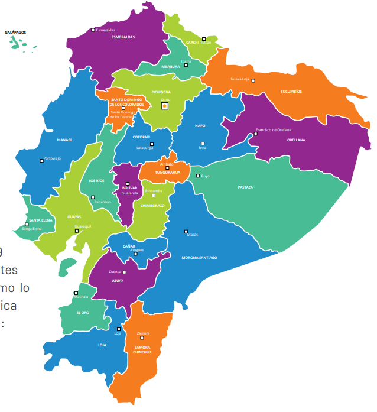
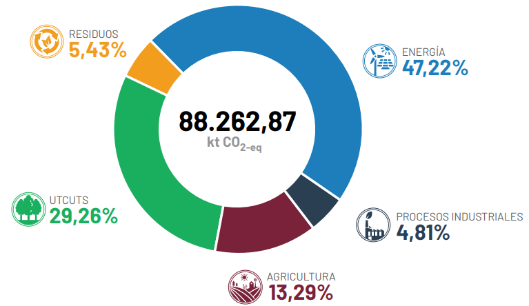
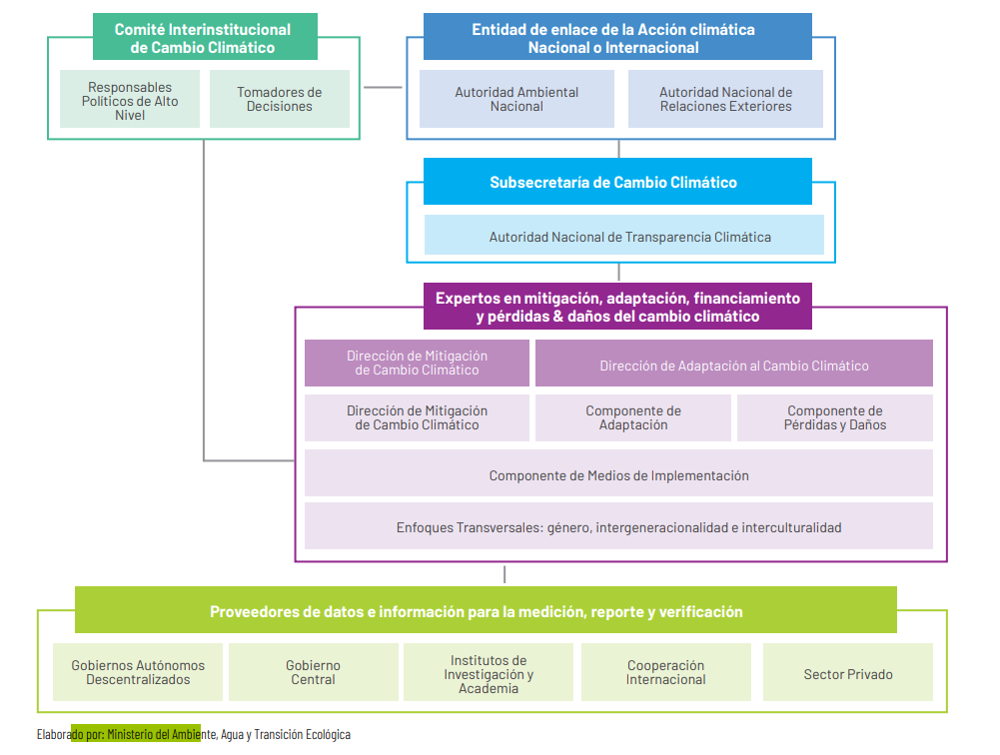
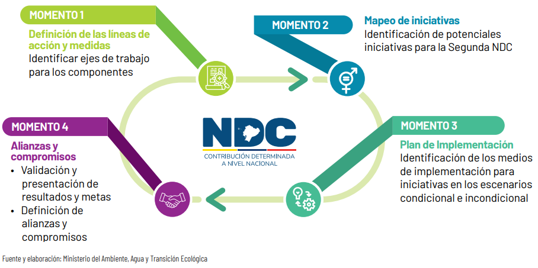
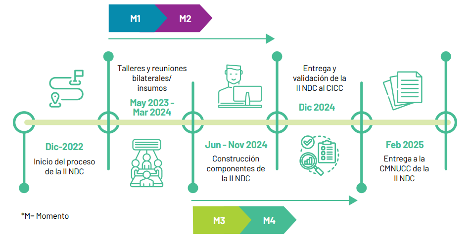
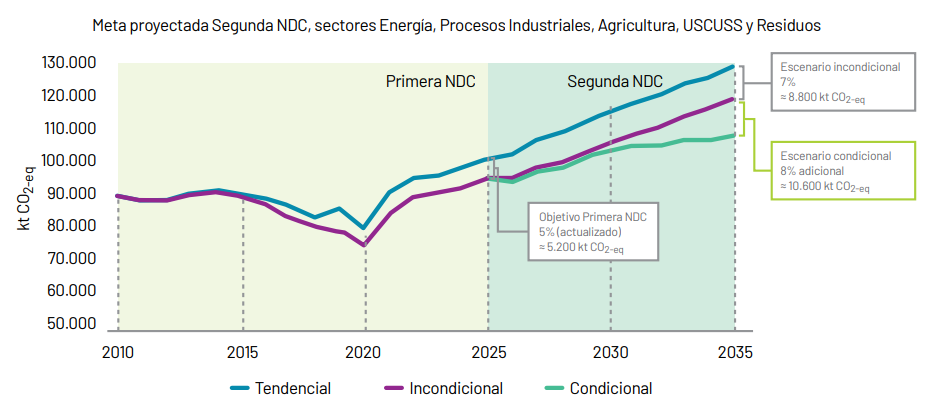
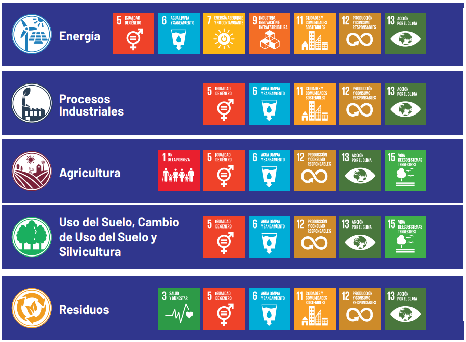
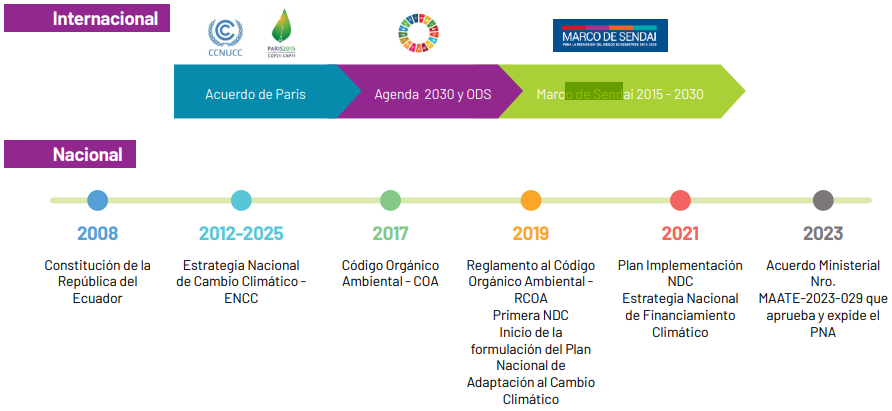
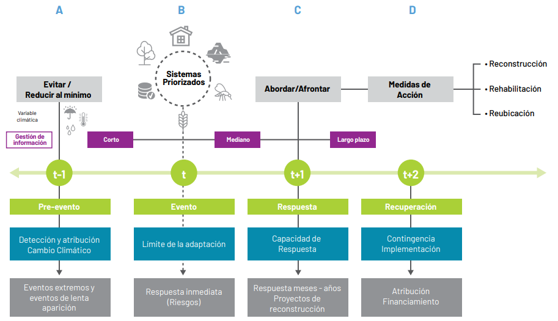

REPÚBLICA DEL ECUADOR 2026-2035
Segunda Contribución Determinada a Nivel Nacional República del Ecuador 2026-2035
Febrero, 2025
Cita recomendada
República del Ecuador. Segunda Contribución Determinada a Nivel Nacional de la República del Ecuador 2026-2035. Quito - Ecuador. 2025
AAN Autoridad Ambiental Nacional
ACE Acción por el Empoderamiento Climático
APH Áreas de Protección Hídrica
AR5 Quinto Informe de Evaluación del IPCC AR6 Sexto Informe de Evaluación del IPCC ARC Análisis de Riesgo Climático
BCE Banco Central del Ecuador
BEN Balance Energético Nacional
BEP Barriles Equivalentes de Petróleo
CACC Catálogo de Actividades de Cambio Climático
CGINA Coordinación General de Información Nacional Agropecuaria
CH4 Metano
CICC Comité Interinstitucional de Cambio Climático
CMA Conferencia de las Partes en calidad de reunión de las Partes en el Acuerdo de París
CMNUCC Convención Marco de las Naciones Unidas sobre el Cambio Climático
CNE Consejo Nacional Electoral
CNIG Consejo Nacional para la Igualdad de Género
CNII Consejo para la Igualdad Intergeneracional
CNIPN Consejo Nacional para la Igualdad de Pueblos y Nacionalidades
CNULD Convención de Naciones Unidas para la Lucha contra la Desertificación
CO Monóxido de carbono
CO2 Dióxido de carbono
CO2-eq Dióxido de carbono equivalente
COA Código Orgánico del Ambiente
COPFP Código Orgánico de Planificación y Finanzas Públicas COVDM Compuestos orgánicos volátiles distintos del metano CP Conferencia de las Partes
DIN Documento del Inventario Nacional de Gases de Efecto Invernadero
ENCC Estrategia Nacional de Cambio Climático
ENEMDU Encuesta Nacional de Empleo, Desempleo y Subempleo
ENOS El Niño-Oscilación del Sur
EPIC Environmental Policy Integrated Climate
ESPAC Encuesta de Superficie y Producción Agropecuaria Continua
FBKF Formación Bruta de Capital Fijo
GADM Gobiernos Autónomos Descentralizados Municipales
GCF Fondo Verde del Clima (Green Climate Fund por sus siglas en inglés)
GEF Fondo Mundial para el Medio Ambiente (Global Environment Facility por sus siglas en inglés)
GEI Gases de Efecto Invernadero
HFC Hidrofluorocarburos
INEC Instituto Nacional de Estadísticas y Censos
INGEI Inventario Nacional de Gases de Efecto Invernadero
IPCC Panel Intergubernamental de Expertos sobre el Cambio Climático (Intergovernmental Panel on Climate Change por sus siglas en inglés)
IPPU Procesos Industriales y Uso de Productos (Industrial Processes and Produce Use por sus siglas en inglés)
ITMOs Resultados de Mitigación Transferidos Internacionalmente (Internationally Transferred Mitigation Outcomes por sus siglas en inglés)
LGBTI+ Lesbianas, Gays, Bisexuales, Transgénero, Intersexuales y otras identidades y orientaciones sexuales
LORHUYA Ley Orgánica de Recursos Hídricos, Uso y Aprovechamiento del Agua
MAATE Ministerio del Ambiente, Agua y Transición Ecológica
MIPE Manejo Integrado de Plagas y Enfermedades
MRV Medición, Reporte y Verificación
MTR Marco de Transparencia Reforzado
N2O Óxido nitroso
NDC Contribución Determinada a Nivel Nacional (Nationally Determined Contribution en inglés)
NNAJ Niños, Niñas, Adolescentes y Jóvenes
NOx Óxidos de nitrógeno
ODS Objetivos de Desarrollo Sostenible
PA REDD+ Plan de Acción REDD+
PCG Potenciales de Calentamiento Global
PPEE Sectores Productivos y Estratégicos
PDOT Plan de Desarrollo y Ordenamiento Territorial
PIB Producto Interno Bruto
PNA Plan Nacional de Adaptación al Cambio Climático
PND Plan Nacional de Desarrollo
PRONAREG Programa Nacional de Regionalización Agraria
RCOA Reglamento al Código Orgánico del Ambiente
REDD+ Reducción de Emisiones por Deforestación y Degradación de los Bosques
RSU Residuos Sólidos Urbanos
SAG Soberanía Alimentaria, Agricultura, Ganadería, Acuacultura y Pesca
SCC Subsecretaría de Cambio Climático
SIOTUGS Sistema Integrado de Ordenamiento Territorial, Uso y Gestión del Suelo
SNAP Sistema Nacional de Áreas Protegidas
SO2 Dióxido de azufre
SOT Superintendencia de Ordenamiento Territorial, Uso y Gestión de Suelo
SOTE Sistema de Oleoducto Transecuatoriano
SPRACC Sistema de Información, Proyecciones, Riesgo Climático y Adaptación al Cambio Climático
SWAT Soil & Water Assessment Tool
USCUSS Uso del Suelo, Cambio de Uso del Suelo y Silvicultura
USD Dólares de los Estados Unidos de América
UTCUTS Uso de la Tierra, Cambio de Uso de la Tierra y Silvicultura
VAB Valor Agregado Bruto
ZAE Zonificación Agroecológica
La República del Ecuador es un país andino ubicado en el noroeste de América del Sur, con una extensión territorial de 256.370 km² que incluye su región continental, compuesta por Costa, Sierra y Amazonía, y su región insular (Islas Galápagos) en el Océano Pacífico. Además, cuenta con una superficie marítima de 1'358.440 km² 1, lo cual resalta su riqueza natural y diversidad geográfica. Su economía, caracterizada por la dolarización y la dependencia petrolera, ha sufrido altibajos, especialmente durante la pandemia del COVID-19. Sin embargo, en 2021 y 2022 mostró signos de recuperación, con un crecimiento económico impulsado por el consumo interno y sectores clave como la refinación de petróleo y el comercio.
A través de la Segunda Contribución Determinada a Nivel Nacional (NDC), el Ecuador reafirma su compromiso para contribuir al cumplimiento del objetivo del Acuerdo de París y de la Convención Marco de las Naciones Unidas sobre el Cambio Climático (CMNUCC). Sus ejes principales son la reducción de emisiones de Gases de Efecto Invernadero (GEI), el aumento de la capacidad de adaptación a los efectos adversos del cambio climático y la movilización de recursos financieros para contribuir con la gestión del cambio climático.
El objetivo general de la Segunda NDC de Ecuador es implementar políticas, acciones y esfuerzos que promuevan la reducción de gases de efecto invernadero, el aumento de la resiliencia y disminución de la vulnerabilidad a los efectos adversos del cambio climático, en los sectores priorizados de la Estrategia Nacional de Cambio Climático (ENCC) vigente, a través de un esfuerzo conjunto entre las entidades sectoriales del Gobierno Central, Gobiernos Locales, Sector Privado, Academia, Cooperación Internacional y Sociedad Civil. Estas acciones y esfuerzos se verán guiados por las líneas estratégicas y medidas identificadas en las secciones posteriores del documento. Basados en el Artículo 4 numeral 9 del Acuerdo de París y las decisiones de la CMNUCC, Ecuador presenta su Segunda NDC con un período de implementación entre el 01 de enero de 2026 hasta el 31 de diciembre de 2035.
La Segunda NDC responde a las políticas nacionales de desarrollo, mitigación, adaptación y financiamiento climático, así como a los instrumentos internacionales ratificados por el país como, la Agenda 2030 y los Objetivos de Desarrollo Sostenible (ODS) reflejados en sus distintos componentes: mitigación, adaptación, pérdidas y daños y medios de implementación.
La mitigación del cambio climático comprende los sectores priorizados en la Estrategia Nacional de Cambio Climático 2012-2025: Energía, Procesos Industriales, Agricultura, Uso del Suelo, Cambio de Uso del Suelo y Silvicultura (USCUSS) y Residuos.
De acuerdo con la Quinta Comunicación Nacional y Primer Reporte Bienal de Transparencia, en el año 2022, las emisiones totales de GEI en el Ecuador alcanzaron 88.262,87 kt CO2-eq.
Bajo estos antecedentes, la República del Ecuador se compromete en su escenario incondicional a alcanzar una reducción proyectada de emisiones de GEI en el 2035 de aproximadamente 8.800 kt CO2-eq, 7% con respecto al escenario tendencial año base 2010 entre todos los sectores de mitigación. Adicionalmente, se plantea una meta condicional, con la cual se podría alcanzar una reducción del 8%, aproximadamente 10.600 kt CO2-eq sujeto al apoyo de la cooperación internacional. Este objetivo ha sido planteado tomando como insumo la modelación del escenario de reducción de emisiones propuesto en el Plan Nacional de Mitigación considerada como estrategia a largo plazo.
En línea con el Artículo 7 del Acuerdo de París y como un país altamente vulnerable al cambio climático, Ecuador considera la adaptación como un componenteesencial de sus NDC. De acuerdo con la Estrategia Nacional de Cambio Climático 2012-2025 se priorizan en este componente los siguientes sectores: Patrimonio Natural, Patrimonio Hídrico, Salud, Asentamientos Humanos, Sectores Productivos y Estratégicos; y, Soberanía Alimentaria, Agricultura, Ganadería, Acuacultura y Pesca (SAG).
Considerando las barreras para implementar la adaptación a nivel nacional, se enfatiza la necesidad de fortalecer la capacidad adaptativa y aumentar la resiliencia de sus comunidades y ecosistemas frente a los impactos adversos del cambio climático. La Segunda NDC plantea medidas para: conservar el patrimonio natural, garantizar la disponibilidad del recurso hídrico, reforzar la respuesta sanitaria ante situaciones vinculadas con la presencia de enfermedades, diseñar e implementar infraestructura ante inundaciones y deslizamientos, y fortalecer la resiliencia alimentaria, garantizando que la producción de alimentos no se vea afectada por el cambio climático.
Respecto al componente de adaptación, el país se compromete a contribuir, a escala nacional y subnacional, con los esfuerzos globales de incrementar la capacidad de adaptación, la resiliencia y reducir el riesgo ante los efectos adversos del cambio climático, en un contexto de equidad, desarrollo sostenible y erradicación de la pobreza, respetando el principio de responsabilidades comunes pero diferenciadas, y en concordancia con las capacidades del país.
Ecuador, a pesar de sus esfuerzos voluntarios de mitigación y la implementación de sus acciones de adaptación, mira a futuro el desarrollo de mecanismos que le permitan abordar las pérdidas y daños atribuidos al cambio climático. La Segunda NDC ha establecido una aproximación de medidas iniciales, mientras se desarrolla el marco conceptual de pérdidas y daños ajustado a las circunstancias nacionales del país.
Sobre los medios de implementación, Ecuador, considerado un país en vías de desarrollo, ha realizado una estimación inicial de los recursos, mecanismos y herramientas financieras que permitan la implementación de sus acciones en el periodo 2026-2035. Esta estimación ha sido establecida en función de la información disponible y asciende a un monto aproximado de USD 6.500 millones de dólares, de los cuales 27% es incondicional y el 73% es condicional. Este monto constituye un presupuesto referencial estimado cuyo detalle se precisará a medida de las necesidades de gestión de las entidades ejecutoras. Así también, se han identificado acciones de fortalecimiento de capacidades y transferencia de tecnología para la implementación de las iniciativas que conforman la NDC. En este contexto, se refuerza la necesidad de contar con recursos externos que contribuyan a los esfuerzos nacionales para enfrentar el cambio climático.
Los esfuerzos reflejados en la Segunda NDC responden a lo establecido en los artículos 4, 7, 9 y 13 del Acuerdo de París y se introducen mejoras al proporcionar la información necesaria para asegurar claridad, transparencia y comprensión de los avances en su implementación en línea con el Marco de Transparencia Reforzado (MTR).
De acuerdo con la decisión 1/CP.21 de la aprobación del Acuerdo de París, donde se reconoce que el cambio climático es un problema común de la humanidad, Ecuador, de manera voluntaria, ha incluido los enfoques transversales de género, interculturalidad e intergeneracionalidad2 en su Segunda NDC con el fin de reducir las brechas sociales, contar con una política inclusiva que considere las necesidades y respeto a los derechos y conocimientos ancestrales de los pueblos y nacionalidades indígenas, así como el impacto que tendrá el cambio climático en las presentes y futuras generaciones.
Finalmente, la Segunda NDC representa un paso significativo hacia una economía baja en emisiones y resiliente al clima para enfrentar los efectos adversos del cambio climático. A través de esta política pública, Ecuador ratifica su compromiso de contribuir a los objetivos globales del Acuerdo de París.
El cumplimento de las metas propuestas requiere de un esfuerzo conjunto con el apoyo de la cooperación internacional. En este sentido, la Segunda NDC será la base para fortalecer las alianzas y movilizar los recursos necesarios para implementar las acciones climáticas en los siguientes años con miras a alcanzar los objetivos propuestos.
The Republic of Ecuador is an Andean nation located in the northwestern region of South America, spanning a land area of 256,370 km². This includes its continental regions comprising the Coast, Sierra (Highlands), and Amazon and its insular territory, the Galápagos Islands, situated in the Pacific Ocean. Ecuador also has a maritime area of 1,358,440 km² 3 , underscoring its abundant natural resources and geographic diversity. The country's economy, defined by its dollarized system and reliance on oil exports, has faced volatility, particularly during the COVID-19 pandemic. However, in 2021 and 2022, Ecuador demonstrated signs of economic recovery, driven by domestic consumption and key industries such as oil refining and trade. Through its Second Nationally Determined Contribution (NDC), Ecuador reaffirms its commitment to advancing the objectives of the Paris Agreement and the United Nations Framework Convention on Climate Change (UNFCCC). The primary pillars of this commitment are the reduction of Greenhouse Gas (GEI) emissions, enhancing the capacity for adaptation to the adverse impacts of climate change, and mobilizing financial resources to support climate change management efforts.
The overall goal of Ecuador's Second Nationally Determined Contribution (NDC) is to implement policies, actions, and efforts that promote the reduction of greenhouse gas emissions, increase resilience, and reduce vulnerability to the adverse impacts ofclimate change. These efforts will focus on the priority sectors outlined in the current National Climate Change Strategy (ENCC), through a collaborative effort involving the central government's sectoral entities, local governments, the private sector, academia, international cooperation, and civil society. These actions will be guided by the strategic priorities and measures outlined in the following sections of the document. In accordance with Article 4, paragraph 9 of the Paris Agreement and the decisions of the United Nations Framework Convention on Climate Change (UNFCCC), Ecuador presents its Second NDC with an implementation period from January 1, 2026 to December 31, 2035.
The Second NDC is aligned with Ecuador's national policies on development, climate change mitigation, adaptation, and climate financing. It also reflects the country's commitments to international agreements, including the 2030 Agenda and the Sustainable Development Goals (SDG), addressing key areas such as mitigation, adaptation, loss and damage, and the means of implementation.
Climate change mitigation includes the priority sectors identified in the National Climate Change Strategy 2012-2025: Energy, Industrial Processes, Agriculture, Land Use, Land Use Change and Forestry (LULUCF), and Waste.
According to the Fifth National Communication and First Biennial Transparency Report, in 2022, Ecuador's total greenhouse gas (GHG) emissions reached 88.262,87 kt CO2-eq.
Against this backdrop, the Republic of Ecuador commits, under its unconditional scenario, to achieving a projected reduction in greenhouse gas (GHG) emissions by 2035 of approximately 8.800 kt CO2-eq, representing a 7% reduction compared to the baseline trend scenario of 2010, across all mitigationsectors. Additionally, a conditionaltarget is set, under which an 8% reduction, approximately 10.600 kt CO2-eq, could be achieved, subject to the support of international cooperation. This objective has been established based on the modeling of the emissions reduction scenario proposed in the National Mitigation Plan, considered as a long-term strategy.
Consistent with Article 7 of the Paris Agreement and recognizing its high vulnerability to climate change, Ecuador considers adaptation a critical component of its Nationally Determined Contributions (NDCs). In accordance with the National Climate Change Strategy 2012-2025, the following sectors are prioritized in this component: Natural Heritage, Water Resources, Health, Human Settlements, Productive and Strategic Sectors, and Food Sovereignty, as well as Agriculture, Livestock, Aquaculture, and Fisheries (SAG).
Given the challenges in implementing national adaptation strategies, there is a clear emphasis on the need to enhance adaptive capacity and increase the resilience of communities and ecosystems to the adverse impacts of climate change. The Second Nationally Determined Contribution (NDC) proposes key measures to: conserve natural heritage, ensure sustainable water resource availability, Strengthen the healthcare response to situations involving disease outbreaks, design and implement infrastructure to mitigate flooding and landslides, and improve food sustainability, ensuring that food production remains resilient to climate change.
Regarding the adaptation component, the country is committed to contributing, at both national and subnational levels, to global efforts aimed at increasing adaptive capacity, enhancing resilience, and reducing risks to the adverse effects of climate change. This commitment is made within the framework of equity, sustainable development, and poverty eradication, while respecting the principle of common but differentiated responsibilities and in line with the country's capacities.
Despite its voluntary mitigation efforts and the implementation of adaptation actions, Ecuador is focusing on developing mechanisms to address losses and damages linked to climate change.
The Second NDC outlines an initial set of measures, while a conceptual framework for losses and damages is being developed, tailored to the country's specific national context.
Concerning the means of implementation, Ecuador, considered a developing country, has made an initial estimate of the resources, mechanisms, and financial tools necessary for the implementation of its actions during the 2026-2035 period. This projection has been established based on the available information and amounts to approximately USD 6.5 billion, of which 27% is unconditional and 73% is conditional. This amount represents an estimated reference budget, the details of which will be clarified as the management needs of the implementing entities evolve. Likewise, actions for capacity-building and technology transfer have been identified to implement the initiatives that make up the NDC. In this context, the need for external resources to support national efforts in addressing climate change.
The efforts outlined in the Second NDC align with the provisions of Articles 4, 7, 9, and 13 of the Paris Agreement and introduce improvements by providing the necessary information to ensure clarity, transparency, and understanding of progress in its implementation in line with the Enhanced Transparency Framework (MTR/ETF).
In accordance with Decision 1/CP.21 of the approval of the Paris Agreement, which recognizes climate change as a common issue for humanity, Ecuador has voluntarily incorporated gender, intercultural, and intergenerational4 approaches into its Second NDC in order to reduce social gaps, adopt an inclusive policy that considers the needs and respects the rights and ancestral knowledge of indigenous peoples and nationalities, as well as the impact that climate change will have on present and future generations.
Finally, the Second NDC represents a significant step toward a low-emission, climate-resilient economy to address the adverse effects of climate change. Through this public policy, Ecuador reaffirms its commitment to contribute to the global objectives of the Paris Agreement.
Reaching the proposed goals requires a joint effort with the support of international cooperation. In this regard, the Second NDC will serve as the foundation for strengthening partnerships and mobilizing the necessary resources to implement climate actions in the coming years, aiming to fulfill the proposed objectives.
La estructura del gobierno5 está determinada por cinco poderes o funciones del Estado establecidos en la Constitución de Ecuador de 2008. El Primer poder, es la Función Ejecutiva ejercida por el presidente de la República, quien actúa como jefe de Estado y de Gobierno, siendo responsable de la administración pública del país. El poder ejecutivo se encarga de concebir y ejecutar políticas generales, de acuerdo con las cuales, las leyes deben ser aplicadas, representando a la Nación en diversos ámbitos. Además, éste se apoya en 20 Ministerios y cuatro Secretarías de Estado, que son órganos constitucionales encargados de funciones específicas dentro del gobierno, como la rectoría y gestión de áreas específicas de la administración pública.
El Segundo poder del Estado es la Función Legislativa, la cual está representada por la Asamblea Nacional de la República del Ecuador. Esta instancia, desempeña un papel fundamental en la elaboración y aprobación de leyes, así como en el control y fiscalización del poder ejecutivo6.
El Tercer poder del Estado es la Función Judicial, compuesta por órganos jurisdiccionales, auxiliares y autónomos. Los órganos jurisdiccionales son la Corte Nacional de Justicia, las Cortes Provinciales de Justicia y los Tribunales y Juzgados de primer nivel. Los órganos auxiliares son las notarías, los martilladores7 y depositarios judiciales. Los órganos autónomos son la Defensoría Pública y la Fiscalía General del Estado. El Consejo de la Judicatura es el ente de gobierno, administración, vigilancia y disciplina de la Función Judicial. La Corte Nacional de Justicia es el órgano jurisdiccional de mayor jerarquía y conoce procesos judiciales de personas con fuero nacional. La Función Judicial está encargada de la administración, vigilancia y disciplina de la justicia en el país8.
El Cuarto poder es el Poder Electoral, representado por el Consejo Nacional Electoral (CNE), que es el máximo organismo encargado del sufragio en el país. Además, este órgano es responsable de la designación de autoridades conforme a la Constitución y la ley, contribuyendo así al funcionamiento del sistema democrático9.
Finalmente, el Quinto poder del Estado es la Función de Transparencia y Control social, el cual se enfoca en promover y garantizar el ejercicio de los derechos de participación, control social sobre lo público, rendición de cuentas, transparencia y la lucha contra la corrupción10.
Así también, la Constitución de la República del Ecuador ampara la gobernanza del cambio climático. Esto ha permitido el desarrollo de instrumentos normativos para la gestión de la política nacional ambiental. En relación con cambio climático, el Código Orgánico del Ambiente (COA) y su Reglamento (RCOA) son instrumentos legales que presentan los principios fundamentales de la gestión del cambio climático, delimitan las competencias a nivel nacional y el ámbito de actuación de la Autoridad Ambiental Nacional (AAN), alineándose también con los compromisos internacionales.
En el año 2009, a través del Decreto Ejecutivo Nro. 1815 se declarapolítica de Estado la adaptación y la mitigación al cambio climático. Posteriormente, en el mismo año, mediante Acuerdo Ministerial Nro. 104 se crea la Subsecretaría de Cambio Climático (SCC) al interno de la Autoridad Ambiental Nacional. Esta instancia se encarga de liderar las acciones de mitigación y adaptación al cambio climático, a la vez que facilita la implementación de mecanismos de transferencia de tecnología, financiamiento y fortalecimiento de capacidades para el diseño, promoción y evaluación de planes, programas, proyectos, medidas y acciones de cambio climático.
La Autoridad Ambiental Nacional tiene un papel determinante en la gestióntécnica de los instrumentos interinstitucionales de cumplimiento de los convenios y tratados internacionales de cambio climático, en especial de la Convención Marco de las Naciones Unidas sobre Cambio Climático (CMNUCC) y la Convención de Naciones Unidas para la Lucha contra la Desertificación (CNULD).
En este ámbito, lidera los procesos de formulación y seguimiento de las Contribuciones Determinadas a Nivel Nacional (NDC, por sus siglas en inglés), para la mitigación y adaptación al cambio climático. Este ministerio tiene entre sus atribuciones el coordinar, recopilar, junto otras instituciones públicas y privadas, el monitoreo y los reportes de los avances en la implementación de estos compromisos frente al cambio climático.
Como parte de la gobernanza para cambio climático se encuentra el Comité Interinstitucional de Cambio Climático (CICC) cuya presidencia recae en la Autoridad Ambiental Nacional. El CICC es un cuerpo colegiado encargado de gestionar, coordinar, dictar, facilitar y planificar la inclusión de políticas públicas intersectoriales de cambio climático a nivel nacional, como ejes transversales de política pública en todos los niveles de gobierno y dentro del sector privado. De igual manera, busca asegurar la implementación de política pública que le permita atender las problemáticas del cambio climático dentro del ámbito de las instituciones que lo componen, miembros Ad-hoc del Comité Interinstitucional de Cambio Climático y aquellos grupos de trabajo que para el efecto se creen.
El CICC está conformado por representantes de las diferentes carteras de Estado, así como representación de las diferentes asociaciones de gobiernos locales. Como parte de las atribuciones del CICC se encuentra la aprobación, revisión de informes de avance y evaluación de las NDC. Este Comitédesempeña un rol vital en la coordinaciónintersectorial e intergubernamental y congrega a autoridades nacionales de distintos sectores, junto con representantes de los gobiernos locales, para fomentar una gestión del cambio climático coherente y efectiva en todo el territorio ecuatoriano.
Adicionalmente, la lucha contra el cambio climático en el Ecuador está orientada por los instrumentos internacionales ratificados por el Estado, incluyendo la Convención Marco de Naciones Unidas sobre Cambio Climático, la Convención de las Naciones Unidas de Lucha contra la Desertificación, la Convención sobre la Diversidad Biológica, el Acuerdo de París, el Marco de Sendai, la Agenda 2030 y los Objetivos de Desarrollo Sostenible que forman el marco bajo el cual el Ecuador diseña e implementa una serie de acciones en la materia, incluyendo sus NDC.
En este contexto, la estructura del gobierno, la Autoridad Ambiental Nacional, el Comité Interinstitucional de Cambio Climático y las Institucionessectoriales públicas y privadas, aseguran que el país cumpla con sus obligaciones internacionales y además fomente la transparencia, rendición de cuentas y participación ciudadana en la acción climática. Este enfoque coordinado permite a Ecuador presentar reportes a la CMNUCC, demostrando su liderazgo y compromiso con una gestión climática proactiva.
El Instituto Nacional de Estadísticas y Censos (INEC), en el año 2022 realizó el último censo nacional en todo el territorio ecuatoriano. De acuerdo con esta información, en el año 2022, Ecuador tiene 16'938.986 habitantes, de los cuales el 51,3% corresponden a mujeres y el 48,7% hombres y la edad media de la población se acerca a los 29 años.
En Ecuador se identifican pueblos y nacionalidades: mestizos, montubios, indígenas (18 pueblos, 14 nacionalidades y 2 grupos en aislamiento voluntario), afroecuatorianos, blancos y otros. Según la caracterización del Censo 2022, el 77,5% de la población se reconoce como mestizo, el 7,7% montubio, el 7,7% indígena, el 4,8% afroecuatoriano, el 2,2% blanco y un 0,1% a otros. Además, referente a la distribución de la población en el territorio, el 63,1% de la población vive en zonas urbanas y el 36,9% en zonas rurales. El análisis por región muestra que aproximadamente el 53,3% reside en la Costa, el 41% en la Sierra, el 5,5% en la Amazonía y el 0,2% en Galápagos.
De acuerdo con los datos publicados por el INEC, la tasa nacional de analfabetismo pasó del 6,8% en 2010 al 3,7% en 2022. La tasa neta de asistencia a educación inicial se registra una ligera recuperación post pandemia que alcanza un 56,62% al año 2023. En el caso de la educación general básica llegó al 91,71%, mientras que, la tasa de bachillerato se estabiliza entre el 89-90%.
Según el Censo Ecuador de 2022, el acceso a servicios básicos en Ecuador es el siguiente: electricidad (96,2%); agua potable (61,1%); alcantarillado (43,6%) y recolección de basura (80,7%).
Finalmente, en el año 2023, la tasa de desempleo a nivel nacional fue de 3,8%, a nivel urbano esta tasa se ubicó en 5,0% y a nivel rural en 1,6%.
El Ecuador es un país andino ubicado en el hemisferiooccidental, al noroeste de
América del Sur, con una extensión total de 256.370 km2 que cubren tanto la superficie continental, compuesta por 3 regiones: Costa, Sierra y Amazonía, como la región Insular (Islas Galápagos) y además, cuenta con una superficie marítima de cerca de 1'358.440 km2 y es uno de los 17 países más megadiversos del mundo11.
Con respecto a la organización territorial, Ecuador se divide en 24 provincias, 221 cantones y 1.499 parroquias que conforman los diferentes niveles de organización territorial, como lo demarca la Constitución de la República del Ecuador y se muestra a continuación:
Figura 1. División política-administrativa del Ecuador

Fuente: Secretaría Técnica del Comité Nacional de Límites Internos
La topografía y ubicación geográfica del Ecuador, le permite poseer un sinnúmero de microclimas dentro de sus cuatro regiones naturales: Costa del Pacífico, Sierra o de los Andes, Amazonía y Galápagos. El clima en el país se caracteriza por una complejidad de factores biofísicos relacionados a la ubicación geográfica y la interacción espacio temporal y persistencia de los parámetros climáticos que influyen en los sistemas atmosféricos regionales y microrregionales12.
Ecuador cuenta con una variedad ecosistémica e inmensa riqueza en patrimonio natural. De acuerdo con la Quinta Comunicación Nacional y Primer Reporte Bienal de Transparencia13, hasta diciembre de 2022, el Sistema Nacional de Áreas Protegidas (SNAP) registró 76 áreas sumando un total de 26'208.785,58 ha. El SNAP agrupa al conjunto de áreas naturales que garantizan la cobertura y conectividad de ecosistemas importantes en los niveles terrestre, marino y marino- costero, así como de sus recursos culturales y de las principales fuentes hídricas.
Por otro lado, el Plan Nacional de la Gestión Integrada e Integral de los Recursos Hídricos de las cuencas y microcuencas hidrográficas de Ecuador del año 2016 señala que el país dispone de 361.747 hm3 en recursos hídricos superficiales y 56.556 hm3 en subterráneos. El volumen medio anual para las regiones del país, Costa, Sierra y Amazonía es de 70.046 hm3, 59.725 hm3 y 246.246 hm3, respectivamente. Debido a factores atmosféricos, pero también a su geografía, Ecuador posee múltiples climas y microclimas que varían a muy cortas distancias, y van desde cálido hasta frío glaciar.
Las principales cuencas hidrográficas en Ecuador son la Pacífica y la Amazónica. Entre los sistemas hidrográficos más destacables está la cuenca Pacífica que incluye las cuencas de los ríos Esmeraldas, Mira, Cayapas, Guayas, Jubones, Puyango y Catamayo Chira. Mientras que, la cuenca Amazónica incluye las cuencas de los ríos Putumayo, Napo, Tigre, Pastaza, Santiago, Morona y Chinchipe al sur. Las cuencas hidrográficas más extensas son las del río Guayas (en la cuenca Pacífica) y el río Napo (en la cuenca Amazónica)14.
De acuerdo con la Quinta Comunicación Nacional y Primer Reporte Bienal de Transparencia, el Ecuador tiene una economía diversa con variedad de sectores productivos y estratégicos, misma que en la última década, ha experimentado cambios significativos y muy evidentes, mostrando algunas debilidades estructurales como la dependencia de las exportaciones de petróleo, la carencia de amortiguadores macroeconómicos, el limitado acceso a los mercados de capitales, el poco dinamismo del sector privado, la elevada informalidad y las grandes brechas en el acceso a servicios públicos.
La economía ecuatoriana está caracterizada por una fuerte dependencia de las exportaciones de petróleo que, junto con la dolarización, ha experimentado cambios significativos en las últimas décadas. La pandemia del COVID-19 exacerbó las vulnerabilidades existentes, provocando una contracción económica en 2020.
El confinamiento y las restricciones a la movilidad generaron una caída en la demanda agregada, afectando especialmente a sectores como el turismo y la hostelería. La reducción de los precios internacionales del petróleo agravó la situación fiscal del país. Sin embargo, la economía ecuatoriana mostró signos de recuperación en 2021 y 2022, impulsada principalmente por el consumo de los hogares y la inversión.
A pesar de esta recuperación, persisten desafíos estructurales que limitan el crecimiento económico sostenible. La alta informalidad laboral, la limitada diversificación productiva y las brechas en el acceso a servicios públicos son algunos de los problemas más acuciantes. Además, la volatilidad de los precios de las materias primas y la incertidumbre política interna representan riesgos para la estabilidad macroeconómica.
Los datos proporcionados por el Banco Central del Ecuador (BCE), muestran que la economía ecuatoriana se ha visto afectada por la crisis sanitaria, pero también ha demostrado cierta resiliencia. Los sectores de la refinación de petróleo, alojamiento y servicios de comida, acuicultura y pesca de camarón, transporte y comercio fueron los que mayor crecimiento registraron en 2021. Sin embargo, la recuperación ha sido heterogénea y existen sectores que aún no han recuperado los niveles prepandemia.
Conforme a los datos del Banco Central del Ecuador, en el lapso de los años 2020 al 2022, la economía ecuatoriana creció un 4,9% en 2021, después de una contracción de -7,80% en 2020, debido a la pandemia del COVID-19, este crecimiento fue impulsado por la variación positiva del Gasto de Consumo Final de los Hogares (10,20%) y la Formación Bruta de Capital Fijo (FBKF) (4,30%).
El BCE, señala que en 2023 el Producto Interno Bruto (PIB) del Ecuador creció en 2,4%, inferior al crecimiento de 6,2% alcanzado en 2022. Este crecimiento estuvo impulsado por el dinamismo del Gasto de Gobierno, que aumentó en 3,7%; las Exportaciones en 2,3%; el Consumo de los Hogares en 1,4%; y la FBKF en 0,5%.
A nivel de industrias, los siguientes sectores presentaron un desempeño positivo: Suministro de electricidad y agua en 7,1%; pesca y acuicultura en 5,9%; administración pública en 5,2%; agricultura, ganadería y silvicultura en 4,9%; y transporte y almacenamiento en 4,8%.
De acuerdo con datos del Instituto Nacional de Estadísticas y Censos (INEC), en el 2023, el coeficiente de Gini registró un valor de 0,457 frente a 0,505 reportado para el año 2010. Este índice mide la desigualdad de ingresos en una sociedad, y en el caso de Ecuador, se refiere al ingreso per cápita del hogar.
A su vez, según la Encuesta Nacional de Empleo, Desempleo y Subempleo (ENEMDU), el porcentaje de pobreza en Ecuador en diciembre de 2023 fue de 26% y esto representa un aumento de 0,8 puntos porcentuales en comparación con diciembre de 2022. En el mismo año, la pobreza urbana se ubicó en 18,4% y la rural en 42,2%; la pobreza extrema fue de 9,8% a nivel nacional, teniendo mayor incidencia en el área rural con 23,7%.
La ubicación geográfica de Ecuador, su compleja orografía y la influencia de fenómenosoceánicos como El Niño-Oscilación del Sur (ENOS) y la corriente de Humboldt han dado lugar a una gran diversidad climática. A diferencia de las regiones templadas con sus cuatro estaciones bien definidas, el territorio ecuatoriano presenta una alternancia entre períodos secos y lluviosos.
La Cordillera de los Andes, que atraviesa el país de norte a sur, ejerce una influencia determinante en la distribución de las precipitaciones. Las vertientes occidentales, expuestas a los vientos húmedos provenientes del océano Pacífico, reciben abundantes lluvias, mientras que las orientales, en la sombra de lluvia, presentan un clima más seco.
Además, en el país se origina un aumento en las precipitaciones en la costa ecuatoriana y sequías en otras regiones originadas por el fenómeno de El Niño, caracterizado por el calentamiento de las aguas del Pacífico ecuatorial. Por otro lado, La Niña, fase fría del ENOS, suele traer consigo condiciones más secas en la costa y mayores precipitaciones en la sierra.
Esta variabilidad climática ha dado origen a una amplia gama de ecosistemas, desde los bosques húmedos tropicales de la Amazonía hasta los páramos andinos. La diversidad climática de Ecuador es un factor fundamental para su rica biodiversidad y representa un desafío para la gestión de recursos naturales y la adaptación al cambio climático.
En el marco del Plan Nacional de Adaptación y las comunicaciones nacionales, las proyecciones de clima futuro muestran que, para el futuro cercano (2020 - 2050) el comportamiento de las precipitaciones y temperaturas será relativamente similar al del presente, excepto por cambios en frecuencia de ocurrencia de los escenarios.
Entre 2020 y 2050 se podría presentar años con temperaturas mayores hasta por 2 °C, lo cual podría generar varios cambios tanto en las personas, organismos vivos, y recursos naturales. Así también, se evidencia cambios de precipitación de hasta 9mm de precipitación por día en ciertas zonas del país, lo que potencialmente generaría mayor cantidad de inundaciones y deslizamientos. Por otro lado, la información muestra que, en Ecuador, las zonas propensas a sequías y que ya presentan bajos niveles de precipitación, pueden experimentar una reducción del 4,5 mm de precipitación diarios menor al promedio observado.
Además, se proyecta que la mayoría de los días del año bajo escenarios de cambio climático podrían derivar en días con lluvias y temperaturas medias muy similares a las del presente, aunque ligeramente más húmedos en la costa norte y el Oriente del país, y ligeramente más frescos en la mayor parte de Ecuador continental e insular. En promedio, las temperaturas máximas y mínimas serían más extremas hacia el sur y sudeste del Ecuador continental.
Finalmente, bajo escenarios de cambio climático, eventos como El Niño se proyecta que ocurran solo ~3% de los días del año en 2020 - 2050, aunque con magnitudes más extremas. El patrón exhibe precipitaciones positivas extremas a lo largo de la Costa ecuatoriana y Galápagos, lluvias dentro de lo normal a lo largo de la cordillera andina y precipitaciones bajo la normal en el Oriente, así como temperaturas medias y máximas extremas positivas, y noches solo ligeramente frías en la mitad sur-sureste del Ecuador continental y en Galápagos. En promedio, los volcanes del país han perdido cerca del 50% de su superficie glaciar durante el último medio siglo.
La pandemia del COVID-19 golpeó la economía a nivel mundial, agravando los desafíos de desarrollo. En Ecuador este comportamiento fue similar pues el confinamiento afectó las actividades productivas y de progreso, incrementando el alto gasto público en temas de salud. La pandemia ha exacerbado las condiciones de pobreza y desigualdad, representando un desafío significativo para la sostenibilidad y resiliencia del país ante el cambio climático.
Los principales impactos fueron:
Contracción económica: La actividad económica se contrajo debido a las medidas de confinamiento y las restricciones a la movilidad, lo que afectó a sectores como el turismo, la hostelería y el comercio. Se presentó una contracción de la economía del 7,8% al pasar de un PIB de USD 71.897 millones en el 2019 a USD 66.308 millones al 2020.
Aumento del desempleo: La pérdida de empleos, especialmente en el sector informal, elevó las tasas de desempleo y generó una mayor precariedad laboral. El desempleo se incrementó en 1 punto, pasando de 4,2% en el 2019 a 5,2% en el 2021. El subempleo creció en 5 puntos, pues registraba una tasa de 18,2% en el 2019 y alcanzó 23,2% en el 2021. La tasa de empleo adecuada cayó en 5,8 puntos, al pasar de 38,3% en el 2019 a 32,5% en el 202115.
Caída de las exportaciones: La disminución de la demanda mundial y la caída de los precios del petróleo afectaron negativamente las exportaciones ecuatorianas. Los ingresos del presupuesto general del Estado se redujeron en 27%.
Aumento de la deuda pública: El gobierno tuvo que incrementar el gasto público para enfrentar la crisis sanitaria, lo que aumentó la deuda pública, evidenciándose un incremento de 10,9 puntos del PIB, al pasar de 53,02% en el 2019 a 63,93% en el 2020, con una participación del 72% de deuda externa y 28% de deuda interna.
Aumento de la pobreza: La pandemia profundizó las desigualdades existentes y aumentó los niveles de pobreza. Según el INEC, la pobreza se incrementó en 8 puntos porcentuales, pasando de 25% en el 2019 a 33% en el 2020; la extrema pobreza registró un crecimiento de 6,5 puntos, pues alcanzó 8,9% en el 2019 y 15,4% en el 2020; siendo los índices más elevados registrados desde el 2010.
A pesar de estos desafíos, la economía ecuatoriana ha mostrado signos de recuperación en los últimos años, impulsada principalmente por el consumo de los hogares y la inversión. Sin embargo, la recuperación ha sido heterogénea y persisten desafíos estructurales que requieren ser abordados.
Respecto a la Primera NDC, la pandemia del COVID-19 y las subsiguientes restricciones de movilidad, generaron desafíos en la gestión de la política pública climática. Sectores como Agricultura, USCUSS, Energía, Procesos Industriales y Residuos experimentaron dificultades para llevar a cabo sus actividades habituales, desde monitoreo en campo, visitas locales hasta capacitaciones comunitarias. Por otro lado, los recortes presupuestarios y la reorientación de recursos hacia la emergencia sanitaria agravaron aún más esta situación, evidenciando la necesidad de replantear las estrategias de implementación por la falta de designación de recursos.
En el caso de los sectores de adaptación, también fueron afectados por las restricciones de movilidad impuestas por la pandemia del COVID-19 en la ejecución de proyectos. Sectores como Patrimonio Hídrico, Asentamientos Humanos y SAG, se vieron afectados en la implementación de acciones debido a la imposibilidad de realizar actividades en territorio, talleres participativos y coordinaciones presenciales con comunidades. La crisis económica, acentuada por la pandemia, agravó la situación al generar recortes de personal, reducir las jornadas laborales y limitar los recursos disponibles. Como consecuencia, se produjeron retrasos en la implementación de proyectos y una disminución en la capacidad de gestión. El sector Patrimonio Natural, que depende en gran medida de estudios y monitoreos en campo, también sufrió las consecuencias de estas restricciones.
A su vez, se evidenciaron impactos en la ejecución de las medidas transversales de la Primera NDC. Las organizaciones encargadas de estas medidas enfrentaron desafíos iniciales debido al cambio a la modalidad de trabajo remoto, lo que afectó los plazos y la coordinación de actividades. No obstante, con el tiempo, se lograron adaptar a esta nueva dinámica.
El sector Salud, especialmente afectado por la emergencia sanitaria, tuvo que pausar todas sus actividades planificadas dentro de la Primera NDC para centrarse en el control de la pandemia.
Los sectores para la gestión del cambio climático en el Ecuador se definen de acuerdo con la Estrategia Nacional de Cambio Climático 2012-2025.
Para el componente de mitigación del cambio climático, el sector Energía considera todos los procesos que involucran la extracción y explotación de energía primaria; la conversión de las fuentes primarias de energía en formas utilizables como, por ejemplo: refinerías y centrales eléctricas; la transmisión y distribución de combustibles; y el uso de combustibles en aplicaciones estacionarias y móviles; las emisiones que surgen de actividades por combustión y como emisiones fugitivas, o por escape sin combustión.
El sector Procesos Industrialescomprende las emisiones de GEI por la transformación de materias primas por medios químicos o físicos. Este sector engloba una amplia gama de industrias que contemplan la producción de cemento y cal, la fabricación de productos químicos, la metalurgia y el uso de productos sustitutos de las sustancias que agotan la capa de ozono.
Por otro lado, las emisiones de GEI del sector Agricultura están relacionadas con las actividades agrícolas y pecuarias. Concretamente las emisiones provienen de la metanogénesis derivada de microorganismos en el proceso digestivo del ganado, así como, de la aplicación de insumos orgánicos y fertilizantes nitrogenados al suelo en los cultivos.
El sector USCUSS es el único que reportatantoemisiones de GEI comoabsorciones. Las emisiones se reportan principalmente al existir una disminución del área boscosa nacional, mientras que, las absorciones son producto de la conservación o aumento del área boscosa por procesos de recuperación del bosque o reforestación.
Otro sector considerado en el componente de mitigación es el sector de Residuos, que engloba todas las actividades relacionadas con la generación, manejo y disposición final de los desechos sólidos y líquidos, desde la producción de residuos hasta su tratamiento y eliminación.
Desde el punto de vista de las emisiones de gases de efecto invernadero que genera el país, corresponde indicar que las emisiones totales del INGEI al año 2022 ascienden a 88.262,87 kt de CO2-eq, de los cuales, el sector Energía genera el mayor aporte con 47,22% (41.674,68 kt CO2-eq) de dichas emisiones, seguido del sector UTCUTS16, con 29,26% (25.823,20 kt CO2-eq) y el sector Agricultura, con el 13,29% (11.728,67 kt CO2-eq). Los sectores de Residuos y Procesos Industriales y Uso de Productos (IPPU) representan el 5,43% (4.790,54 kt CO2-eq) y el 4,81% (4.245,78 kt CO2-eq), respectivamente, como se detalla en la siguiente figura:
Figura 2. Contribución porcentual de emisiones de GEI por sectores al INGEI 2022

Fuente: Quinta Comunicación Nacional y Primer Reporte Bienal de Transparencia
Los resultados de las estimaciones de emisiones derivadas por las fuentes y absorciones por sumideros de los GEI a nivel nacional para el año 2022 y el análisis de la serie temporal 1994-2022, presentados en la Quinta Comunicación Nacional y Primer Reporte Bienal de Transparencia, fueron realizadas acorde las directrices del Panel Intergubernamental de Expertos sobre el Cambio Climático (IPCC) 2006 para los Inventarios Nacionales de Gases de Efecto Invernadero, junto con el refinamiento de 2019 y los Potenciales de Calentamiento Global (PCG) del Quinto Informe de Evaluación (AR5).
Los GEI evaluados fueron los siguientes: dióxido de carbono (CO2), metano (CH4), óxido nitroso (N2O), hidrofluorocarburos (HFC), monóxido de carbono (CO), óxidos de nitrógeno (NOx), compuestos orgánicos volátiles distintos del metano (COVDM) y dióxido de azufre (SO2) no controlados por el Protocolo de Montreal. Para fines de reporte, las emisiones/remociones se expresan en unidades de dióxido de carbono equivalente (CO2-eq) para hacerlas comparables entre sí.
Para el componente de adaptación al cambio climático se analizan los sectores: Patrimonio Hídrico y Patrimonio Natural, éstos son particularmente sensibles ante la ocurrencia de cambios en las precipitaciones y temperatura. Por esta razón, se verían fuertemente afectados al acentuarse las condiciones de déficit y superávit de agua en las cuencas hídricas y al alterarse las condiciones ambientales en los ecosistemas del país, caracterizados mayormente por ser muy frágiles.
El Sector Soberanía Alimentaria, Agricultura, Ganadería, Acuacultura y Pesca se analiza considerando los efectos que los cambios de la temperatura y las alteraciones en los regímenes de las precipitaciones causan sobre la producción de alimentos (consumo interno y exportación) y las repercusiones que ello tiene sobre los precios, el acceso de las poblaciones a los productos, entre otros.
A su vez, los Sectores Productivos y Estratégicos y el Sector de Asentamientos Humanos se analizan por su vulnerabilidad ante los efectos adversos del cambio climático, debido a potenciales impactos en el comercio, transporte y en la infraestructura urbana y rural. De la misma forma, grupos y asentamientos humanos vulnerables a los eventos extremos del clima, verían incrementados los factores de riesgo por las precipitaciones y temperaturas extremas cada vez más frecuentes e intensas.
En el ámbito del sector Salud se han observado incrementos de enfermedades y epidemias exacerbados por las alteraciones climáticas, pues se espera ampliación en la distribución de transmisores de enfermedades que se adaptarían a nuevos pisos altitudinales (cada vez a cotas superiores).
En resumen, para el componente de mitigación del cambio climático se aborda: Energía, Procesos Industriales, Agricultura, Uso del Suelo, Cambio de Uso del Suelo y Silvicultura (USCUSS) y Residuos.
En el componente de adaptación al cambio climático se tiene: Patrimonio Natural, Patrimonio Hídrico, Salud, Asentamientos Humanos, Sectores Productivos y Estratégicos; y Soberanía Alimentaria, Agricultura y Ganadería, Acuacultura y Pesca.
La Segunda NDC de Ecuador considera estos 11 sectores y plantea líneas de acción de mitigación y medidas de adaptación, diferenciando dos escenarios:
Escenario incondicional: Se refiere a los compromisos y acciones que un país está dispuesto a implementar mediante sus recursos y capacidades propias.
Escenario condicional: Refleja la necesidad de apoyo adicional para que el país pueda aumentar la ambición en sus NDC. Corresponde a las acciones que un país está dispuesto a asumir si se cuenta con apoyo financiero, fortalecimiento de capacidades y/o transferencia de tecnología provistos por la cooperación internacional.
Los sectores priorizados para la gestión de cambio climático inciden de manera directa e indirecta tanto en las emisiones como absorciones. Es por ello, que a continuación se detalla el impacto de cada actividad sobre las emisiones de GEI17:
Energía: Las emisiones de gases de efecto invernadero del sector Energía están relacionadas de manera directa con las actividades de quema de combustibles fósiles y emisiones fugitivas provenientes de la fabricación de combustibles fósiles. Según el Balance Energético Nacional (BEN) del Ecuador, que es la principal fuente de información para el INGEI en este sector, en el año 2022 la producción total de energía primaria fue de 203 millones de Barriles Equivalentes de Petróleo (BEP), de los cuales el 86,4% correspondió a la producción de petróleo (incluyendo la exportación), el 9,1% a la producción de energía renovable (hidroenergía, leña, productos de caña, energía eólica, fotovoltaica y biogás) y el 4,5% a la producción de gas natural.
La producción total de energía secundaria se ubicó en 80,4 millones de BEP, desagregada en electricidad, diésel, gasolinas y naftas, gas licuado de petróleo (GLP), fuel oil y no energéticos. Respecto a la matriz de generación eléctrica, el 75% corresponde a energía renovable (incluye hidroeléctrica), un 23,6% a fuentes térmicas y 1,4% proveniente de interconexión con Perú y Colombia18.
Respecto al consumo de energía a nivel sectorial, en el año 2022, se identifica al subsector de transporte como el mayor consumidor de energía con un 49,1% del total de la energía producida en el país. A este le siguen los sectores industrial y residencial con 17,9% y 13,1%, respectivamente.
Con menores niveles de consumo energético se encuentran los sectores comercial-servicio público (6,1%), consumo propio (energía utilizada para procesos en plantas de generación, refinerías, ductos, entre otros) con el 4,3%, y agro, pesca y minería con el 1,2%19.
De acuerdocon el INGEI del año 2022, el sector Energía emitió 41.674,68 ktde CO2-eq , representando el 47,22% respecto al total nacional.
Procesos Industriales: Las principales fuentes de emisión en este sector provienen de los procesos industriales que transforman materias primas por medios químicos o físicos. Este sector engloba una amplia gama de industrias que contemplan la producción de cemento y cal, la fabricación de productos químicos, la metalurgia y el uso de productos sustitutos de las sustancias que agotan la capa de ozono. En 2020, las industrias de Manufactura y Construcción representaron el 17% del Valor Agregado Bruto (VAB) total20.
En el contexto de Ecuador, el procesamiento de materias primas en productos finales tiene un impacto en las emisiones de GEI. Por ejemplo, en la fabricación de cemento, el proceso de calcinación de la caliza para producir clínker es altamente intensivo en energía y libera grandes cantidades de CO2 a la atmósfera. Además, algunos procesos en la fabricación de cerámica, hierro y vidrio pueden generar como subproductos gases de efecto invernadero, así como el uso de productos como sustitutos para las sustancias que agotan la capa de ozono. En este sentido, el sector Procesos Industriales y Uso de Producto (IPPU) emitió en el 2022, 4.245,78 kt de CO2-eq, representando el 4,81 % respecto al total nacional.
Agricultura: Las emisiones del sector Agricultura están relacionadas a las actividades agrícolas y pecuarias, concretamente a emisiones que provienen en su mayoría de los procesos de metanogénesis derivados de microorganismos en el proceso digestivo del ganado y de la aplicación de insumos orgánicos y fertilizantes nitrogenados al suelo de cultivos agrícolas.
Las actividades de la gestión agrícola y pecuaria del Ecuador son cruciales para la economía del país. La participación del sector agropecuario en el PIB real alcanzó el 7,5% en 202221. El sector agricultura en el país se desarrolla principalmente en las áreas rurales, allí se sitúan las empresas, asociaciones y familias dedicadas a la producción agropecuaria. Respecto a la actividad pecuaria, está relacionado con bajos niveles de eficiencia productiva (6,03lt/vaca/día y 30-36 meses de engorde), ocupando grandes extensiones de terreno, con pastos mal aprovechados y emisiones de CO2-eq por unidad de leche o carne indirectamente proporcionales al nivel de productividad22.
En este sentido, en el año 2022 el sector Agricultura es responsable de 11.728,67 kt de CO2-eq que representan el 13,29% de las emisiones totales.
Uso del Suelo, Cambio de Uso del Suelo y Silvicultura:
En las últimas dos décadas, el sector de Uso del Suelo, Cambio de Uso del Suelo y Silvicultura (USCUSS) en Ecuador ha experimentado transformaciones significativas, influenciadas por una compleja interacción de factores socioeconómicos, políticos y ambientales. La deforestación ha sido un desafío persistente, impulsada principalmente por la expansión de fronteras agrícolas y ganaderas. De acuerdo con la información del Ministerio, Ambiente, Agua y Transición Ecológica, entre 1990 y 2022, se perdieron 2,4 millones de hectáreas de bosque nativo en el país, lo que representa una tasa anual de deforestación de aproximadamente 0,63%23.
A pesar de estos desafíos, Ecuador ha implementado programas emblemáticos como el Proyecto Socio Bosque, Plan Nacional de Restauración Forestal 2019-2030, que contribuyen a la conservación,reforestaciónyrestauracióndeecosistemas.Elmanejoforestalsosteniblehaganado terreno mediante iniciativas que promueven la certificación de bosques y el empoderamiento de comunidades indígenas y locales en la gestión de sus territorios. Paralelamente, Ecuador ha participado activamente en iniciativas internacionales como el mecanismo de Reducción de Emisiones por Deforestación y Degradación de los Bosques (REDD+), buscando canalizar financiamiento climático, por los resultados positivos en la reducción de emisiones del sector forestal y dar sostenibilidad a medidas y acciones de conservación. El sistema de áreas protegidas del país se ha ampliado, con la creación de nuevos parques nacionales y reservas ecológicas.
Esta expansión ha sido acompañada por mejoras en los sistemas de monitoreo de bosques, aprovechando tecnologías como imágenes satelitales, lo que ha permitido un control y gestión más eficaces de los recursos forestales. Para el año 2022, el sector UTCUTS reportó 25.823,20 kt CO2-eq que representa el 29,26% respecto al total nacional.
Residuos: La generación de residuos está estrechamente ligada a las tendencias de urbanización y los patrones de consumo. El crecimiento de las ciudades, junto con los cambios en los hábitos de consumo, han incrementado la cantidad de residuos producidos, las descargas de aguas residuales y por ende las emisiones de GEI por la descomposición de materia orgánica. Sin embargo, es importante destacar que las condiciones locales y las políticas públicas relacionadas con la gestión de residuos también juegan un papel fundamental en esta dinámica.
Según las estadísticas de Información Ambiental Económica en Gobiernos Autónomos Descentralizados Municipales (GADM), publicadas en diciembre de 2023, se destaca que la producción per cápita promedio de residuos sólidos en áreas urbanas es de 0,9 kg/día; del total de los Residuos Sólidos Urbanos (RSU), el 54,9% corresponde a residuos orgánicos; el 34,5% de los GADM han implementado o mantienen procesos de separación en la fuente y que, en promedio, el país recolecta 14.394 toneladas de RSU al día24.
Las zonas climáticas del país, los datos de población, la producción per cápita de residuos sólidos, los residuos sólidos recolectados y la disposición final de residuos incide significativamente en la generación de emisiones de GEI. En este sentido, en el año 2022 el sector Residuos es responsable de 4.790,54 kt de CO2-eq que representan el 5,43% de las emisiones totales.
2.1 Instrumentos de gestión de cambio climático a nivel nacional
De acuerdo con la normativa nacional, Ecuador cuenta con varios instrumentos de gestión del cambio climático, entre ellos:
Estrategia Nacional de Cambio Climático
Plan Nacional de Mitigación del Cambio Climático
Plan Nacional de Adaptación al Cambio Climático
Contribución Determinada a Nivel Nacional
Estrategia Nacional de Financiamiento Climático
En el caso de la Segunda NDC, su formulación e implementación está relacionada con los instrumentos mencionados anteriormente.
Respecto a la Estrategia Nacional de Cambio Climático, la Segunda NDC aborda los sectores priorizados para la mitigación y adaptación incluyendo de formatransversal los gruposvulnerables y de atención prioritaria.
En referencia al Plan Nacional de Mitigación, la Segunda NDC considera las líneas y objetivos establecidos en esta estrategia a largo plazo. Además del modelo de cálculo empleado por el Plan para garantizar consistencia y comparabilidad entre los resultados de los instrumentos. En este sentido, todas las iniciativas y acciones que se implementen en la Segunda NDC contribuyen a los objetivos establecidos por esta política macro y su escenario de reducción de emisiones al 2070.
En relación con el componente de adaptación, la Segunda NDC considera lo establecido por el Plan Nacional de Adaptación, tomando como base las medidas que responden a los análisis de riesgo climático para los seis sectores priorizados.
Así también, la identificación de las iniciativas que aportan a las medidas y líneas de la acción de la Segunda NDC se encuentran alineadas con las diferentes políticas públicas sectoriales que se implementan a nivel nacional.
Finalmente, en referencia a financiamiento climático, la Segunda NDC de Ecuador adopta el enfoque de la Estrategia Nacional de Financiamiento Climático al emplear las categorías establecidas en el Catálogo de Actividades de Cambio Climático. Esto con miras a buscar la gestión de los recursos disponibles, y así propiciar la movilización de flujos adicionales que son fundamentales para la implementación de las acciones establecidas en la Segunda NDC.
Ecuador ha establecido un marco legal y político sólido para enfrentar los desafíos del cambio climático. La Constitución de la República del Ecuador del año 2008 reconoce la importancia de proteger el ambiente y garantiza los derechos de las personas a vivir en un entorno saludable. Así también, la Constitución reconoce a Ecuador como un Estado intercultural y plurinacional y establece varios derechos colectivos para los pueblos y nacionalidades indígenas.
Es así que, en el Artículo 14 se reconoce el derecho de la población a vivir en un ambiente sano y ecológicamente equilibrado, que garantice la sostenibilidad y el buen vivir, Sumak Kawsay y, se declara de interés público la preservación del ambiente, la conservación de los ecosistemas, la biodiversidad y la integridad del patrimonio genético del país, la prevención del daño ambiental y la recuperación de los espacios naturales degradados.
De acuerdo con el Artículo 15, el Estado deberá promover, en el sector público y privado, el uso de tecnologías ambientalmente limpias y de energías alternativas no contaminantes y de bajo impacto.
Por otro lado, en el Artículo 389 de la Constitución establece que el Estado protegerá a las personas, colectividades y la naturaleza frente a los efectos negativos de los desastres de origen natural o antrópico mediante la prevención ante el riesgo, la mitigación de desastres, la recuperación y mejoramiento de las condiciones sociales, económicas y ambientales, con el objetivo de minimizar la condición de vulnerabilidad.
El Artículo 413 señala que el Estado promoverá la eficiencia energética, el desarrollo y uso de prácticas y tecnologías ambientalmente limpias y sanas, así como de energías renovables, diversificadas, de bajo impacto y que no pongan en riesgo la soberanía alimentaria, el equilibrio ecológico de los ecosistemas ni el derecho al agua.
El Artículo 414 de la Constitución señala que el Estadoadoptarámedidas adecuadas y transversales para la mitigación del cambio climático, mediante la limitación de las emisiones de gases de efecto invernadero, de la deforestación y de la contaminación atmosférica; tomará medidas para la conservación de los bosques y la vegetación y protegerá a la población en riesgo.
El Ecuador ha desarrollado un conjunto de políticas públicas y normativas para abordar el cambio climático. A través de Decretos Ejecutivos, se ha declarado política de Estado la adaptación y mitigación al cambio climático y cuenta con el Comité Interinstitucional de Cambio Climático (CICC), creado mediante el Decreto Ejecutivo Nro. 495 en 2010 y reformado en 2017 mediante el Decreto Ejecutivo Nro. 064, como un cuerpo colegiado encargado de coordinar y ejecutar las acciones necesarias para la gestión del cambio climático a nivel nacional.
El Código Orgánico del Ambiente, publicado mediante Registro Oficial Suplemento 983 del 12 de abril de 2017, en su libro IV tiene por objeto: establecer el marco legal e institucional para la planificación, articulación, coordinación y monitoreo de las políticas públicas orientadas a diseñar, gestionar y ejecutar a nivel local, regional y nacional, acciones de adaptación y mitigación del cambio climático de manera transversal, oportuna, eficaz, participativa, coordinada y articulada con los instrumentos internacionales ratificados por el Estado y al principio de la responsabilidad común pero diferenciada. Las políticas nacionales en esta materia serán diseñadas para prevenir y responder a los efectos producidos por el cambio climático y contribuirán a los esfuerzos globales frente a este fenómeno antropogénico.
Esta normativa se ve ampliamente desarrollada en el Reglamento del Código Orgánico de Ambiente, publicado mediante Decreto Ejecutivo 752 del Registro Oficial Suplemento 507 de 12 de junio de 2019.
Ecuador reconoce también, a través de su Código Orgánico de Planificación y Finanzas Públicas (COPFP)25, que en el diseño e implementación de los programas y proyectos de inversión pública se promoverá la incorporación de acciones favorables al ecosistema, mitigación y adaptación al cambio climático, y a la gestión de vulnerabilidades y riesgos naturales y antrópicos.
Así también, el Plan Nacional de Desarrollo (PND) es el máximo instrumento de planificación nacional, en el que se establece la directriz política y administrativa para diseñar e implementar la política pública en Ecuador. En este sentido, el Plan de Desarrollo para el Nuevo Ecuador 2024- 2025 está alineado con la Agenda 2030 y sus 17 Objetivos de Desarrollo Sostenible. Cabe indicar que el Plan de Desarrollo establece los ejes, políticas, estrategias y metas que orientan la gestión del gobierno.
El Plan Nacional de Desarrollo propone varias acciones relacionadas a cambio climático. En su eje "Infraestructura, Energía y Medio Ambiente", la política 7.4 busca "Conservar y restaurar los recursos naturales renovables terrestres y marinos, fomentando modelos de desarrollo sostenibles, bajos en emisiones y resilientes a los efectos adversos del cambio climático" a través de la estrategia literal b) "Fomentar la gestión del cambio climático con acciones en territorio en los componentes de adaptación, mitigación y producción; y, desarrollo sostenible dentro de los sectores priorizados".
El cambio climático está también considerado en la política 7.5 "Promover la articulación de la gestión ambiental, del cambio climático y la reducción del riesgo de desastres" a través de la estrategia a) "Articular medidas de adaptación al cambio climático, considerando los criterios de sostenibilidad, en coordinación con los actores competentes, y aportando desde la reducción de riesgos de desastres".
Así también, la política 7.7 "Promover la gestión integral e integrada del recurso hídrico y su conservación, fomentando el derecho humano al agua potable en cantidad y calidad, y su saneamiento; así como, el riego y drenaje en un entorno adaptativo a los efectos del cambio climático" señala en su estrategia a) "Impulsar la gestión integral y sostenible del recurso hídrico, en todos sus usos y aprovechamientos, con la identificación y establecimiento de garantías preventivas y formas de conservación del dominio hídrico público".
Adicionalmente, se ha desarrollado instrumentos de planificación como la Estrategia Nacional de Cambio Climático (ENCC), Plan Nacional de Adaptación, Plan Nacional de Mitigación, Plan de Acción REDD+ (PA REDD+)26, la Estrategia Nacional de Financiamiento Climático y la Primera Contribución Determinada a Nivel Nacional (NDC) de Ecuador.
La Estrategia Nacional de Cambio Climático (ENCC) 2012-2025 publicada a través de Acuerdo Ministerial 95 mediante en el Registro Oficial Edición Especial 9 de 17 de junio del 2013, es el documento que establece los sectores priorizados para la adaptación (Soberanía Alimentaria, Agricultura, Ganadería, Acuacultura y Pesca; Sectores Productivos y Estratégicos; Salud; Patrimonio Hídrico; Patrimonio Natural; Grupos de atención prioritaria; Asentamientos humanos; y Gestión de Riesgos) y la mitigación del cambio climático (Agricultura; Uso del Suelo, Cambio de Uso del Suelo y Silvicultura; Energía; Manejo de desechos sólidos y líquidos; y Procesos industriales).
Ecuador presentó su Primera Contribución Determinada a Nivel Nacional (NDC) 2020-2025 en marzo de 2019 y fue declarada política de Estado de obligatorio cumplimiento en agosto del mismo año a través de Decreto Ejecutivo 840. Durante el proceso de fortalecimiento de la Primera NDC, se desarrolló un mecanismo para incluir nuevos aportes que puedan ayudar a cumplir las metas planteadas. Esta herramienta, publicada a través de Acuerdo Ministerial MAATE- MAATE-2024-040, servirá de base para futuras NDC.
El órgano de decisión política es el Comité Interinstitucional de Cambio Climático (CICC). Este constituye la instancia de índole política que direcciona la gestión del cambio climático a nivel nacional en el marco de los acuerdos internacionales vigentes sobre la temática, y de acuerdo con lo establecido en la normativa vigente, está conformado por las autoridades nacionales de: ambiente, relaciones exteriores, agraria, electricidad y energía renovable energía, hidrocarburos, industrias y productividad, economía y finanzas, agua, gestión de riesgos, transporte y obras públicas, planificación nacional, investigación, ciencia, tecnología e innovación. En calidad de observadores, incluye representantes de la Asociación de Municipalidades Ecuatorianas, Consorcio de Gobiernos Provinciales del Ecuador y Consejo Nacional de Gobiernos Parroquiales Rurales del Ecuador, así como otras entidades públicas o privadas, relacionadas a la gestión de cambio climático, en calidad de invitados especiales según requerimiento.
Expedido por Acuerdo Ministerial 116, del 2016 y su Acuerdo Modificatorio 136, de noviembre de 2023.
El Ministerio del Ambiente, Agua y Transición Ecológica, como Autoridad Ambiental Nacional, juega un papel central en la implementación de estas políticas, actuando como punto focal ante la Convención Marco de las Naciones Unidas sobre el Cambio Climático y liderando el Comité Interinstitucional de Cambio Climático.
Adicionalmente, la lucha contra el cambio climático en el Ecuador responde a los instrumentos internacionales ratificados por el país, incluyendo la Convención Marco de Naciones Unidas sobre Cambio Climático, la Convención de las Naciones Unidas de Lucha contra la Desertificación, la Convención sobre la Diversidad Biológica, el Acuerdo de París, el Marco de Sendai, la Agenda 2030 y los Objetivos de Desarrollo Sostenible, que forman el marco bajo el cual el Ecuador diseña e implementa una serie de acciones en la materia, incluyendo sus NDC.
Finalmente, a pesar de que Ecuador contribuye con un porcentaje marginal del total de las emisiones de gases de efecto invernadero globales y al ser un país altamente vulnerable ante los efectos adversos del cambio climático, es necesario trabajar en el incremento de la resiliencia y abordar las pérdidas y daños de los eventos extremos y de aparición lenta, atribuidos al cambio climático.
Al presentar su Segunda Contribución Determinada a Nivel Nacional, el país contribuye al cumplimento de los objetivos del Acuerdo de París y reafirma su compromiso de reducir sus emisiones y aumentar su resiliencia ante los efectos adversos del cambio climático en función de sus circunstancias nacionales y respetando el principio de responsabilidades comunes pero diferenciadas.
Los arreglos institucionales determinan las funciones y responsabilidades de los actores involucrados en cada etapa de la Contribución Determinada a Nivel Nacional desde su formulación y revisión, hasta su aprobación, implementación y seguimiento. Estos procesos están respaldados por marcos normativos, tanto nacionales como internacionales, que aseguran el cumplimiento de los compromisos adquiridos por el país ante la Convención Marco de las Naciones Unidas sobre el Cambio Climático (CMNUCC).
Ecuador a través de la Autoridad Ambiental Nacional ha definido de manera soberana, formular su Segunda NDC, considerando el siguiente modelo de arreglos institucionales:
Figura 3. Arreglos institucionales para la formulación de la Segunda NDC de Ecuador

Elaborado por: Ministerio del Ambiente, Agua y Transición Ecológica
La Autoridad Ambiental Nacional, es el puntofocalante la CMNUCC y de acuerdocon lo establecido en el Código Orgánico del Ambiente, lidera la gestión de cambio climático en Ecuador, siendo el enlace principal para la articulación sectorial que permite el desarrollo, la implementación y el seguimiento de la política pública climática.
A su vez, en coordinación con la Autoridad Nacional de Relaciones Exteriores y en el marco de sus competencias, representan al país en los espacios de negociación internacional que se lleva a cabo en la CMNUCC.
El Comité Interinstitucional de Cambio Climático opera como uno de los pilares de la estructura gubernamental en la gestión del cambio climático y su seguimiento. El CICC está conformado por representantes de las diferentes carteras de Estado, así como representación de las diferentes asociaciones de gobiernos locales y como parte de sus atribuciones se encuentra la aprobación, revisión de informes de avance y evaluación de las NDC.
El Acuerdo de París establece el Marco de Transparencia Reforzado (MTR), el cual busca generar reportes robustos, comparables y detallados de la gestión del cambio climático de los países miembros para las medidas y el apoyo al que se hace referencia del Artículo 13 del Acuerdo de París, incluidos los avances en la implementación de sus NDC. En este sentido, se requiere una entidad que lidere los procesos de transparencia climática y en el caso de Ecuador lo desempeña la Autoridad Ambiental Nacional a través de la Subsecretaría de Cambio Climático.
Considerando los ejes de cambio climático, la formulación de las NDC cuenta con las Direcciones de Mitigación y Adaptación al Cambio Climático del Ministerio de Ambiente, Agua y Transición Ecológica, que brindan asistencia técnica y lineamientos para garantizar la coherencia y complementariedad entre las diferentes políticas nacionales que desarrolla el país. Para el efecto, el equipo técnico sectorial, brindó apoyo en el desarrollo de los componentes de mitigación, adaptación, medios de implementación y pérdidas y daños que conforman la Segunda NDC de Ecuador incluyendo los enfoques transversales de género, intergeneracionalidad e interculturalidad.
Como parte fundamental de la estructura de arreglos institucionales descrita, los proveedores de datos para la Medición, Reporte y Verificación (MRV) son actores del Gobierno Nacional, Gobiernos Autónomos Descentralizado, Institutos de Investigación, Academia, Cooperación Internacional y Sector Privado, quienes a través de sus aportes a la NDC contribuyen al cumplimiento de las metas climáticas del país y brindan la información necesaria para el seguimiento de los progresos alcanzados en la aplicación y cumplimiento de las NDC en virtud del Artículo 4 del Acuerdo de París.
Este modelo de gobernanza articulado a través del MAATE, el CICC y las Instituciones sectoriales públicas y privadas, aseguran que el país cumpla con sus obligaciones internacionales y promueve la transparencia, rendición de cuentas y participación ciudadana en la acción climática. Este enfoque coordinado permite presentar reportes completos y detallados a la CMNUCC, de acuerdo con los requerimientos establecidos, demostrando así su liderazgo y compromiso.
Referente a la participación del público y el compromiso con las comunidades locales y los pueblos indígenas, con una perspectiva de género, la formulación de la Segunda NDC se caracterizó por ser un proceso dinámico que busca incrementar su ambición en relación con su antecesora conforme al mandato del Artículo 4 del Acuerdo de París.
Para esto, el país ha decidido construir su compromiso climático a través de un enfoque participativo y de territorio, que recopila las necesidades y percepciones de todas las personas, respetando el principio de responsabilidades comunes pero diferenciadas y sus capacidades respectivas a la luz de las diferentes circunstancias nacionales.
La formulación de la Segunda NDC de Ecuador considera las decisiones 4/CMA.1 y 9/CMA.1 adoptadas por la Conferencia de las Partes para el desarrollo de sus componentes de mitigación y adaptación respectivamente, así como las orientaciones que responden al Marco de Transparencia Reforzado del Artículo 13 del Acuerdo de París.
Es importante recalcar el involucramiento de actores gubernamentales, no gubernamentales, academia, sector privado, gobiernos locales, etc. durante todo el proceso de preparación de este instrumento, asegurando su fortalezatécnicay validez. Esteprocesoha tomadoaproximadamente dos años desde su inicio a finales de 2022.
La Autoridad Ambiental Nacional planteó una metodología para el proceso de formulación de la Segunda NDC 2026-2035 que consta de tres fases: preparación, implementación y validación, que responden a los lineamientos de formulación de política pública, brindados por el ente rector en planificación nacional27. La fase de implementación abarca el proceso participativo organizado en cuatro momentos que se describen a continuación:
Figura 4. Momentos del Proceso participativo para la formulación de la Segunda NDC

MOMENTO 1
Definición de las líneas de acción y medidas
Identificar ejes de trabajo para los componentes
MOMENTO 2
2 Mapeo de iniciativas
Identificación de potenciales
iniciativas para la Segunda NDC
MOMENTO 3
Plan de Implementación Identificación de los medios de implementación para iniciativas en los escenarios condicional e incondicional
MOMENTO 4
Alianzas y compromisos
Validación y presentación de resultados y metas
Definición de alianzas y compromisos
Fuente y elaboración: Ministerio del Ambiente, Agua y Transición Ecológica
Los momentos anteriormente mencionados se desarrollaron con apoyo de talleres territoriales en las ciudades de Quito, Guayaquil, Cuenca, Ambato, Cayambe, San Cristóbal, Santa Cruz y Puyo, así como espacios virtuales para ampliar el acceso territorial y brindar mayores facilidades de participación. Cada uno de los talleresrealizados planteó una metodología específica que permitió obtener los insumos necesarios para la construcción de la Segunda NDC y además se desarrolló una encuesta nacional para poder recabar las necesidades y perspectivas de la sociedad civil en la formulación de la Segunda NDC.
El proceso contó con la participación de representantes del Gobierno Central, Gobiernos Locales, Academia, Sector Privado y Sociedad Civil, incluidos: jóvenes, mujeres, personas LGBTI+ y pueblos y nacionalidades indígenas.
De forma complementaria y con el objetivo de transparentar los procesos participativos, la formulación de la Segunda NDC tuvo el acompañamiento de un equipo veedor que brindó recomendaciones en sus diferentes fases. Adicionalmente, con miras de mantener informada a la ciudadanía sobre los avances y resultados del proceso, la Autoridad Ambiental Nacional desarrolló un micrositio en la página oficial de la institución.
Reconociendo que el cambio climático es un problema común de la humanidad con impactos diferenciados en la población, Ecuador, de manera voluntaria, ha incluido los enfoques transversales de género, interculturalidad e intergeneracionalidad en su Segunda NDC con el fin de reducir las brechas sociales, contar con una política inclusiva que considere las necesidades y respeto a los derechos y conocimientos ancestrales de los pueblos y nacionalidades indígenas, así como el impacto que tendrá el cambio climático en las presentes y futuras generaciones.
Para el efecto, se incluyó como parte de la metodología de los talleres territoriales presenciales, accionespara visibilizar la participaciónintersectorial de gruposvulnerables, avances del proceso y construcción conjunta de este compromiso. Además, se desarrollaron espacios puntuales contemplando sus características específicas con el fin de sensibilizar y fortalecer capacidades en estos grupos dado su rol de agentes de cambio en la acción climática.
Finalmente, se realizó la validación técnica y política del documento de la Segunda NDC con las instituciones involucradas en el proceso de acuerdo con su rol y competencias.
La siguiente figura presenta los tiempos en los cuales se ejecutó el proceso de formulación de la Segunda NDC de Ecuador:
Figura 5. Proceso participativo para la formulación de la Segunda NDC

Fuente y elaboración: Ministerio del Ambiente, Agua y Transición Ecológica
A continuación, se presentan los resultados de participación e involucramientopara la formulación de la Segunda NDC de Ecuador:
Tabla 1. Resultados del proceso participativo de la Segunda NDC de Ecuador
|
Descripción |
Resultados |
|
Número de talleres realizados |
17 |
|
Ciudades en las que se ejecutaron los talleres |
8 (Quito, Guayaquil, Cuenca, Ambato, Cayambe, Puyo, San Cristóbal, Santa Cruz) |
|
Encuesta nacional "Incrementando la ambición climática en las NDC en Ecuador" |
1 (143 respuestas recibidas) |
|
Número de reuniones bilaterales con instituciones sectoriales |
303 |
|
Números de instituciones involucradas |
399 |
|
Número de personas involucradas |
2.778 |
|
Participación desagregada por sexo |
49,18% (mujeres) 50,82% (hombres) |
|
Representantes juveniles |
9,45% |
|
Representantes de pueblos y nacionalidades indígenas, afroecuatorianos y montubios |
86 |
|
Veeduría del proceso participativo |
1 |
Fuente y elaboración: Ministerio del Ambiente, Agua y Transición Ecológica
a. Las circunstancias nacionales, como la geografía, el clima, la economía, el desarrollo sostenible y la erradicación de la pobreza.
Esta información se encuentra detallada en la sección 1.
b. Las mejores prácticas y experiencias relacionadas con la preparación de la contribución determinada a nivel nacional
La Segunda NDC de Ecuador es el resultado de las lecciones aprendidas de la formulación de su Primera NDC. En este contexto, se han identificado las siguientes buenas prácticas:
Mejoras metodológicas: Desarrollo de guías metodológicas: general, por componente y sectorial basadas en los lineamientos de la Autoridad Ambiental Nacional, así como la construcción de herramientas (formularios) que facilitan la identificación de iniciativaspara en el periodo de la Segunda NDC y que contengan la información necesaria y detallada para su reporte en línea con el Marco de Transparencia Reforzado. Se diseñaron metodologías específicas para los talleres en territorio que junto con insumos didácticos permitieron la recolección de la información para la construcción de la Segunda NDC. A su vez, el valor de la meta de la Segunda NDC se desarrolló con una metodología que permitió agregar los cinco sectores de mitigación.
Enfoque multiactor y multinivel: El proceso de formulación contempló un enfoque territorial cubriendo las cuatro regiones del país y sumando actores que representan a diversos grupos de interés. Al igual que el proceso de construcción de la Primera NDC, el cual fue participativo con los actores de todos los sectores priorizados en la Estrategia Nacional de Cambio Climático, se mantuvo esta misma interacción para la Segunda NDC.
Gobernanza sólida: Se crearon espacios de trabajo técnico y político a través del Comité Interinstitucional de Cambio Climático, como el cuerpo colegiado encargado de gestionar, coordinar, dictar, facilitar y planificar la inclusión de políticas públicas intersectoriales de cambio climático a nivel nacional.
La planificación del cambio climático de Ecuador ha ido evolucionando con miras a un desarrollo bajo en emisiones y resiliente al clima, como el mecanismo idóneo para superar la crisis climática. En este contexto, las NDC constituyen un instrumento clave de la planificación sectorial que guía la gestión del país y contribuye al cumplimiento de los compromisos asumidos por el Ecuador ante la comunidad internacional. El resultado de estas lecciones aprendidas permitió al país lograr esta versión consensuada de la Segunda NDC.
c. Otras aspiraciones y prioridades contextuales reconocidas en el momento de la adhesión al Acuerdo de París
Ecuador considera a la cooperación internacional como una herramienta que contribuye y complementa los objetivos de desarrollo del país y que facilita la relación y el vínculo con las dinámicas económicas, sociales y políticas.
Este apoyo es fundamental para el acceso a financiamiento climático, construcción de capacidades y transferencia de tecnología necesarias, como medios de implementación para los países en desarrollo como Ecuador, a fin de enfrentar los efectos adversos del cambio climático.
En este sentido, Ecuador aspira alcanzar un desarrollo sostenible a la luz de sus circunstancias nacionales, por lo que enfatiza la importancia de la cooperación internacional para orientar los esfuerzos globales en la lucha contra el cambio climático y la erradicación de la pobreza.
No aplica para la República del Ecuador.
Como lo menciona el Artículo 4, párrafo 9 del Acuerdo de París, cada Parte deberá comunicar una contribución determinada a nivel nacional cada cinco años, de conformidad con lo dispuesto en la decisión 1/CP.21 y en toda decisión pertinente que adopte la Conferencia de las Partes en calidad de reunión de las Partes en el presente Acuerdo, y tener en cuenta los resultados del Balance Mundial que se refiere el Artículo 14.
En la preparación de la Segunda Contribución Determinada a Nivel Nacional de Ecuador, el país ha integrado los resultados del primer Balance Mundial que abordan la mitigación, adaptación, medios de implementación y pérdidas y daños. Este balance ha subrayado la necesidad de implementar acciones adaptadas a las circunstancias nacionales y apoyadas por la transferencia de tecnología, la creación de capacidades y la financiación adecuada.
Para mitigar el cambio climático, y en concordancia con la Sección II, literal A de la Decisión 1/ CMA.5-Resultados del Primer Balance Mundial, el Ecuador ha formulado su Segunda NDC alienada a lo establecido en el Plan Nacional de Mitigación del Cambio Climático, considerado como su estrategia a largo plazo donde define líneas de acción y metas sectoriales a corto, mediano y largo plazo a 2070.
Las líneas de acción establecidas para el componente de mitigación se enfocan en expandir la matriz energética hacia fuentes renovables convencionales y no convencionales. Además, impulsa acciones de eficiencia energética priorizando tecnologías limpias, especialmente en el transporte y asegurando una transición justa que considere las particularidades locales y la mejora de las condiciones de la población hacia un desarrollo bajo en emisiones.
Otras líneas de acción propuestas por la Segunda NDC se enmarcan en la economía circular, como un mecanismo que promueve patrones de producción y consumo sostenibles, así como un cambio de estilo de vida en la ciudadanía.
Ecuador, a través de las líneas de acción del sector USCUSS, contribuye a los esfuerzos nacionales para la reducción de la deforestación y degradación de los bosques mediante la conservación, manejo forestal sostenible y la optimización de otros usos de suelo para reducir la presión sobre los bosques, contemplados en el Plan de Acción REDD+28.
Así también, el país ejecuta el proyecto Pago por Resultados REDD+ Ecuador (2020-2026) que busca contribuir a la implementación del PA REDD+ a través de acciones que promueven la transversalización del enfoque de derechos, interculturalidad y género, además de cumplir con los lineamientos establecidos en el alcance nacional de salvaguardas.
En resumen, la Segunda NDC promueve líneas de acción enfocadas en la conservación y restauración de bosques, además de modelos de producción sostenible, así como planes, programas y proyectos que contribuyen a la implementación del Plan de Acción REDD+ y acciones que fomentan el uso de energías renovables convencionales y no convencionales, la economía circular y modelos de movilidad sostenible bajos en emisiones.
En cuanto a la adaptación al cambio climático y en concordancia con la Sección II, literal B de la Decisión 1/CMA.5-Resultados del Primer Balance Mundial y la Decisión 2/CMA.5, Ecuador basa la formulación de la Segunda NDC en lo establecido en su Primer Plan Nacional de Adaptación, reconociendo la importancia de contribuir a las políticas nacionales del país que orientan la gestión del cambio climático. Estos esfuerzos se ven reflejados en la Segunda Comunicación Nacional de Adaptación que corresponde al componente de adaptación en la Segunda NDC.
Las medidas de adaptación planteadas en los sectores priorizados se alinean al ciclo de adaptación considerándolo como un proceso iterativo que comprende la evaluación y análisis de riesgo, planificación, implementación, monitoreo, evaluación y aprendizaje. Estos elementos permitirán aumentar la resiliencia y disminuir la vulnerabilidad ante los efectos adversos del cambio climático. Así también, las acciones de adaptación propuestas se encuentran alineadas a las metas 2030 establecidas en la Sección B, párrafo 63 del Balance Mundial y párrafo 9 de la Decisión 2/CMA.5 conforme a los sectores priorizados por el país.
Referente a medios de implementación, la Segunda NDC de Ecuador, formulada en función de la Estrategia Nacional de Financiamiento Climático, presenta una estimación inicial del financiamiento requerido, así como las necesidades en cuanto a transferencia de tecnología y fortalecimiento de capacidades. Así también, ha establecido una aproximación de medidas iniciales, mientras se desarrolla el marco conceptual de pérdidas y daños atribuidos a cambio climático, ajustado a las circunstancias nacionales del país.
La formulación de la Segunda NDC considera a la cooperación internacional como un elemento clave para alcanzar las metas propuestas y para el efecto, establece acciones bajo un escenario condicional sujeto a la provisión de recursos desde la cooperación internacional.
En línea con lo establecido por el Balance Mundial, Ecuador considera a la Segunda NDC más ambiciosa que su predecesora al incluir nuevos aspectos, metodologías y componentes que buscan orientar la gestión climática del país incluyendo los arreglos institucionales para preparar e implementar sus NDC.
Ecuador ha formulado su segundo compromiso climático de manera articulada y participativa con todos los actores, de acuerdo con los tiempos establecidos por la CMNUCC. Este proceso participativo, desarrollado en varios talleres a nivel territorial, contó con representantes de diversos sectores, niveles de gobierno, academia, sector privado y sociedad civil, que incluyen pueblos y nacionalidades indígenas, mujeres y jóvenes que responden a los enfoques de género, interculturalidad e intergeneracionalidad.
La Segunda NDC utiliza la última información disponible en la Quinta Comunicación Nacional sobre Cambio Climático y Primer Reporte Bienal de Transparencia a la luz de sus circunstancias nacionales.
Durante el proceso de su formulación se realizó un trabajo articulado con los actores sectoriales, como proveedores de información, validadores técnicos que contribuyeron para el desarrollo de los diferentes componentes de la Segunda NDC.
Los elementos mencionados anteriormente han sido considerados por Ecuador para demostrar el aumento de la ambición climática en su Segunda NDC en línea con lo establecido por la CMNUCC en el Balance Mundial y el Acuerdo de París.
No aplica para la República del Ecuador.
No aplica para la República del Ecuador.
Evento de fortalecimiento 1ra NDC Quito, Ecuador - Climate Promise - PNUD Ecuador
El cambio climático representa uno de los desafíos más urgentes y complejos que enfrenta la humanidad en el Siglo XXI. Esta crisis global no solo afecta los patrones climáticos, sino que también tiene profundas repercusiones en la biodiversidad, la seguridad alimentaria y el desarrollo económico. De acuerdo con el Artículo 2 de la CMNUCC, el objetivo primordial es estabilizar las concentraciones de GEI en la atmósfera a un nivel que evite interferencias antropogénicas peligrosas en el sistema climático. Este nivel debería alcanzarse de manera que permita la adaptación natural de los ecosistemas, garantice la producción de alimentos y permita un desarrollo económico sostenible.
En este contexto, Ecuador, como miembro del CMNUCC ha ratificado el Acuerdo de París para apoyar a los esfuerzos mundiales en la lucha frente al cambio climático. Con este antecedente, la Segunda NDC de Ecuador 2026-2035 refleja un compromiso renovado y ampliado para enfrentar el cambio climático mediante la implementación de políticas y acciones concretas.
El objetivo general de la Segunda NDC de Ecuador es implementar políticas, acciones y esfuerzos que promuevan la reducción de gases de efecto invernadero, el aumento de la resiliencia y disminución de la vulnerabilidad a los efectos adversos del cambio climático, en los sectores priorizados de la Estrategia Nacional de Cambio Climático vigente, a través de un esfuerzo conjunto entre las entidades sectoriales del Gobierno Central, Gobiernos Locales, Sector Privado, Academia y la Sociedad Civil. Estas acciones y esfuerzos se verán guiados por las líneas estratégicas y medidas identificadas en las secciones posteriores del documento.
La Segunda NDC de Ecuador representa un avance significativo en la lucha contra el cambio climático, alineando sus objetivos de mitigación y adaptación con las metas globales del Acuerdo de París, así como pérdidas y daños atribuidos al cambio climático. A través de una combinación de reducción de emisiones, fortalecimiento de la resiliencia, abordaje de los impactos de eventos extremos y de aparición lenta asociados al cambioclimático y la movilización de recursos, Ecuador se posiciona como un actor comprometido en la búsqueda de un desarrollo sostenible bajo en emisiones y resiliente al clima. Este enfoque integral es fundamental para enfrentar los desafíos del cambio climático y asegurar un futuro viable para las generaciones presentes y futuras.
A través de la implementación de la Segunda NDC, Ecuador busca contribuir al objetivo general del Acuerdo de París; así como los objetivos específicos establecidos en el Artículo 2 relacionados a: a) limitar el aumento de temperatura global muy por debajo de los 2 °C por encima de niveles preindustriales, b) aumentar la habilidad de adaptarse a los impactos adversos del cambio climático y aumentar la resiliencia alimentaria de una forma que no amenace la producción alimenticia y c) hacer que los flujos financieros sean consistentes con un desarrollo bajo en emisiones y resiliente al clima.
A nivel global, en lo referente a mitigación, los países han acordado de manera general llegar a un pico de emisiones de gases de efecto invernadero "lo más pronto posible", reconociendo que el pico de emisiones tomará más tiempo para países en desarrollo. Ecuador continúa, a través de su Segunda NDC, los esfuerzos hacia este fin.
En lo que refiere al marco general para la adaptación, el Acuerdo de París establece un objetivo global de mejorar la capacidad adaptativa, fortalecer la resiliencia y reducir la vulnerabilidad al cambio climático y así, contribuir al desarrollo sostenible.
Ecuador prioriza este objetivo, en su calidad de país en desarrollo, por lo que ha decido ratificar al componente de adaptación de la Segunda NDC como la Segunda Comunicación de Adaptación, tomando en cuenta que la prioridad para el país es la adaptación, así como la necesidad de que los países desarrollados canalicen recursos financieros para la adaptación en países vulnerables como el Ecuador.
Descripción del enfoque adoptado
Ecuador está comprometidocon la lucha contra el cambio climático a través de la implementación de iniciativas y acciones que reduzcan las emisiones de gases de efecto invernadero permitiendo un desarrollo económico sostenible conforme a las circunstancias nacionales, y en línea con el principio internacional de responsabilidades comunes pero diferenciadas.
El objetivo específico de mitigación para la Segunda NDC es contribuir a los esfuerzos globales de reducción de gases de efecto invernadero identificando sectores, líneas de acción e iniciativas que aporten a la mitigación del cambio climático en el país. A través de estas acciones, se pretende apoyar la implementación del literal a) del artículo 2 del Acuerdo de París, que estipula: Mantener el aumento de la temperatura media mundial muy por debajo de 2 °C con respecto a los niveles preindustriales, y proseguir los esfuerzos para limitar ese aumento de la temperatura a 1,5 °C con respecto a los niveles preindustriales, reconociendo que ello reduciría considerablemente los riesgos y los efectos del cambio climático.
Para apoyar la consecución de dicho objetivo global, el Ecuador a través de su política pública climática vigente busca promover las condiciones favorables para la implementación de acciones que reduzcan las emisiones y aumentar los sumideros de carbono en los sectores priorizados. Adicionalmente, la sociedad civil ha demostrado su interés y compromiso en ser agentes activos de la acción climática, incidiendo en la política pública a través de procesos de participación ciudadana.
Dentro del proceso de formulación de la Segunda NDC, en el componente de mitigación se abordaron los cinco sectores priorizados en la Estrategia Nacional de Cambio Climático del Ecuador 2012-2025 (ENCC):
Energía
Procesos Industriales
Agricultura
Uso del Suelo, Cambio de Uso del Suelo y Silvicultura (USCUSS)
Residuos29
Ecuador en su Segunda NDC propone varias acciones que tienen un potencial de reducción de emisiones de gases de efecto invernadero para todos los sectores de mitigación: Energía, Procesos Industriales, Agricultura, USCUSS y Residuos considerando sus particularidades sectoriales.
Estas acciones se verán reflejadas a través de líneas de acción sectoriales que contendrán las iniciativas de reducción de emisiones de gases de efecto invernadero y contribuirán directamente al monitoreo y cumplimiento del objetivo de mitigación.
Líneas de acción: Se conciben como estrategias de orientación y organización de diferentes iniciativas, de tal forma que se pueda promover la articulación, integración y continuidad de esfuerzos para apoyar la mitigación del cambio climático.
Iniciativas: Son planes, programas, proyectos, acciones y medidas identificadas que aportan en la mitigación del cambio climático.
Las acciones del componente responden a los escenarios descritos en la sección 1.7 y hacen referencia a los esfuerzos propios de un país (escenario incondicional) y a los resultados que se podrían obtener con apoyo de la cooperación internacional (escenario condicional).
El potencial de reducción de las emisiones de gases de efecto invernadero para los sectores de Energía, Procesos Industriales, Agricultura, USCUSS y Residuos, se lo establece en comparación al escenario tendencial.
Los ejes transversales, incluidos de manera voluntaria, en la Segunda NDC son: género, intergeneracionalidad e interculturalidad, que buscan la reducción de las brechas con grupos de atención prioritaria y el involucramiento de mujeres y hombres de la sociedad civil, organizaciones comunitarias y privadas, y representantes de diferentes grupos etarios. Tanto los ejes transversales como los principios están orientados al uso de mecanismos de participación ciudadana que promuevan los derechos e igualdad de oportunidades en la construcción de acciones para la reducción de GEI con base en las necesidades diferenciadas de estos grupos.
La Segunda NDC también contribuye a la implementación del Plan Nacional de Mitigación que no solo persigue la reducción de emisiones, sino que busca reducir la pobreza, disminuir la inequidad y avanzar hacia un desarrollo sostenible en armonía con la naturaleza. Se promueve un modelo de desarrollo competitivo, inclusivo, resiliente y bajo en carbono, en consonancia con los derechos de la naturaleza consagrados en la Constitución.
Para enfrentar estos desafíos, el país deberá utilizar todas sus capacidades nacionales y las alianzas internacionales tendrán un rol esencial para disminuir la relación positiva entre crecimiento económico y aumento de las emisiones de GEI.
El año base utilizado es 2010 para los sectores de Energía, Procesos Industriales, Agricultura, USCUSS y Residuos.
El establecimiento de los parámetros de referencia consideró la calidad e información disponible en el momento de formulación de la Segunda NDC de Ecuador, los cuales se describen a continuación:
Año base: 2010
Año de proyección: 2035
Periodo de análisis: 2010-2035
Enfoque metodológico: Escenario tendencial vs. Escenario mitigación
Cobertura geográfica: Nacional
Para el escenario tendencial se ha establecido un análisis ex-ante, es decir, una representación de línea base hacia el futuro, en función de la información existente al momento de realizar la proyección.
El indicador considerado para el componente de mitigación se expresa en términos de variación de las emisiones/absorciones de gases de efecto invernadero expresado en porcentaje y/o kt CO2-eq en referencia a la línea base al final del periodo. La información detallada se encuentra en las secciones 4.4.1 y 4.5.5
No aplica para la República del Ecuador.
Ecuador se compromete en 2035, bajo un escenario incondicional, a una meta proyectada de reducción de emisiones de gases de efecto invernadero del 7% (aproximadamente 8.800 kt CO2eq 30) de manera agregada para los sectores de Energía, Procesos Industriales, Agricultura, USCUSS y Residuos referente a su línea base. En su escenario condicional aspira a una reducción del 8% adicional (aproximadamente 10.600) kt CO2-eq. Para más información ver sección 4.4.1.
Las principales fuentes de datos utilizadas son:
Quinta Comunicación Nacional y Primer Reporte Bienal de Transparencia del Ecuador presentando a la CMNUCC en diciembre 2024.
Documento del Inventario Nacional de Gases de Efecto Invernadero (DIN) 2022.
Producto Interno Bruto del país publicado por el Banco Central del Ecuador.
Proyección de la población del Instituto de Estadísticas y Censos.
Para más información de las fuentes utilizadas ver sección 4.5.5.
La actualización de valores estará sujeta a procesos de mejora continua de los inventarios de Gases de Efecto Invernadero, las fuentes de información disponibles u otras variables que inciden en las estimaciones de reducción de emisiones, como la actualización del Plan de Acción REDD+. Esto permitirá mejorar la exactitud y calidad de las estimaciones y esfuerzos de mitigación del país.
El período de implementación de la Segunda NDC de Ecuador comprenderá desde el 01 de enero de 2026 hasta el 31 de diciembre de 2035.
La Segunda NDC de Ecuador presenta una sola meta que será alcanzada en 2035 y abarca los cinco sectores de mitigación.
La República del Ecuador se compromete en el 2035 a alcanzar una reducción proyectada de emisiones de GEI del 7% (aproximadamente 8.800 kt CO2-eq) en su escenario incondicional al final del periodo en relación con el escenario tendencial. De manera similar, bajo el escenario condicional se plantea una reducción adicional del 8% (aproximadamente 10.600 kt CO2-eq). Los resultados se muestran en la siguiente figura31:
Figura 6. Escenarios de emisiones de GEI: tendencial, incondicional y condicional para la Segunda NDC de Ecuador

Elaborado por: Ministerio del Ambiente, Agua y Transición Ecológica
Como resultado de los acuerdos y compromisos asumidos durante el proceso de formulación de la Segunda NDC de Ecuador 2026-2035, las entidades sectoriales directamente vinculadas con la gestión de la mitigación del cambio climático son:
Tabla 2. Entidades sectoriales relacionadas con la gestión de la mitigación del cambio climático en la Segunda NDC
|
Sector priorizado |
Entidad |
|
Energía |
|
|
Procesos Industriales |
|
|
Agricultura |
|
|
Uso del Suelo, Cambio de Uso del Suelo y Silvicultura |
|
|
Residuos |
|
Este objetivo se alcanzará a través de la implementación de las siguientes líneas de acción:
Tabla 3. Líneas de acción de mitigación del cambio climático de la Segunda NDC
|
ENERGÍA |
|
|
PROCESOS INDUSTRIALES |
|
|
AGRICULTURA |
|
|
USO DEL SUELO, CAMBIO DE USO DEL SUELO Y SILVICULTURA |
|
|
RESIDUOS |
|
Gracias a esta estrategia, el país se ha consolidado como líder en REDD+ con un enfoque nacional que contempla la implementación de medidas y acciones REDD+ dentro y fuera de bosques, transitando exitosamente por sus tres fases y logrando acceder a fondos de cooperación no reembolsable del Fondo Verde del Clima (GCF), Fondo Mundial para el Medio Ambiente (GEF), además, de Pagos por Resultados REDD+ bajo mecanismos financieros de la Convención Marco de las Naciones Unidas sobre el Cambio Climático (CMNUCC) y otros.
En este contexto, Ecuador considera al Plan de Acción REDD+ como una política nacional principal para contribuir a las metas nacionales de reducción de emisiones en el sector USCUSS, desde una visión multisectorial y a través de un trabajo mancomunado con Gobiernos Autónomos Descentralizados, Pueblos y Nacionalidades Indígenas, Comunidades Locales, sector privado, financiero y otros representantes de la sociedad civil. Por ello, se ha previsto un proceso participativo de actualización del Plan en 2025. Una vez finalizado y oficializado, sus metas serán incorporadas en la Segunda NDC a través de los mecanismos establecidos por la Autoridad Ambiental Nacional.
El país está generando su Estrategia de Gestión Sostenible del Patrimonio Forestal como instrumento de política pública que guíe la gestión de los recursos forestales a mediano y largo plazo, esta estrategia se está construyendo de manera articulada con la Autoridad Nacional de Agricultura y la Autoridad Nacional de Producción. Este instrumento permitirá el cumplimiento de las metas y líneas de acción del sector USCUSS relacionadas con la conservación y restauración de los bosques, manejo forestal sostenible, control y monitoreo forestal que se incluyen en la Segunda NDC del Ecuador (2026-2035), además se promoverá la legalización de tierras dentro de Bosques y Vegetación Protectores y dentro del Sistema Nacional de Áreas Protegidas, con el fin de asegurar los derechos colectivos de Pueblos y Nacionalidades Indígenas y reconocer su aporte a la conservación del Patrimonio Natural del Ecuador. Con esto no solo se asegura el cumplimiento de la primera y segunda línea de acción, sino también se incentiva a más actores a sumarse a las demás líneas de acción para el sector USCUSS.
De igual manera, en el Sector Residuos las líneas de acción enfocadas a la gestión de residuos y desechos sólidos han sido formuladas considerando impulsar al próximo Plan Nacional de Gestión Integral de Residuos Sólidos No Peligrosos (PNGIRS) o su equivalente, durante el periodo de la Segunda NDC (2026-2035).
Este Plan permitirá establecer los objetivos, metas, indicadores, estrategias, planes, programas y proyectos necesarios para implementar la gestión integral de los residuos y desechos sólidos en el país, incorporando acciones clave como la separación en la fuente y su aprovechamiento bajo un enfoque de economía circular. En este sentido, es crucial mantener la alineación de ambas políticas con miras a obtener financiamiento climático y contribuir de manera efectiva a la mitigación del cambio climático en el Ecuador.
Con miras a incrementar la ambición climática y reducir las brechas de grupos vulnerables, se incentiva que las líneas de acción incorporen de manera transversal, en medida de sus capacidades, los enfoques de género, intergeneracionalidad e interculturalidad.
Iniciativas adicionales que sean cuantificables en reducción de emisiones de gases de efecto invernadero podrán presentarse para apoyar la mitigación del cambio climático en el periodo de implementación de esta NDC, tanto en el escenario incondicional, como en el escenario condicional, través de los mecanismos establecidos por la Autoridad Ambiental Nacional. Estas deberán estar articuladas a las líneas de acción descritas anteriormente.
Los sectores considerados en el componente de Mitigación corresponden a los priorizados en la Estrategia Nacional de Cambio Climático 2012-2025 y está alineados a las Directrices del Panel Intergubernamental sobre el Cambio Climático (IPCC, por sus siglas en inglés), estos son:
Energía
Procesos Industriales
Agricultura
Uso del Suelo, Cambio de Uso del Suelo y Silvicultura
Residuos
A su vez, se han empleado los valores de Potencial de Calentamiento Global (PCG) proporcionados por el IPCC en su Quinto Informe de Evaluación (AR5).
Respecto a los gases considerados para establecer la meta se incluyen CO2, CH4, N2O, HFC.
Las categorías de fuentes de emisiones responden a lo establecido en el Inventario Nacional de Gases de Efecto Invernadero de la Quinta Comunicación Nacional y Primer Reporte Bienal de Transparencia.
La modelación de los escenarios tendencial, condicional e incondicional incluye los sectores del IPCC, con sus categorías y subcategorías de fuentes y sumideros, representativas al contexto del Ecuador de acuerdo con la información disponible en la Quinta Comunicación Nacional y Primer Reporte Bienal de Transparencia. Para mayor referencia consultar el reporte publicado en la CMNUCC32.
No aplica para la República del Ecuador.
La Segunda NDC de Ecuador, basada en la información de la Quinta Comunicación Nacional y Primer Reporte Bienal de Transparencia, ha utilizado las Directrices del IPCC de 2006 para los Inventarios Nacionales de Gases de Efecto Invernadero, junto con su refinamiento del 2019 y los Potenciales de Calentamiento Global (PCG) del Quinto Informe de Evaluación (AR5).
Con base en los lineamientos antes mencionados, se proyectaron los escenarios tendencial, incondicional y condicional, considerando las tasas de crecimiento de las variables sectoriales que se alinean con las tendencias y variables económicas y de población.
A continuación, se presentan los supuestos empleados para el modelamiento:
Cada sector económico crece de acuerdo con el Producto Interno Bruto (PIB).
La población incrementa de acuerdo con las proyecciones demográficas del INEC.
Los costos de tecnología toman como referencia el comportamiento nacional y cuando la información es limitada, se consideran datos de referencia a nivel internacional.
Ecuador en su Segunda NDC ha optado por establecer sus metas en función de líneas de acción, conforme a lo señalado en la sección 4.4.1.
Ecuador ha considerado lo expuesto en la sección 4.5.1.
La Segunda NDC, basada en la información de la Quinta Comunicación Nacional y Primer Reporte Bienal de Transparencia, ha utilizado las Directrices del IPCC de 2006 para los Inventarios Nacionales de Gases de Efecto Invernadero, junto con el refinamiento de 2019 y los Potenciales de Calentamiento Global (PCG) del Quinto Informe de Evaluación (AR5).
El nivel metodológico utilizado33, se basa en lo empleado para los INGEI presentados en la Quinta Comunicación Nacional y Primer Reporte Bienal de Transparencia.
A continuación, se detallan los supuestos, metodologías y enfoques para cada sector:
|
CONSIDERACIONES TÉCNICAS |
SECTOR |
||||
|
ENERGÍA |
PROCESOS INDUSTRIALES |
RESIDUOS |
AGRICULTURA |
USCUSS |
|
|
1. Factores de emisión y niveles |
|
|
|
|
|
|
CONSIDERACIONES TÉCNICAS |
SECTOR |
||||
|
ENERGÍA |
PROCESOS INDUSTRIALES |
RESIDUOS |
AGRICULTURA |
USCUSS |
|
|
2. Relación entre variables |
|
|
|
|
|
|
CONSIDERACIONES TÉCNICAS |
SECTOR |
||||
|
ENERGÍA |
PROCESOS INDUSTRIALES |
RESIDUOS |
AGRICULTURA |
USCUSS |
|
|
3. Principales variables macro consideradas |
|
|
|
|
|
|
4. Año base |
2010 |
||||
|
5. Línea Base |
|
||||
|
6. Métodos de contabilidad |
|
||||
|
7. Categorías y Subcategorías consideradas donde se aplican medidas de mitigación y reducción de emisiones en la Segunda NDC (2026- 2035) |
|
|
|
|
|
|
SECTOR |
|||||
|
ENERGÍA |
PROCESOS INDUSTRIALES |
RESIDUOS |
AGRICULTURA |
USCUSS |
|
|
8. Datos de actividad (principales) |
|
|
|
|
|
|
9. Métrica |
|
||||
|
10. GEI considerados en las contribuciones |
|
|
|
|
|
|
11. Herramienta utilizada para la proyección de las emisiones |
|
|
|
|
|
|
12. Indicador de referencia |
Variación de las emisiones/absorciones de gases de efecto invernadero expresado en kt CO2-eq en referencia a la línea base, al final del periodo. |
||||
|
CONSIDERACIONES TÉCNICAS |
SECTOR |
||||
|
ENERGÍA |
PROCESOS INDUSTRIALES |
RESIDUOS |
AGRICULTURA |
USCUSS |
|
|
13. Fuentes de información utilizadas |
|
|
|
|
|
4.5.5.1 El enfoque utilizado para abordar las emisiones y la subsiguiente absorción resultantes de las perturbaciones naturales en las tierras explotadas;
No aplica para la República del Ecuador.
4.5.5.2 El enfoque utilizado para contabilizar las emisiones y la absorción resultantes de los productos de madera recolectada;
No aplica para la República del Ecuador.
4.5.5.3 El enfoque utilizado para abordar los efectos de la estructura de edad de los bosques
El enfoque utilizado corresponde a lo establecido en el Inventario Nacional de Gases de Efecto Invernadero de la Quinta Comunicación Nacional y Primer Reporte Bienal de Transparencia.
4.5.6.1 Cómo se construyen los indicadores de referencia, las líneas de base y/o los niveles de referencia, incluidos, cuando proceda, los niveles de referencia específicos para cada sector, categoría o actividad, señalando, por ejemplo, los parámetros clave, los supuestos, las definiciones, las metodologías, las fuentes de datos y los modelos utilizados;
El detalle de esta información se encuentra en la sección 4.5.5
4.5.6.2 En el caso de las Partes con contribuciones determinadas a nivel nacional que contengan componentes que no sean gases de efecto invernadero, información sobre los supuestos y los enfoques metodológicos utilizados en relación con esos componentes;
No aplica para la República del Ecuador.
4.5.6.3 En el caso de los forzadores climáticos incluidos en las contribuciones determinadas a nivel nacional que no estén abarcados por las directrices del IPCC, información sobre cómo se estiman los forzadores climáticos;
No aplica para la República del Ecuador.
4.5.6.4 Información técnica adicional, de ser necesaria;
No aplica para la República del Ecuador.
Ecuador reconoce el potencial que presentan los enfoques cooperativos voluntarios bajo el Artículo 6 del Acuerdo de París, que son mecanismos internacionales para que los países puedan aumentar la ambición en sus acciones de mitigación y adaptación, en concordancia a sus prioridades de desarrollo sostenible e integridad ambiental.
Estos enfoques cooperativos involucran, pero no se limitan, al uso de transferencias internacionales de resultados de mitigación (ITMOs por sus siglas en inglés). Ecuador declara su interés de participación bajo los mencionados enfoques cooperativos en función del principio de responsabilidades comunes pero diferenciadas y capacidades respectivas, a la luz de sus circunstancias nacionales, y alineados a su Constitución y normativa vigente.
Para lo cual, el país desarrollará los instrumentos necesarios para habilitar la plena implementación del Artículo 6 a nivel nacional.
La lucha contra el cambio climático en el Ecuador se ve informada y guiada por los instrumentos internacionales ratificados por el país, incluyendo la Agenda 2030 para el Desarrollo Sostenible. Ecuador adoptó este instrumento como una política de Estado mediante Decreto Ejecutivo Nro. 371 en abril de 2018.
El enfoque aplicado durante la formulación del componente de mitigación de la Segunda NDC, permitió articular las líneas de acción sectoriales con el Plan Nacional de Desarrollo y con la Estrategia Nacional de Cambio Climático, a fin de que puedan constituirse en un mecanismo para contribuir al cumplimiento de los Objetivos de Desarrollo Sostenible establecidos en la Agenda 2030.
La figura a continuación muestra las principales interacciones que se vislumbran entre los sectores de mitigación del cambio climático, previstas de implementarse en el marco de la Segunda NDC de Ecuador y los Objetivos de Desarrollo Sostenible:
Figura 7. Alineación de las líneas de acción de mitigación con los ODS

Fuente: Ministerio del Ambiente, Agua y Transición Ecológica
A manera de ejemplo, las acciones que conforman la Segunda NDC en el Sector Energía, construidas de forma participativa, impulsan el desarrollo y consumo de energía renovable, promueven la movilidad sostenible y la implementación de acciones de eficiencia energética que en conjunto contribuyen a garantizar el acceso universal a servicios energéticos asequibles, fiables y modernos (ODS 7), aumentar considerablemente el uso eficiente de los recursos hídricos en todos los sectores (ODS 6), así como sistemas de transporte sostenibles (ODS 11), utilizar recursos con mayor eficacia y promoviendo la adopción de tecnologías limpias (ODS 12), modernizar la infraestructura energética (ODS 9) y asegurar la participación plena y efectiva de mujeres y hombres (ODS 5).
La Segunda NDC constituye en sí, el instrumento de planificación de la gestión en cambio climático por lo que contribuye directamente a la Agenda 2030 al incorporar medidas en sus políticas, estrategias y planes nacionales (ODS 13).
Además, la Segunda NDC contribuye a otras Convenciones como la Convención de las Naciones Unidas de Lucha contra la Desertificación y la Convención sobre la Diversidad Biológica.
El cambio climático representa un desafío multifacético para Ecuador, afectando principalmente a sectores como la agricultura, patrimonio natural, la infraestructura, la salud pública, entre otros. El país ha identificado la adaptación como una prioridad para reducir el riesgo climático actual y futuro de los sistemas sociales, económicos y ambientales vulnerables ante los efectos adversos del cambio climático.
Desde la perspectiva de adaptación, el objetivo específico que se persigue con la Segunda NDC de Ecuador es contribuir, a escala nacional y subnacional, con los esfuerzos globales de incrementar la capacidad de adaptación, la resiliencia y reducir el riesgo ante los efectos adversos del cambio climático, en un contexto de equidad, desarrollo sostenible y erradicación de la pobreza, respetando el principio de responsabilidades comunes pero diferenciadas, y en concordancia con las capacidades del país.
En este capítulo, se describen las medidas de adaptación propuestas en la Segunda NDC de Ecuador, alineadas con el Plan Nacional de Adaptación y los compromisos del Acuerdo de París.
Con cada ciclo de evaluación del Panel Intergubernamental de Expertos sobre el Cambio Climático (IPCC), se hacen cada vez más evidentes los impactos del cambio climático que afectan a los países, especialmente a aquellos en vías de desarrollo (IPCC, 2014, 2022). En el caso del Ecuador continental, las altas temperaturas, lluvias intensas, sequías y heladas se destacan como las amenazas más frecuentes. Las proyecciones indican un incremento tanto en la magnitud como en la frecuencia de estos eventos extremos bajo escenarios presentes y futuros (MAE, 2019).
Asimismo, las brechas sociales, económicas y ambientales, sumadas a una gobernanza frágil, especialmente a nivel local, han llevado a que Ecuador sea considerado un país altamente vulnerable al cambio climático. En este contexto, se presentan las condiciones nacionales respecto a la adaptación, subrayando los factores que hacen al país particularmente susceptible frente a los desafíos climáticos.
Una síntesis que brinda el contexto sobre el avance de las acciones frente a la problemática del cambio climático en Ecuador, específicamente en lo relativo a la adaptación, se muestra a través de los siguientes aspectos clave, detectados durante la preparación de la Quinta Comunicación Nacional sobre Cambio Climático y Primer Reporte Bienal de Transparencia34:
La compleja interacción entre factores naturales y sociales ha configurado un escenario en Ecuador donde el uso del suelo se ha convertido en un desafío apremiante. La diversidad geográfica del país, que lo dota de una riqueza biológica incomparable, también lo expone a una fragilidad particular ante los embates del cambio climático. A continuación, se detallan los principales hallazgos:
Amplitud de uso del suelo
Para enfrentar los retos que supone el cambio climático en el uso de la tierra, la Coordinación General de Información Nacional Agropecuaria (CGINA) empleó el uso de varias metodologías como el análisis de mapas y la evaluación de la cobertura del suelo, junto con la capacidad productiva y la aptitud agrícola del terreno para reportar la categorización del conflicto del uso del suelo en el Ecuador (MAG, 2021).
Esta metodología establece una clasificación de las áreas de uso de la tierra basada en la existencia de diferencias entre el uso actual y el potencial agrícola de las tierras, diferenciándose en dos grupos principales según su nivel de aprovechamiento: aquellos terrenos que se encuentran subutilizados y aquellos que son sobreutilizados, asignando a cada uno grados de intensidad leve, moderada o grave. Dicha categorización se deriva de un análisis comparativo entre el uso actual de las tierras y su idoneidad agrícola, facilitando la identificación de zonas que muestran una manejo adecuado o discrepancias en su uso, evidenciando así conflictos específicos de utilización del suelo.
Tierras sin conflicto de uso
Se han identificado zonas donde el manejo del agroecosistema (un ecosistema modificado por la actividad humana para el desarrollo de actividades agrícolas o ganaderas, integrado por componentes abióticos y bióticos que interactúan) se alinea con la clasificación de su aptitud de uso o con prácticas compatibles, sin inducir deterioro ambiental, permitiendo así el mantenimiento de actividades en sintonía con la capacidad productiva intrínseca de la tierra.
Tierras en conflicto de uso por sobreutilización
En el contexto ecuatoriano, se estima que aproximadamente el 67% del territorio continental no ha sido alterado significativamente por la acción humana, conservando su cobertura vegetal original. Esto incluye extensas áreas de bosque nativo en la Amazonía y las laderas occidentales y orientales de los Andes, además de vestigios de bosques naturales en otras regiones del país, vegetación arbustiva y herbácea, páramos, coberturas glaciares y zonas áridas. Por otra parte, el 29,9% de la superficie continental son tierras con intervención antrópica total o parcial representando una superficie de 7'443.075 ha.
Disponibilidad del Recurso Hídrico
La hidrografía e hidrología de Ecuador están intrínsecamente ligadas al relieve terrestre, la alteración de las rocas, las condiciones climáticas y la cobertura vegetal, siendo el relieve y las precipitaciones los elementos cruciales en la configuración y densidad de su red hidrográfica. La interacción entre ríos, montañas y lluvias crea una conexión estrecha, reflejando la singular topografía de Ecuador que da lugar a una amplia gama de patrones hidrológicos y a una notable diversidad en los sistemas de aguas superficiales, los cuales varían de acuerdo con las distintas condiciones físicas y climáticas del país (Espinosa et al., 2022).
Esta diversidad del patrimonio hídrico trae consigo tanto beneficios como desafíos. Entre los beneficios, destaca la abundancia de recursoshídricos en Ecuador, con un volumen de escorrentía media anual estimado en 432 mil millones de m³, y una escorrentía específica de 1.600 mm al año, cifra que supera significativamente el promedio global de aproximadamente 300 mm al año (FLACSO et al., 2008). Sin embargo, el desafío más notable se relaciona con el potencial de erosión del suelo, exacerbado por el exceso de escorrentía (Espinosa et al., 2022).
Ante este escenario, en Ecuador se han implementado medidas significativas en la dirección de la preservación de los recursoshídricos, una iniciativa que indirectamentecontribuye a la protección de la biodiversidad y los recursos naturales del país. Una de las acciones más destacadas en este ámbito ha sido designar Áreas de Protección Hídrica (APH), territorios identificados por albergar
fuentes de agua de crucial importancia para el bienestar público, enfocándose en garantizar el acceso al agua potable y promover la soberanía alimentaria, conforme lo establece la Ley Orgánica de Recursos Hídricos, Uso y Aprovechamiento del Agua (LORHUYA).
Además, es relevante señalar que, de acuerdo con el reglamento promulgado por la LORHUYA, la gestión del recurso hídrico en el país se estructura alrededor de las demarcaciones hidrográficas. Estas demarcaciones, definidas por la agrupación de cuencas hidrográficas conforme al Artículo 7 del citado reglamento, constituyen la base territorial para la administración y competencias sobre los recursos hídricos, estableciendo así un marco para un manejo eficiente y sostenible. En este sentido, el Viceministerio de Agua del Ministerio del Ambiente, Agua y Transición Ecológica, basa su campo de acción en nueve Demarcaciones Hidrográficas, delineando con ello, la ruta a seguir para la conservación del recurso hídrico como lo son las aguas superficiales y subterráneas del Ecuador.
Durante el período comprendido para la Quinta Comunicación Nacional y Primer Reporte Bienal de Transparencia, se añadieron 15 nuevas APH, incrementando la superficie protegida en 151.085 ha. Esto eleva el número total de APH a 21, cubriendo un área de 167.615,52 ha reportadas hasta diciembre de 2022.
Este logro representa el compromiso de Ecuador con el resguardo de un recurso vital como es el agua, cubriendo aproximadamente el 0,6% del territorio continental. Este esfuerzo subraya la determinación del país por fortalecer las estrategias de adaptación al cambio climático y salvaguardar el patrimonio hídrico y natural para las futuras generaciones.
Biodiversidad
Dada la riqueza biodiversa del país, mediante el Sistema Nacional de Áreas Protegidas (SNAP), hasta diciembre de 2022, se registraron 76 áreas protegidas sumando un total de 26'208.785,58 ha que representa el 19,42% del territorio continental destinado a la conservación bajo esta categoría (MAATE, 2024). De este total, un significativo 79,68% corresponde a zonas marinas protegidas, evidenciando la prioridad dada a la conservación marina. Le siguen en importancia las áreas protegidas de la Amazonía, que representan el 12,55% del total. Las regiones Insular o Galápagos, Sierra y Costa aportan, respectivamente, el 3,04%, 2,66%, y 2,08% de la superficie total protegida, mostrando un esfuerzo de conservación distribuido a lo largo de diversos ecosistemas.
De acuerdo con la Quinta Comunicación Nacional y Primer Reporte Bienal de Transparencia, se añadieron 19 nuevas áreas al SNAP, lo cual refleja el firme compromiso de Ecuador con la formulación de políticas públicas destinadas a enfrentar los desafíos del cambio climático.
Distribución de Ecosistemas
Ecuador, destaca como un refugio de biodiversidad de importancia global por la densidad única de especies con relación a su tamaño territorial y la confluencia de corrientes marinas que enriquecen sus ecosistemas marinos y costeros. La riqueza biológica del país se manifiesta en una exuberante variedad de ecosistemas terrestres y marinos, producto de la interacción entre factores biofísicos y biogeográficos. Esta singularidad ha llevado a que Ecuador sea reconocido como uno de los 17 países más megadiversos del planeta, destacando por la abundancia de especies en todos los grupos taxonómicos (Iturralde-Pólit et al., 2017; Mittermeier et al., 1997). En 2013, la Autoridad Ambiental Nacional reafirmó su compromiso con la conservación de este patrimonio natural al presentar el Mapa de Ecosistemas del Ecuador Continental, identificando la existencia de 91 ecosistemas distintos a través de un análisis que integra variables biofísicas y biogeográficas.
Por otro lado, en la región Costa, se identifican 24 tipos de ecosistemas, que se distribuyen en dos zonas biogeográficas con diferencias marcadas en composición florística y bioclima: la región húmeda del Chocó y la predominantemente seca región del Pacífico Ecuatorial. Los Andes albergan 45 ecosistemas distribuidos en seis sectores biogeográficos distintos, mientras que en la Amazonía se han catalogado 22 ecosistemas, distribuidos en cinco sectores biogeográficos, destacando la riqueza natural de estas regiones (MAE, 2013).
Además, Ecuador destaca por la rica variedad de sus ecosistemas marinos y costeros, contabilizando 24 de los 27 tipos reconocidos a nivel mundial (MAE, 2013). Esto abarca 12 ecosistemas costeros, incluyendo humedales, acantilados, dunas, manglares y más, así como 12 ecosistemas marinos que van desde bahías hasta fosas oceánicas. Esta impresionante diversidad ecológica, que abarca tanto zonas terrestres como marinas, no solo destaca la riqueza natural de Ecuador sino también enfatiza su rol fundamental en la preservación de la biodiversidad a nivel global (Hurtado & Rodriguez, 2012).
En las Islas Galápagos, la distribución y variedad de vegetación están directamente influenciadas por los patrones de precipitación, lo que ha llevado a la identificación de cuatro principales zonas bioclimáticas: costera, seca, de transición y húmeda (MAE, 2013). Las islas de menor tamaño y altitud presentan exclusivamente las zonas costera y seca, careciendo de áreas húmedas y de transición.
Cada una de estas zonas bioclimáticas alberga especies vegetales dominantes únicas, que juegan un papel crucial en la conservación del entorno y en la regulación del ciclo hídrico. Aunque las Galápagos no se caracterizan por una alta diversidad de especies comparada con otros lugares, el alto grado de endemismo y su bien conservado estado natural subrayan su valor ecológico y conservacionista (Iturralde-Pólit et al., 2017).
Los arreglos institucionales determinan las funciones y responsabilidades de los actores involucrados en el ámbito de la gestión de la adaptación. Estos procesos están respaldados por marcos normativos, tanto nacionales como internacionales, que aseguran el cumplimiento de los compromisos adquiridos por el país ante la Convención Marco de las Naciones Unidas sobre el Cambio Climático (CMNUCC).
Ecuador, a través de la Autoridad Ambiental Nacional, ha definido de manera soberana establecer los siguientes arreglos institucionales con base en lo descrito en la sección 2.3.1. del presente documento:
El CICC tiene el rol de la coordinación intersectorial e intergubernamental y congrega a autoridades nacionales de distintos sectores, junto con representantes de los gobiernos locales, para la implementación de acciones de adaptación.
El Ministerio del Ambiente, Agua y Transición Ecológica, a través de la Subsecretaría de Cambio Climático, lidera la gestión de adaptación al cambio climático en Ecuador, que incluye la coordinación de los procesos de transparencia climática.
La Dirección de Adaptación al Cambio Climático está a cargo de promover la gestión e implementación de políticas, planes, programas, proyectos, medidas y acciones para lograr comunidades y ecosistemas resilientes al cambio climático. Para el efecto cuenta con un equipo técnico que brinda asesoría a diferentes actores y sectores para la consecución de este fin.
La adaptación es el resultado de esfuerzos conjuntos que provienen de diferentes actores representantes del Gobierno Nacional, Gobiernos Autónomos Descentralizados (GAD), Institutos de Investigación, Academia, Cooperación Internacional, y Sector Privado, quienes a través de la implementación de sus acciones contribuyen al cumplimiento de las metas climáticas del país.
En el ámbito de la adaptación, los gobiernos locales juegan un papel fundamental para la implementación y territorialización de la política pública climática nacional, considerando que los impactos del riesgo climático se evidencian en zonas y poblaciones más vulnerables de acuerdo con lo definido en el Plan Nacional de Adaptación.
La Constitución de la República del Ecuador constituye el principal recurso que ha permitido el diseño e implementación de marcos regulatorios y políticas para enfrentar el cambio climático en el país, en concordancia con los acuerdos nacionales e internacionales suscritos en el marco de la Convención Marco de las Naciones Unidas sobre el Cambio Climático (CMNUCC).
Con ello, el país ha fortalecido su marco normativo para la adaptación a través del Código Orgánico del Ambiente (COA) publicado en 2017 y su Reglamento expedido en 2019. Instrumentos que en conjunto con la Estrategia Nacional de Cambio Climático 2012-2025 establecen la importancia de formular e implementar el Plan Nacional de Adaptación al Cambio Climático (PNA) como un instrumento clave para reducir el riesgo climático, incrementar la resiliencia y la capacidad adaptativa.
Mediante Acuerdo Ministerial MAATE-2023-029 de 12 de abril de 2023, se oficializa el Plan Nacional de Adaptación al Cambio Climático 2023-2027 que tiene por objetivo general el contribuir a la integración de la adaptación al cambio climático en la planificación del desarrollo nacional, local y sectorial; así como a la identificación y reducción del riesgo climático actual y futuro de los sistemas sociales, económicos y ambientales vulnerables ante los efectos del cambio climático.
El PNA, en concordancia con la ENCC, aborda seis sectores para la gestión del cambio climático: Patrimonio Natural, Patrimonio Hídrico, Salud, Asentamientos Humanos, Sectores Productivos y Estratégicos, y Soberanía Alimentaria, Agricultura, Ganadería, Acuacultura y Pesca (SAG).
La Primera y Segunda NDC de Ecuador se encuentran alineadas al marco jurídico nacional establecido para la gestión de la adaptación al cambio climático.
En el caso de la Segunda NDC 2026-2035, las medidas propuestas responden a lo establecido por el Plan Nacional de Adaptación 2023-2027 respecto al abordaje del riesgo climático y el diseño de medidas para afrontar los efectos adversos del cambio climático.
Figura 8. Evolución del marco normativo para la gestión del cambio climático

Fuente: Quinta Comunicación Nacional y Primer Reporte Bienal de Transparencia.
Ecuador es un país vulnerable a los efectos de cambio climático como se explica en la sección 1 de este documento. Además, la presencia de eventos climáticos extremos y la intensificación de fenómenos de la variabilidad climática natural, como El Niño-Oscilación del Sur (ENOS) y la Niña, sumado a las características geográficas, morfológicas y demográficas que imperan en América del Sur pues su ubicación geográfica, accidentada orografía y características atmosféricas en esa zona, inciden en el desarrollo del país.
De acuerdo con la Quinta Comunicación Nacional y Primer Reporte Bienal de Transparencia, se puede inferir que las tendencias a futuro conllevan, en un mediano plazo, que en el Ecuador continental existan muchos más episodios de altas temperaturas y lluvias intensas, lo que podría producir que en ciertas partes del Ecuador exista un aumento de 15 a 20 días más sobre el promedio de altas temperaturas y lluvias intensas hasta el año 2030.
En línea con lo anteriormente expuesto, las proyecciones climáticas desempeñan un papel fundamental en la priorización de la adaptación a los impactos del cambio climático, presentando un mosaico de años típicos basados en patrones climáticos históricamente observados. Estas simulaciones se convierten en herramientas valiosas que esclarecen la influencia de los cambios en la circulación atmosférica sobre los patrones locales de temperatura y precipitación.
De manera complementaria, la inclusión de proyecciones oceánicas en el Plan Nacional de Adaptación al Cambio Climático del Ecuador es fundamental, aunque no estén explícitamente priorizadas en los sectores actuales de adaptación en el PNA. Se identifican que las zonas marino-costera de la plataforma continental ecuatoriana y las islas Galápagos son cruciales para la formulación de estrategias integrales y sostenibles.
Los océanos, fundamentales en la regulación del clima global, son depositarios de gran parte del calor adicional generado por el efecto invernadero y juegan un rol vital en el ciclo del carbono. La variabilidad en la temperatura superficial del mar, la acidificación y los niveles de oxígeno disuelto tienen efectos directos e indirectos en la biodiversidad marina, la seguridad alimentaria y las economías locales que dependen de la pesca y el turismo. Además, el aumento en el nivel medio del mar y los cambios en el oleaje, son factores determinantes en la planificación del uso del suelo y en la infraestructura costera. Desestimar al océano podría resultar en una subestimación significativa de los riesgos y en la implementación de políticas de adaptación insuficientes o inadecuadas.
En el marco del ciclo de adaptación, el riesgo climático constituye el primer paso para la definición de la racionalidad climática. Ecuador, en su Plan Nacional de Adaptación 2023-202735 establece los niveles metodológicos de análisis de riesgo climático para determinar el impacto de los elementos sectoriales priorizados, que han servido de base para el desarrollo de las medidas de adaptación incluidas en la Segunda NDC.
De acuerdo con el Plan, se presentan los impactos, riesgos y vulnerabilidades para los sectores priorizados:
|
Impactos, riesgos y vulnerabilidad |
|
Patrimonio Natural |
|
El cambio climático plantea graves amenazas para la biodiversidad y los ecosistemas en Ecuador, un país conocido por su riqueza biológica. Según el Sexto Informe de Evaluación del IPCC (2022), este fenómeno es resultado de la interacción entre factores naturales y humanos, lo que subraya la necesidad de abordarlo desde una perspectiva integral. La acelerada pérdida de biodiversidad, exacerbada por el cambio climático, puede desestabilizar los ecosistemas y alterar la distribución de especies, como han demostrado Pearce-Higgins et al. (2015) y Freeman et al. (2018). La Estrategia Nacional de Cambio Climático (ENCC) de Ecuador prioriza la conservación y gestión sostenible del patrimonio natural, reconociendo la urgencia de proteger las especies y sus ecosistemas. Un enfoque crucial en la evaluación de los riesgos del cambio climático en Ecuador es el análisis de las plantas vasculares. Estas constituyen la estructura dominante en la mayoría de los ecosistemas terrestres y son indicadores clave para comprender los impactos del cambio climático en la biodiversidad (Pearson et al., 2019). Muchas de estas especies son endémicas de Ecuador, lo que resalta su importancia en la evaluación de los riesgos de extinción bajo diferentes escenarios climáticos. Para modelar los impactos del cambio climático en la distribución de las especies, se utilizaron metodologías como los modelos de nicho ecológico con el software MaxEnt, que permitió proyectar la idoneidad ambiental de 606 especies bajo condiciones climáticas actuales y futuras (2020-2050). Este análisis incluyó variables climáticas clave, como la temperatura mínima en la temporada más fría y la precipitación en la temporada más seca, las cuales son fundamentales para modelar los impactos del cambio climático en la distribución geográfica de las especies. Estos modelos ayudan a identificar áreas críticas para la conservación, teniendo en cuenta la biodiversidad actual y las proyecciones de cambio climático. Los resultados del Análisis de Riesgo Climático (ARC) revelan que, bajo supuestos de dispersión limitada, muchas especies endémicas podrían enfrentar una reducción significativa en sus áreas de distribución, lo que aumentaría el riesgo de extinción. Además, la evaluación muestra que un 57,3% de las especies se distribuyen en áreas que constituyen menos del 20% del territorio ecuatoriano, lo que subraya su vulnerabilidad. Por ello, se identifican como cruciales las áreas de alta concentración de especies en los Andes del Norte y las tierras altas de la Amazonía noroccidental. Las estrategias de conservación deben priorizar la expansión de las áreas protegidas y la creación de corredores ecológicos que faciliten la movilidad de las especies ante los cambios climáticos. La planificación debebasarse en la evidencia científica y las proyecciones climáticas para garantizar que las especies puedan adaptarse a los nuevos hábitats. Esta metodología permite a Ecuador fortalecer la resiliencia de su biodiversidad y desarrollar estrategiasefectivas de conservación frente a los desafíos climáticos futuros. En conclusión, el análisis de riesgo climático para el Sector Patrimonio Natural destaca la necesidad de acciones inmediatas para adaptarse a los efectos adversos del cambio climático. La conservación de la biodiversidad y la planificación estratégica son fundamentales para proteger los ecosistemas del país y asegurar su sostenibilidad a largo plazo. |
|
Patrimonio Hídrico |
|
La gestión y conservación del patrimonio hídrico en Ecuador se ha convertido en una prioridad ante los efectos adversos del cambio climático. Según el Sexto Informe del IPCC, se prevé una mayor variabilidad hídrica, lo que generará tanto escasez como excesos de agua en distintas regiones. Esta variabilidad representa un desafío para la seguridad alimentaria, la salud humana y la biodiversidad. En respuesta, Ecuador ha adoptado un enfoque integral que prioriza el uso del agua para consumo humano,la agriculturaparala soberaníaalimentaria, el caudal ecológicoylas actividadesproductivas, como establece la Ley Orgánica de Recursos Hídricos, Usos y Aprovechamiento de Agua. Para evaluar los riesgos climáticos sobre los recursos hídricos, Ecuador utiliza modelos avanzados como el Soil & Water Assessment Tool (SWAT), que permite simular escenarios futuros de cambio climático y proyectar los impactos en el ciclo hidrológico. La metodología aplicada en los análisis incluye la selección y priorización de cuencas hidrográficas, y la calibración del modelo SWAT con datos hidrológicos actuales para proyectar variaciones futuras en la disponibilidad de agua. Este enfoque riguroso ha identificado cuatro áreas prioritarias: los ríos Esmeraldas, Jubones, Guayas y Pastaza, aunque la última fue excluida por falta de datos. Los resultados del análisis muestran que, bajo ciertos escenarios, estas cuencas enfrentan riesgos como el aumento de caudales, mayor producción de sedimentos y períodos prolongados de escasez de agua. Esto implica desafíos para la gestión hídrica, especialmente en zonas productivas y áreas vulnerables a la erosión. Por ejemplo, en la Cuenca del Río Jubones, se estima un incremento de la producción de sedimentos de un 12,7%, tanto bajo condiciones futuras de cambio climático como así también con cambios de uso de suelo, siendo el Año Tipo 4 el de mayor producción con incrementos de 206%. Ecuador cuenta con las herramientas y datos necesarios para implementar estrategias de adaptación que aseguren la sostenibilidad de su patrimonio hídrico y reduzcan la vulnerabilidad frente a eventosclimáticosextremos, promoviendo una gestiónproactiva y basada en evidencia. |
|
Salud |
|
El cambio climático tiene un impacto directo e indirecto en la salud humana, exacerbando problemas preexistentes como el acceso a agua, saneamiento y nutrición, mientras favorece la propagación de enfermedades transmitidas por vectores como el dengue. En Ecuador, la vulnerabilidad a esta enfermedad está influenciada por factores como la geografía, el estado socioeconómico y la precariedad urbana, donde la falta de saneamiento adecuado contribuye a la proliferación del mosquito Aedes aegypti, vector del dengue, Zika y otras enfermedades. El cambio climático está aumentando la idoneidad ambiental para la transmisión del dengue en el país, favoreciendo su propagación en zonas donde anteriormente no era común. Los cuatro serotipos del virus del dengue circulan en Ecuador, lo que agrava los riesgos para la población. Brotes significativos, como el de 2015 con 40,000 casos, muestran la magnitud del problema. La vigilancia y el control de vectores son esenciales para mitigar los riesgos. Se utilizaron modelos de predicción, como el Sibila®, para evaluar la idoneidad ambiental del dengue en Ecuador, basados en factores climáticos, ambientales, entomológico y epidemiológicos. Este enfoque permitió proyectar escenarios futuros, mostrando que áreas como Guayaquil, Portoviejo y Manta experimentarán cambios en la estacionalidad y magnitud de los casos de dengue. Se identificaron patrones espacio-temporales de riesgo que ayudarán a implementar medidas preventivas más efectivas. En conclusión, el análisis del Sector Salud resalta la necesidad de un enfoque integral y adaptable para prevención y control del dengue, basado en la combinación de estrategias de vigilancia, promoción de la salud, provisión de servicios, educación comunitaria y coordinación interinstitucional e intersectorial. Además, los modelos ayudan a tomar decisiones oportunas sobre cuándo y dónde implementar estrategias de control, en función de la estacionalidad y las condiciones climáticas, con el objetivo de reducir los impactos del dengue en el contexto de un clima cambiante. |
|
Asentamientos Humanos |
|
El análisis de riesgo climático para el sector de Asentamientos Humanos se enfocó en el análisis de exposición y vulnerabilidad en inundaciones y deslizamientos en siete ciudades seleccionadas del Ecuador: Daule, Ventanas, Chone y Vinces en la región Costa; Guaranda y Sangolquí en la región Sierra y El Coca en la Amazonía. La metodología empleada incluye la selección de ciudades, la utilización de modelos hidrológicos e hidráulicos para simular inundaciones y determinar áreas afectadas, así como el uso de machine learning para identificar zonas vulnerables a deslizamientos. Además, se consideraron diferentes escenarios climáticos futuros para evaluar la evolución del riesgo a lo largo del tiempo. Los resultados del estudio de riesgo climático del sector priorizado de Asentamientos Humanos muestran la evidente necesidad de que a nivel nacional, se elaboren y actualicen herramientas técnicas que faciliten la incorporación de criterios de cambio climático en los instrumentos de planificación local, de manera que los municipios tengan las herramientas que permitan la formulación de sus planes de desarrollo y ordenamiento territorial, planes de uso y gestión de suelo e instrumentos complementarios que conlleven a la implementación de medidas de adaptación que disminuyan el impacto de las amenazas climáticas y a los efectos del cambio climático en sus territorios, sobre todo en la población más vulnerable. Los hallazgos revelan una alta vulnerabilidad en las ciudades costeras y de la Amazonía, que son más susceptibles a inundaciones. En contraste, las ciudades de la Sierra enfrentan un mayor riesgo de deslizamientos de tierra. Además, se subraya la necesidad urgente de implementar medidas de adaptación en las ciudades evaluadas. Se proponen la creación de sistemas de alerta temprana, la mejora del ordenamiento territorial y la construcción de infraestructura resiliente como estrategias clave para mitigar los riesgos asociados al cambio climático. En conclusión, el estudio destaca que el cambio climático exacerba los riesgos de inundaciones y deslizamientos en los asentamientos humanos de Ecuador. Es fundamental integrar el riesgo climático en la planificación urbana y fortalecer la capacidad de respuesta de las comunidades ante eventos extremos. |
|
Sectores Productivos y Estratégicos |
|
Los sectores Productivos y Estratégicos (PPEE) son subsectores estratégicos en el que se prevén esfuerzos planificados interinstitucionales para incrementar y fortalecer la capacidad de adaptación y resiliencia de los subsectores (Centrales y Proyectos Hidroeléctricos, Infraestructura Vial, e Hidrocarburos). En términos de adaptación al cambio climático, cuando se menciona la infraestructura productiva y estratégica de acuerdo con el PNA (2023-2027) se refiere a la infraestructura de generación hidroeléctrica (centrales y proyectos hidroeléctricos), así como las principales vías estatales; y el Sistema de Oleoducto Transecuatoriano (SOTE), los cuales son sistemas de alta prioridad para el país, ya que tienen un impacto directo en su productividad, conectividad y economía. Por lo tanto, comprender los efectos del clima como deslizamientos de tierra e inundaciones en estos sistemas es crucial para los procesos de adaptación. Los modelos seleccionados y empleados para evaluar los mismos estuvieron diferenciados de acuerdo con el impacto. Para el caso de inundaciones se escogió el modelo hidrológico HEC- RAS y el modelo hidráulico HEC-HMS y para deslizamientos de tierra se estableció al modelo heurístico como el más idóneo. A continuación, se describen cada uno de los subsectores: La infraestructura vial, permite el transporte de personas, bienes y servicios, facilitando la conexiónentre las diferentesregiones y sectoresproductivos. Sin embargo, estainfraestructura enfrenta una serie de eventos climáticos extremos como: precipitaciones intensas, heladas, altas temperaturas que pueden afectar gravemente a la infraestructura vial, provocando el aumento de la frecuencia y magnitud de los impactos como inundaciones y deslizamientos, los cuales provocan las interrupciones en la conectividad y poniendo en riesgo la seguridad vial. Para este subsector de infraestructura vial, el 27% del sistema vial priorizado ha sido modelado. Para el caso de la modelación de deslizamientos de tierra e inundaciones en los subsectores de vías principales e hidrocarburos, se analizaron las tendencias y valores extremos de la serie histórica (1985-2015) y condiciones climáticas a través de los AT que constituirán un insumo para la modelación de inundaciones y deslizamientos. El análisis se realizó mediante mapas del número de días con precipitaciones que superan en percentil 95 en cada sitio priorizado. Posterior a esto, se aplicó la modelación hidrológica usando el modelo HEC-HMS para calcular los caudales picos y escorrentías en diferentes períodos de retornos de 5, 10, 25, 50 y 100 años. Como resultado del modelamiento se evidencia al aumento de la precipitación en la mayoría de los tramos de la infraestructura vial con algunos sitios donde se producen reducciones de la precipitación (algunos sectores de las provincias de Los Ríos y Santa Elena). En escenarios de cambio climático la magnitud y recurrencia de eventos extremos de deslizamientos, aumentará progresivamente. El sector hidrocarburífero es de vital importancia estratégica, siendo el principal contribuyente al Producto Interno Bruto (PIB) de Ecuador. En los últimos años, esta infraestructura estratégica se ha visto afectada por el cambio climático, desde la extracción hasta las operaciones posteriores como el almacenamiento, transporte, distribución y refinación. Ante estos desafíos, es crucial implementar medidas de adaptación y resiliencia en la infraestructura de hidrocarburos para mitigar los impactos negativos del cambio climático y garantizar su sostenibilidad a largo plazo. El SOTE representa el principal producto del PIB del Ecuador, a través de un oleoducto de 497,7 km de recorrido que atraviesa el país con una capacidad de transportar 360.000 barriles de crudo por día y transporta alrededor del 70% del petróleo extraído en una zona de alto riesgo a impactos biofísicos. Como resultado del modelamiento en relación con los potenciales efectos se tiene que con un incremento de 7% a 38% precipitación para un período de retorno de 10 a 100 años, se espera un incremento de entre 7% a 42% en los caudales en las cuencas de la Amazonía. Para las cuencas en la zona costera se esperan mayores incrementos en la precipitación entre un 66% a un 119%, que aumentará los caudales máximos entre un 19% y 64%. En lo que respecta a deslizamiento de tierras para subsector de hidrocarburos, el sector de El Reventador es una zona de alta susceptibilidad a deslizamiento y con las condiciones actuales de erosión, hace necesario pensar en una reubicación de la infraestructura del SOTE por el riesgo inminente de un deslizamiento. Las centrales hidroeléctricas son el componente más importante de la infraestructura eléctrica del Ecuador. En promedio, contribuyen con alrededor del 80% de la producción nacional de energía eléctrica. Sin embargo, estas centrales enfrentan una creciente vulnerabilidad debido a los efectos del cambio climático. La variabilidad en la cantidad y calidad del agua disponible en las cuencas hidrográficas, causada por fenómenos climáticos extremos como sequías y lluvias intensas, puede afectar la capacidad de generación de energía en esta infraestructura estratégica. Diez centrales y proyectos hidroeléctricos fueron analizados para el ARC con un total de 4621,40 MW. Para este subsector, en una primera instancia se caracterizó el clima actual y futuro utilizando información de los modelos de circulación general y modelos climáticos regionales de cambio climático para los períodos 2011-2040, y 2041-2070. Los modelos generados corresponden a los escenarios del IPCC-AR5: RCP2.6 (optimista), RCP4.5 (intermedio), RCP6.0 (intermedio) y RCP8.5 (pesimista). Luego, se definió el modelo hidrológico SWAT cuyos requerimientos de información implico el uso datos de precipitación y temperatura, y potenciales presiones antropogénicas que influyen en la cobertura vegetal y uso de suelo que definen la generación de caudales y sedimentos bajo condiciones climáticas futuras. Finalmente, en el subsector hidroeléctrico, se infiere que bajo posibles condiciones climáticas futuras las centrales hidroeléctricas que se encuentran hacia el occidente de la Cordillera de los Andes presentarán reducción considerable en la generación de energía. |
|
Soberanía Alimentaria, Agricultura, Ganadería, Acuacultura y Pesca |
|
Se aborda la importancia de los modelos de crecimiento de plantas para analizar el desarrollo y productividad de cultivos en Ecuador, en un contexto de cambio climático. Estos modelos son esenciales para evaluar los impactos climáticos en la producción de alimentos, cerrar brechas de información sobre el rendimiento de cultivos y diseñar estrategias de adaptación. La calibración de estos modelos es fundamental para asegurar que sus simulaciones reflejen las condiciones reales, lo que se logra ajustando parámetros específicos de cada región. Para evaluar los impactos del cambio climático en seis cultivos de interés nacional, se utilizó el modelo Environmental Policy Integrated Climate (EPIC), que simula la fenología de los cultivos y su interacción con variables climáticas. La metodología de Zonificación Agroecológica (ZAE) también se aplicó para determinar las mejores opciones de cultivo en función de la aptitud de las tierras, combinando información climática y características del suelo. Los resultados mostraron que el impacto del cambio climático sobre el rendimiento agrícola varía según el cultivo y la región. Por ejemplo, el maíz amarillo duro experimenta reducciones de rendimiento por estrés térmico, mientras que, la caña de azúcar muestra un rendimiento mejorado en ciertas áreas. El análisis de la aptitud de las tierras revela que, para 2050, los cultivos de arroz y caña de azúcar podrían sufrir pérdidas generalizadas de aptitud, aumentando los costos de producción. El estudio concluye que, aunque hay potencial para cambios positivos en el rendimiento agrícola, es crucial implementar políticas agrícolas que fomenten la eficiencia productiva y la conservación de los recursos naturales, evitando la expansión de la frontera agrícola. La adaptación al cambio climático es esencial para garantizar la sostenibilidad de la agricultura en Ecuador, de la mano de acciones que promuevan la agricultura familiar campesina. |
Los sectores prioritarios para la adaptación al cambio climático, establecidos por la Estrategia Nacional de Cambio Climático son:
Patrimonio Natural
Patrimonio Hídrico
Salud
Asentamientos Humanos
Sectores Productivos y Estratégicos
Soberanía Alimentaria, Agricultura, Ganadería, Acuacultura y Pesca.
La gestión de riesgos y los grupos de atención prioritaria son enfoques transversales a los seis sectores.
Ecuador ha realizado esfuerzos importantes para planificar sus medidas de adaptación contenidas en su Plan Nacional de Adaptación y por tanto la Segunda NDC de Ecuador 2026-2035 busca contribuir a la implementación de la planificación nacional priorizando la adaptación.
Desde la perspectiva de adaptación, el objetivo específico que se persigue con la Segunda NDC de Ecuador es contribuir, a escala nacional y subnacional, con los esfuerzos globales de incrementar la capacidad de adaptación, promover la resiliencia al clima y reducir el riesgo ante los efectos adversos del cambio climático, en un contexto de equidad, desarrollo sostenible y erradicación de la pobreza, respetando el principio de responsabilidades comunes pero diferenciadas, y en concordancia con las capacidades del país.
La Contribución Determinada a Nivel Nacional será progresiva y se implementará mediante un enfoque participativo y transparente, basado en la realidad nacional y tomando en cuenta aspectos como:
La necesidad de reducir las brechas de género exacerbadas por el cambio climático.
La incidencia de la adaptación sobre grupos de atención prioritaria.
La necesidad de construir políticas, normativas, acuerdos ministeriales y documentos que promuevan la conservación y recuperación de los recursos naturales.
La necesidad de información científica con suficiente rigor.
La consideración de conocimientos tradicionales/ancestrales de actores locales.
Ecuador en su Segunda NDC propone varias acciones para la reducción del riesgo climático en los sectores de adaptación: Patrimonio Natural; Patrimonio Hídrico; Salud; Asentamientos Humanos; Sectores Productivos y Estratégicos; y Soberanía Alimentaria, Agricultura, Ganadería, Acuacultura y Pesca considerando sus particularidades sectoriales.
Estas acciones se verán reflejadas a través de medidas de adaptación para los diferentes sectores y derivarán en iniciativas que atiendan el riesgo climático y contribuyan al objetivo de adaptación.
Medidas de adaptación: Se consideran medidas de adaptación al cambio climático aquellas que reduzcan la vulnerabilidad y riesgo climático. Las medidas de adaptación deben generarse tomando como base un análisis de riesgo climático actual y futuro, y para su desarrollo deberán tomar en cuenta los criterios establecidos en el Código Orgánico del Ambiente, así como otros que determine la Autoridad Ambiental Nacional.
Iniciativas: Cualquier programa, proyecto, acción o proceso que sea parte de la agenda de trabajo del sector, que esté en ejecución o por ejecutarse, y que tenga potencial de incluir en su implementación la variable de adaptación al cambio climático.
Las acciones del componente responden a los escenarios descritos en la sección 1.7 y hace referencia a los esfuerzos propios del país (escenario incondicional) y a los resultados que se podrían obtener con apoyo de la cooperación internacional (escenario condicional).
Como resultado de los acuerdos y compromisos asumidos durante el proceso de formulación de la NDC de Ecuador 2026-2035, las entidades sectoriales directamente vinculadas con la gestión de la adaptación al cambio climático son:
Tabla 4: Entidades sectoriales relacionadas con la gestión de la adaptación al cambio climático en la Segunda NDC
|
Sector priorizado |
Entidad |
|
Patrimonio Natural |
Autoridad Ambiental Nacional |
|
Patrimonio Hídrico |
Autoridad Única del Agua |
|
Salud |
Autoridad Sanitaria Nacional |
|
Sectores Productivos y Estratégicos |
Autoridad Nacional de Electricidad, Energía Renovable e Hidrocarburos Autoridad Nacional de Transporte y Obras Públicas |
|
Asentamientos Humanos |
Autoridad Nacional en Hábitat y Vivienda |
|
Soberanía Alimentaria, Agricultura, Ganadería, Acuacultura y Pesca |
Autoridad Nacional Agraria |
Hidrocarburos
Minería
Electricidad
Transporte
En este sentido la Segunda NDC de Ecuador 2026-2035, alineada al Plan Nacional de Adaptación, propone las siguientes medidas con un enfoque sectorial:
Tabla 5. Medidas de adaptación al cambio climático de la Segunda NDC
|
1. Establecer áreas de conservación, restauración de ecosistemas y prácticas sostenibles que disminuyan la pérdida de la biodiversidad a causa de los impactos negativos del cambio climático en las zonas priorizadas de acuerdo con análisis de riesgo climático. |
|
2. Establecer planes de manejo para favorecer la conservación del hábitat de plantas nativas y endémicas y reducir su riesgo de disminución de población causada por el cambio climático. |
|
3. Desarrollar prácticas de manejo ex situ de plantas nativas y endémicas con alto grado de amenaza y/o riesgo de extinción bajo condiciones climáticas controladas, en el contexto de cambio climático. |
|
4. Implementar programas de monitoreo a mediano y largo plazo para evaluar/actualizar las categorías de amenaza y riesgos de extinción de plantas endémicas y nativas. |
|
5. Implementar actividades de manejo forestal sostenible, aprovechamiento y uso sostenible de productos y servicios de la biodiversidad y productos forestales no maderables, incorporando el enfoque de cadenas de valor con criterios de adaptación al cambio climático, así como actividades económicas alternativas. |
|
6. Gestionar la inclusión en la planificación del desarrollo y ordenamiento territorial medidas de adaptación al cambio climático enfocadas en áreas prioritarias para la conservación de la biodiversidad, alineadas a prácticas sostenibles, justicia social, planes de vida y medios de vida. |
|
7. Implementar acciones de manejo integral del fuego como estrategia de prevención y gestión de incendios forestales con criterios de adaptación al cambio climático, orientadas a la protección y conservación del patrimonio natural, así como en la interfaz urbano forestal y urbano agrícola. |
|
PATRIMONIO HÍDRICO |
|
1. Fomentar infraestructura verde para garantizar la disponibilidad para el uso y acceso al recurso hídrico en cantidad y calidad para enfrentar impactos del cambio climático. |
|
2. Implementar prácticas eficientes para el almacenamiento, distribución y uso de agua en áreas con déficit hídrico. |
|
3. Fomentar el establecimiento y la gestión eficiente de las formas de protección y garantías preventivas para mejorar la capacidad adaptativa de los recursos hídricos. |
|
4. Fomentar acciones para mejorar los procesos del ciclo hidrológico con énfasis en las unidades hidrográficas que presentan problemas de sedimentación considerando escenarios de clima futuro. |
|
5. Implementar infraestructura resiliente para la dotación de servicios de agua potable, saneamiento, riego y drenaje sostenibles en el contexto de cambio climático. |
|
SALUD |
|
1. Implementar un modelo territorial para el manejo integral de vectores que se adapta a las condiciones propias de cada lugar y a las amenazas medioambientales producidas por el cambio y la variabilidad climática, que se compone de medidas ajustadas para reducir el riesgo climático y fortalecer los procesos de adaptación tanto en la población como en el sistema para el servicio integral de salud. |
|
1.1. Reforzar la capacidad de respuesta sanitaria ante situaciones vinculadas con la presencia de enfermedades sensibles al clima. |
|
1.2. Promover la planificación, diseño, edificación y mantenimiento de infraestructuras sanitarias nuevas y repotenciar la infraestructura existente contemplando variables climáticas presentes y futuras para que sean resilientes al clima. |
|
1.3. Fortalecer los sistemas de alerta temprana, que permitan la generación de estrategias de promoción, prevención, vigilancia, control y respuesta a enfermedades sensibles al clima. |
|
1.4. Implementar estrategias de manejo integrado de vectores, considerando los escenarios de variabilidad climática. |
|
1.5. Impulsar el mapeo de amenazas y vulnerabilidades a la salud por los efectos del cambio climático. |
|
ASENTAMIENTOS HUMANOS |
|
1. Diseñar y/o implementar/construir infraestructura verde y/o azul, alineadas al control de lluvias en zona de riesgo de inundaciones y deslizamientos en áreas de influencia de los asentamientos humanos. |
|
2. Diseñar y/o implementar/construir infraestructura gris e hidráulica resiliente, con el fin de prevenir y controlar el riesgo de inundaciones y deslizamientos y su grado de afectación a los asentamientos humanos en época de lluvias intensas. |
|
3. Diseñar e implementar proyectos, programas y/o campañas ligadas a la gestión del riesgo por amenazas climáticas y su grado de afectación a los asentamientos humanos. |
|
SECTORES PRODUCTIVOS Y ESTRATÉGICOS |
|
1. Reforzar el manejo de riberas, quebradas y represas artesanales a pequeña escala para el control y transporte de sedimentos en las cuencas hidrográficas. |
|
2. Promover la reforestación y restauración para el mantenimiento del ciclo hidrológico y control de sedimentos en las cuencas hidrográficas aportantes a las centrales hidroeléctricas. |
|
3. Implementar sistemas productivos de manejo sostenible para la gestión de sedimentos en las cuencas hidrográficas. |
|
4. Reforzar el dragado de embalses que permita una mayor duración de los elementos electromecánicos de las centrales hidroeléctricas. |
|
5. Fortalecer el mantenimiento y limpieza de cunetas, alcantarillas y cabezales, en tramos de carreteras priorizadas, que presentan alta susceptibilidad ante inundaciones. |
|
6. Realizar limpiezas periódicas de cauces de quebradas y evaluaciones de cauces de cuerpos de agua cercanos a vías principales. |
|
7. Realizar el mantenimiento periódico de losas del pavimento rígido y de drenajes superficiales y sub-superficiales de las vías. |
|
8. Promover la creación de áreas de inundaciones temporales aguas arriba de los tramos vulnerables en zonas naturales sin población, donde se podría evacuar el caudal de crecida extraordinaria de ríos. |
|
9. Construir infraestructura (ej. ductos de drenaje) para evacuar las aguas en periodos de crecientes extraordinarias en tramos de vías priorizadas que presentan alta susceptibilidad ante inundaciones. |
|
10. Construir infraestructura de protección ante la crecida de ríos (ej. diques) en tramos de vías priorizadas que presentan alta susceptibilidad ante inundaciones. |
|
11. Realizar obras de estabilización de taludes (muros de contención y/o corte y relleno) en quebradas cercanas a vías principales con riesgo de deslizamientos. |
|
12. Construir cunetas de coronación en vías priorizadas y tramos críticos para reducir la inestabilidad de los taludes con riesgos altos de deslizamientos. |
|
13. Promover el diseño, construcción y mantenimiento de infraestructura vial resiliente a efectos del cambio climático. |
|
Hidrocarburos |
|
14. Realizar obras de soterramiento en los tramos críticos del SOTE para evitar roturas por deslizamientos. |
|
15. Realizar obras de estabilización de taludes (en corte y relleno) y muros de contención en quebradas cercanas al SOTE y sus infraestructuras esenciales, con riesgo de deslizamientos. |
|
16. Fortalecer el mantenimiento integral de sistema de transporte de hidrocarburos. |
|
SOBERANÍA ALIMENTARIA, AGRICULTURA, GANADERÍA, ACUACULTURA Y PESCA |
|
1. Ampliar la cobertura de los sistemas de riego parcelario tecnificado con sistemas que sean eficientes y sostenibles desde su diseño e implementación, enfocados en la adaptación al cambio climático, a nivel nacional y que influencien positivamente en la productividad agropecuaria. |
|
2. Promover el uso apropiado de fertilizantesbasándose en el análisis detallado de las características físico-químicas del suelo, para reducir su uso gradualmente con un enfoque de sostenibilidad. |
|
3. Establecer y fortalecer sistemas de vigilancia temprana y pronóstico para proveer y gestionar los riesgos asociados a plagas y enfermedades en el sector agropecuario. |
|
4. Promover e incentivar activamente cultivos de alto valor nutricional, con prácticas sostenibles, que fomenten la agrobiodiversidad, rotación y uso sostenible del suelo, para incrementar su productividad como respuesta ante las amenazas del cambio climático, en consonancia con los principios de la soberanía alimentaria. |
|
5. Institucionalizar procesos efectivos para la implementación de sistemas agroproductivos eficientes, sostenibles y resilientes a los impactos del cambio climático. |
|
6. Desarrollar e implementar un sistema de Manejo Integrado de Plagas y Enfermedades (MIPE) adaptado a los desafíos agroproductivos y del cambio climático a nivel local, fomentando buenas prácticas agropecuarias sostenibles. |
|
7. Rescatar y fomentar la revitalización y adopción de prácticas agropecuarias ancestrales como estrategia de adaptación a los impactos negativos del cambio climático. |
Iniciativas adicionales que puedan aportar a la reducción del riesgo climático e incremento de la resiliencia podrán presentarse para apoyar la adaptación del cambio climático en el periodo de implementación de esta NDC tanto en el escenario incondicional como en el escenario condicional, a través de los mecanismos establecidos por la Autoridad Ambiental Nacional. Estas deberán estar articuladas a las medidas descritas anteriormente.
5.4 Las necesidades de implementación y apoyo de las partes que son países en desarrollo
Conforme el cuadro de medidas de adaptación priorizadas se ha previsto recursos financieros, asistencia técnica y tecnología bajo el escenario incondicional que permita implementar acciones efectivas orientadas a reducir el riesgo al cambio climático e incrementar la resiliencia de sistemas naturales y humanos vinculados a los sectores prioritarios de la adaptación al cambio climático en Ecuador.
Sin embargo, la implementación de las citadas medidas, bajo el escenario condicionado, sólo será posible si se cuenta con los medios de implementación relativos al financiamiento climático, fortalecimiento de capacidades y transferencia de tecnología que provengan de los países desarrollados.
Ecuador ha desarrollado una metodologíaparaestimar los valoresaproximados de las necesidades del componente de adaptación, que permitirán canalizar recursos para la implementación de las acciones propuestas.
Bajo este contexto, Ecuador recalca la importancia de contar con apoyo para la consecución de las medidas de adaptación y la creación de capacidades nacionales de manera que no se limite la implementación y cumplimiento de la Segunda NDC y su contribución al objetivo del Acuerdo de París.
Un hito en la gestión de la adaptación del cambio climático en Ecuador es la oficialización del Plan Nacional de Adaptación 2023-2027 como un instrumento que orienta y facilita la gestión de la adaptación en el país desde una perspectiva sectorial priorizada en la ENCC (Asentamientos Humanos; Patrimonio Hídrico; Patrimonio Natural; Salud; Sectores Productivos y Estratégicos; y, Soberanía Alimentaria, Agricultura, Ganadería, Acuacultura y Pesca) incluyendo los enfoques transversales.
Este primer Plan Nacional de Adaptación al Cambio Climático del Ecuador es un instrumento de política pública que orienta y facilita la gestión de la adaptación en el país desde una perspectiva sectorial y territorial a nivel nacional.
Sus objetivos específicos son:
Promover el acceso y uso de la información climática y oceánica histórica y futura.
Facilitar yfomentar la identificación de impactosactuales y futuros del cambioclimáticomediante análisis de riesgo climático que consideren la utilización de modelos de impacto biofísico.
Orientar la implementación de medidas de adaptación que reduzcan el riesgo climático, fomentando el enfoque de género.
Guiar la incorporación de la adaptación al cambio climático en la planificación del desarrollo y en los presupuestos institucionales a nivel sectorial y local.
Ecuador desarrolló el Sistema de Información, Proyecciones, Riesgo Climático y Adaptación al Cambio Climático36 (SPRACC), que proporciona información de proyecciones climáticas, amenazas, riesgo climático, indicadores de vulnerabilidad y medidas de adaptación que se están implementando en el Ecuador para que sean consideradas por técnicos y los tomadores de decisión en los procesos de planificación estratégica a nivel nacional, sectorial y subnacional.
Esta herramienta permite difundir, visualizar y analizar datos geoespaciales y estadísticos de cambio climático en forma de mapas interactivos. Además de ser un instrumento efectivo en la toma de decisiones, permitiendo evaluar la distribución espacial de recursos, identificar áreas de riesgo climático, planificar rutas óptimas y tomar decisiones estratégicas basadas en la información geográfica, facilita una comunicación efectiva con las partes interesadas y el público en general lo que mejora la comprensión y el intercambio de conocimientos en cambio climático.
El país ha desarrollado proyectos de adaptación al cambio climático a través de la articulación con gobiernos locales. De acuerdo con la información de la Quinta Comunicación Nacional y Primer Reporte Bienal de Transparencia entre el periodo 2021- 2023, el país ha implementado 20 acciones, las cuales ejecutaron 95 actividades en el territorio ecuatoriano.
Considerando que la adaptación es una prioridad país, por sus características y vulnerabilidad, Ecuador espera contar con recursos que le permitan ampliar su alcance y desarrollar otras acciones y proyectos de adaptación que atiendan las necesidades en territorio con especial atención a las zonas y poblaciones vulnerables.
El desarrollo del Plan Nacional de Adaptación es un hito nacional para Ecuador pues guía la implementación de medidas en los próximos años. Es así que, la Segunda NDC muestra los esfuerzos de adaptación que Ecuador pretende implementar hasta 2035 para la gestión de la adaptación al cambio climático a través de las medidas planteadas en los sectores priorizados por la Estrategia Nacional de Cambio Climático, y cuyos resultados serán comunicados a través de los reportes a la CMNUCC.
Ecuador ha trabajado en la generación de instrumentos y normativas que permitan la integración de la adaptación al cambio climático en la planificación territorial a distintos niveles, para lo cual cuenta con la Herramienta para la integración de criterios de Cambio Climático en los Planes de Desarrollo y Ordenamiento Territorial que integra estimaciones de la vulnerabilidad y riesgo climático en la propuesta modelo territorial deseado del PDOT.
De acuerdo con la información de la Superintendencia de Ordenamiento Territorial, Uso y Gestión de Suelo37 (SOT) se verificó 24 Planes de Desarrollo y Ordenamiento Territorial del nivel provincial y 54 Planes de Desarrollo y Ordenamiento Territorial del nivel parroquial, que corresponden a instrumentos vigentes y almacenados en la plataforma SIOTUGS. De este análisis, se concluye que, a nivel provincial, los Gobiernos Autónomos Descentralizados (GAD) en promedio, han incorporado el 63% de parámetros relacionados a la gestión de riesgos, capacidad de resiliencia y estrategias de adaptabilidad al cambio climático; mientras que, a nivel parroquial, se registra la inclusión de un 55% de los parámetros referentes a cambio climático.
Bajo esta perspectiva general, el marco normativo, metodológico y las condiciones habilitantes generadas para la adaptación en el país, muestra que el accionar vinculado al cambio climático ya no ocupa un lugar marginal en la planificación del desarrollo nacional. Esto es muy importante, ya que de acuerdo con el IPCC (2014), el éxito de las acciones de adaptación depende en gran medida de los aspectos regulatorios e institucionales que puedan alentar la inclusión de la adaptación al cambio climático en la política nacional.
Ecuador considera a la cooperación internacional como un elemento clave para abordar los desafíos que implica el aumento de la frecuencia de eventos climáticos extremos:
A nivel nacional Ecuador promueve la interrelación con los actores para la implementación de programas y proyectos de adaptación, donde la participación de los gobiernos autónomos descentralizados es fundamental para la territorialización.
A su vez, el Plan Nacional de Adaptación busca contribuir a la integración de la adaptación al cambio climático en la planificación del desarrollo nacional, local y sectorial; así como a la identificación y reducción del riesgo climático actual y futuro de los sistemas sociales, económicos y ambientales vulnerables ante los efectos adversos del cambio climático. Este plan orienta las acciones a implementarse por la Segunda NDC.
A nivel regional, los países de América Latina enfrentan realidades similares que nos llevan a aunar esfuerzos para tener una respuesta articulada frente a los desafíos del cambio climático. Estos procesos se desarrollan a través de programas de cooperación Sur-Sur que permiten el intercambio de experiencias basado en lecciones aprendidas, así como un esfuerzo conjunto para identificar y acceder a nuevas fuentes de financiamiento climático, que incluyan el involucramiento de diferentes actores como aliados estratégicos, por ejemplo, el sector financiero.
A nivel internacional, Ecuador ha participado de las negociaciones internacionales contribuyendo a desarrollar una posición conjunta que permita colocar la adaptación como una prioridad país.
Además, las medidas de la Segunda NDC, están desarrolladas para contribuir a futuro al Objetivo Global de Adaptación como un compromiso mundial para reducir la vulnerabilidad al cambio climático, fortalecer la resiliencia y mejorar la capacidad de adaptación.
Finalmente, la cooperación es clave para el acceso a recursos, financiamiento y asistencia técnica, sobre todo para países en vías de desarrollo como el Ecuador, que considera prioritaria la adaptación al cambio climático. En este contexto, el fortalecimiento de alianzas con diversos actores a nivel nacional e internacional se considera fundamental para movilizar recursos hacia las prioridades nacionales.
Las dificultades38, los obstáculos39 y los vacíos40 se relacionan de forma directa con cada una de las fases del ciclo de adaptación. El Ecuador ha identificado los siguientes puntos clave:
Robustecer los análisis de riesgo climático del país con miras a contar con información más detallada y de cobertura nacional que oriente la toma de decisiones y planificación de la adaptación en los sectores priorizados.
Generación de información climática proveniente de las estaciones hidrometereológicas, así como información cartográfica de mayor resolución que permitan contar con datos de calidad y en tiempo real para la planificación nacional.
En cuanto a la planificación territorial, se requiere promover los mecanismos de implementación y operativización de la política pública nacional conforme a las respectivas competencias de los Gobiernos Autónomos Descentralizados. Para el efecto, es imperativo fortalecer la normativa que disponga la inclusión de cambio climático en los Planes de Desarrollo y Ordenamiento Territorial y otros instrumentos de planificación local.
Respecto al financiamiento, se identifican dificultades en el acceso a recursos financieros para la adaptación nacional y subnacional, así como la necesidad de fortalecer capacidades para la estructuración de proyectos que puedan cumplir los criterios de elegibilidad de fondos internacionales climáticos.
Se identifican obstáculos respecto a la vinculación entre las necesidades nacionales y subnacionales de adaptación al cambio climático que pueden afectar la gobernanza y derivar en esfuerzos aislados.
Otro obstáculo es la falta de coordinación interinstitucional efectiva entre los diferentes actores que puede afectar la implementación de acciones de adaptación.
Finalmente, un desafío importante es el desarrollo de métricas comunes que permitan evidenciar el impacto de las acciones de adaptación.
5.5.6 Las buenas prácticas y lecciones aprendidas y el intercambio de información
La Segunda NDC de Ecuador ha tomado las lecciones aprendidas de la Primera NDC. En este contexto, se han identificado las siguientes buenas prácticas:
Mejoras metodológicas: Definición de criterios que permitan la identificación de acciones que atienden los riesgos climáticos y territorios priorizados en el Plan Nacional de Adaptación y a su vez garantiza la recopilación de la información necesaria para el reporte y cumplimiento de lo establecido en el Marco de Transparencia Reforzado. De esta forma, la Segunda NDC contribuye a la implementación de medidas de adaptación a nivel nacional.
Enfoque multiactor y multinivel: Considerando que la adaptación se trabaja desde territorio, el proceso de la Segunda NDC se desarrolló de manera participativa en las cuatro regiones del país contando con diversidad de actores interesados en sumarse a la acción climática. Así también, la participación de los diferentes niveles de gobierno fue clave en la propuesta de acciones para la formulación de la Segunda NDC. Al igual que el proceso de construcción de la Primera NDC, el cual fue participativo con los actores de todos los sectores priorizados en la Estrategia Nacional de Cambio Climático, se mantuvo esta misma interacción para la Segunda NDC.
Fortalecimiento de capacidades y sensibilización: El proceso de formulación del componente de adaptación tomó en consideración el ciclo de adaptación y se mantuvo constante las actividades para la sensibilización y fortalecimiento de capacidades con diferentes actores de la sociedad.
Estandarización de procesos: Se mantuvo como buena práctica el desarrollo de mecanismos homogéneos para la recopilación de la información, que contengan los elementos clave para el reporte de las acciones de adaptación.
Gobernanza: En referencia al intercambio de información, un aspecto clave para garantizar la implementación de las medidas, es la articulación y comunicación continua con los diversos actores sectoriales y potenciales implementadores de iniciativas para mantenerlos informados y brindarles la asistencia técnica en el proceso.
Actualización y mejora del marco normativo: la implementación de la adaptación requiere de actualizacionesperiódicasde normas y herramientas que faciliten la inclusión de criterios de adaptación al cambio climático en proyectos, programas, alineadas al Plan Nacional de Adaptación, así como la disponibilidad de información para la toma de decisiones.
5.5.7. La vigilancia y evaluación
Ecuador continúa trabajando en el fortalecimiento de su sistema de Medición, Reporte y Verificación. El Registro Nacional de Cambio Climático será la herramienta que consolide la información para la vigilancia y evaluación de la política pública de adaptación al cambio climático, incluidas las NDC.
El desarrollo de esta herramienta permitirá al país contar con información actualizada, confiable y robusta sobre la gestión del cambio climático útil tanto para los tomadores de decisiones, gobiernos locales y la ciudadanía en general, así como, para los reportes que el país debe presentar en respuesta al Marco de Transparencia Reforzado del Acuerdo de París.
No aplica para la República del Ecuador.
La lucha contra el cambio climático en el Ecuador se ve informada y guiada por los instrumentos internacionales ratificados por el país, incluyendo la Agenda 2030 para el Desarrollo Sostenible, instrumento adoptado como una política de Estado mediante Decreto Ejecutivo Nro. 371 en abril de 2018.
El enfoque aplicado durante la formulación del componente de adaptación de la Segunda NDC, permitió alinear medidas con el Plan Nacional de Desarrollo, la Estrategia Nacional de Cambio Climático y el Plan Nacional de Adaptación. Asimismo, las NDC pretenden constituirse en un mecanismo que contribuya al cumplimiento de los 17 Objetivos de Desarrollo Sostenible, establecidos en la Agenda 2030 que, en general, tienen por finalidad erradicar la pobreza, proteger el planeta y asegurar la prosperidad para todos los seres humanos.
La figura a continuación muestra las principales interacciones que se vislumbran entre los sectores de adaptación al cambio climático, previstas a implementarse en el marco de la Segunda NDC de Ecuador y los Objetivos de Desarrollo Sostenible:
Figura 9. Alineación de las medidas de adaptación con los ODS
Sectores Productivos y Estratégicos
Soberanía Alimentaria, Agricultura, Ganadería, Acuacultura y Pesca
Fuente: Ministerio del Ambiente, Agua y Transición Ecológica
En el componente de adaptación de la Segunda NDC de Ecuador, las medidas del sector Patrimonio Natural se centran en la protección y restauración de ecosistemasterrestres, la gestiónsostenible de bosques, la lucha contra la desertificación, la reducción de la degradación de tierras y la pérdida de biodiversidad (ODS 15). Asimismo, se promueve la conservación del patrimonio hídrico para garantizar el acceso al agua limpia y el saneamiento (ODS 6), contribuyendo a mejorar la salud de las personas (ODS 3). Otros sectores, como los productivos y estratégicos, fomentan la construcción de infraestructuras resilientes, la industrialización sostenible y el uso eficiente de los recursos (ODS 9 y 12). El sector de Soberanía Alimentaria apoya la seguridad alimentaria (ODS 2) y la gestión sostenible de los recursos (ODS 12). La Segunda NDC promueve ciudades inclusivas, seguras y sostenibles (ODS 11) y vincula la acción climática con la igualdad de género y reducción de desigualdades (ODS 5 y 10). Finalmente, este instrumento de gestión de cambio climático aporta directamente al ODS 13: Acción por el Clima.
La perspectiva de género y los conocimientos, saberes, prácticas ancestrales de los pueblos indígenas se encuentran transversalizados en todo el proceso de formulación de la Segunda NDC. Los detalles de la inclusión de estos enfoques se explican en la sección 8 del presente documento.
Además, las medidas de adaptación de la Segunda NDC incentivan a la inclusión de los enfoques transversales de género, intergeneracionalidad e interculturalidad, según lo expresado en la sección 5.3 del componente de adaptación.
No aplica para la República del Ecuador.
Las Pérdidas y Daños (P&D) atribuidos al cambio climático van tomando cada vez más importancia considerando que los países se verán afectados a pesar de los múltiples esfuerzos de mitigación o adaptación.
La definición de los términos pérdidas y daños como tal, aún sigue en discusión en el marco internacional. De manera general, las P&D pueden entenderse como las consecuencias negativas ocasionadas por las amenazas e impactos del cambio climático en los sistemas ambientales, sociales y económicos, a pesar de los esfuerzos de mitigación y adaptación que los países puedan emprender. En estesentido, el informe del Grupo de Trabajo II del IPCC sobre Impactos, adaptación y vulnerabilidad (parte del Sexto Informe de Evaluación) recoge los siguientes mensajes clave:
1) Las pérdidas y los daños ya se han sufrido; 2) Pérdidas y daños futuros aparecerán con el aumento del calentamiento global; 3) Las pérdidas y los daños son inevitables y se distribuyen de manera desigual; y, 4) Las pérdidas y los daños no se tratan de manera exhaustiva con acuerdos financieros, gubernamentales e institucionales.
Ecuador, a pesar de sus esfuerzos voluntarios de mitigación y la implementación de sus medidas de adaptación, trabaja en el desarrollo de mecanismos y acciones que le permitan abordar las pérdidas y daños atribuidos al cambio climático. Para esto, el primer paso consiste en establecer un marco conceptual ajustado a las circunstancias nacionales del país. Ecuador se encuentra trabajando en este proceso.
Bajo este contexto, en un primer esfuerzo, Ecuador ha realizado una aproximación para el abordaje de pérdidas y daños enfocando su planificación en las siguientes acciones establecidas por la Convención Marco de Naciones Unidas sobre el Cambio Climático (CMNUCC)41:
Evitar (Averting): advertir las potenciales pérdidas y daños causados por el cambio climático.
Minimizar (Minimizing): acciones para reducir al mínimo pérdidas y daños asociadas al cambio climático.
Abordar las pérdidas y los daños (Addressing): implica reconocer, abordar y tomar medidas frente a las pérdidas y daños provocados por el cambio climático.
El esquema para abordaje de pérdidas y daños se basa en el siguiente diagrama:
Figura 10. Esquema para el abordaje de las pérdidas y los daños

Fuente y elaboración: Ministerio del Ambiente, Agua y Transición Ecológica
Para abordar pérdidas y daños, se debe considerar la temporalidad de las acciones frente a los sucesos, los tiempos de respuesta, y quien asume el riesgo. De esta forma, se puede responder con acciones idóneas para enfrentar esta problemática en una escala temporal, donde se enfocan acciones antes (t-1), una vez ocurrido el evento específico en el tiempo identificado como (t) y después del evento (t+1 y t+2).
Escala temporal frente a los eventos
Pre-evento (t-1): hasta este momento se ha evaluado el posible riesgo e implementado estrategias para reducirlo, procura evitar (averting) y reducir (minimizing) al mínimo las pérdidas y daños, a partir de los impactos negativos de los eventos extremos (lluvias intensas, sequía, heladas, etc.) y eventos de lenta aparición (retroceso de glaciares, incremento de nivel del mar, pérdida de la biodiversidad). El desafío en esta etapa es la atribución al cambio climático. Hasta este momento, se ha evaluado el posible riesgo y la implementación de estrategias para reducirlo.
Evento (t): durante la ocurrencia de un evento donde las pérdidas y daños rebasan el límite de adaptación, es decir, son inevitables, los sistemas requieren respuesta a corto plazo: en horas y días. Para atribuir pérdidas y daños se determinó los escenarios que experimentan riesgo climático, como los sectores estratégicos de adaptación al cambio climático.
Respuesta después del evento (t+1): el enfoque para Pérdidas y Daños es abordar, mediante medidas de acción considerando la respuesta al evento a mediano y largo plazo, lo que lleva al planteamiento de iniciativas apalancadas en algún instrumento financiero y que responden a racionalidad climática42.
Recuperación después del evento (t+2): en la escala temporal para eventos por cambio climático son las acciones de remediación ejecutadas para recuperar los sistemas afectados por cambio climático a largo plazo.
Las diferentes medidas para abordar se implementan de forma simultánea, lo que requiere coordinación y colaboración entre diferentes actores y entre sectores, para dar paso a propuestas efectivas, que, a pesar de implementar acciones de mitigación con el fin de evitar y medidas de adaptación para reducir, se producen Pérdidas y Daños, por consiguiente, queda responder o abordar las mismas, y es el punto en el que el país centrará sus esfuerzos en el periodo 2026-2035.
Evitar, minimizar y abordar las pérdidas y los daños implica proteger y fortalecer la resiliencia de las comunidades, los medios de vida y los ecosistemas frente al cambio climático, garantizando que estén salvaguardados para las generaciones futuras.
En este contexto el país prevé las siguientes medidas basadas en los reportes y publicaciones de la CMNUCC43 44 :
Se refiere al proceso de restaurar o recuperar algo que ha sido dañado o destruido, con el objetivo de devolverlo a su estado original o mejorarlo. En el contexto del cambio climático y los desastres naturales, la reconstrucción se centra en la recuperación de infraestructuras, viviendas, sistemas de servicios básicos y comunidades que han sufrido daños debido a eventos extremos como: inundaciones, deslizamientos u otros fenómenos climáticos adversos.
La reconstrucción es un proceso integral que busca restaurar la vida cotidiana y la infraestructura de las comunidades afectadas después de un desastre, con el objetivo de mejorar la resiliencia y reducir la vulnerabilidad ante eventos futuros.
Se refiere a la restauración de sistemas naturales o construidos que han sufrido daños como resultado de eventos climáticos extremos o eventos de aparición lenta. Esta medida busca devolver a estos sistemas su funcionalidad y capacidad de proporcionar servicios vitales a las comunidades afectadas.
En el contexto de las Pérdidas y Daños, la rehabilitación puede incluir una variedad de acciones, como la restauración de ecosistemasdegradados, la reconstrucción de infraestructuras dañadas, la rehabilitación de tierras agrícolas afectadas y la recuperación de viviendas y medios de vida de las personas afectadas por eventos climáticos extremos.
La rehabilitación no solo aborda los impactos inmediatos de los desastres climáticos, sino que también busca fortalecer la resiliencia de las comunidades para enfrentar futuros eventos similares. Esto puede implicar la implementación de medidas de adaptación y la integración de consideraciones de riesgo climático en la planificación y el desarrollo a largo plazo.
En resumen, la rehabilitación es una medida clave en la respuesta a las Pérdidas y Daños asociadas al cambio climático, ya que contribuye a la recuperación de comunidades y ecosistemas afectados, así como a la construcción de sociedades más resilientes frente a futuros impactos climáticos.
Se refiere al proceso de restaurar la funcionalidad de un sector después de que ha sido afectado por un evento climático adverso se refiere a restaurar y reconstruir los sistemas naturales, económicos y sociales afectados por los impactos climáticos adversos, con el objetivo de mejorar la resiliencia y la capacidad de adaptación frente a futuros eventos climáticos extremos.
Reubicar en el contexto de Pérdidas y Daños se refiere a la estrategia de mover comunidades, infraestructura o actividades económicas de áreas de alto riesgo a lugares más seguros, para minimizar el impacto de futuros desastres naturales o efectos del cambio climático. Esta medida se toma cuando la permanencia en la ubicación original no es viable, debido a la amenaza constante y significativa de riesgos como inundaciones, deslizamientos de tierra, entre otros.
Con este breve análisis de las medidas de acción: Reconstruir, Rehabilitar, Recuperar y Reubicar, se relaciona los sectores, con las medidas más apropiadas para adoptar tras la ocurrencia de un evento.
Una vez que esté definido el marco conceptual de Pérdidas y Daños, iniciativas que puedan contribuir a estas medidas planteadas en el periodo de implementación de esta NDC tanto en el escenario incondicional como en el escenario condicional, podrán ser incluidas.
Esta aproximación es una visión general de la escala temporal percibida para responder Pérdidas y Daños, la atribución o transferencia del riesgo será definida por las entidades públicas competentes involucradas en riesgo climático.
Ecuador, considerado un país en vías de desarrollo y en respuesta a sus circunstancias nacionales ha realizado un esfuerzo importante para estimar los recursos, mecanismos y herramientas financieras que permitan la implementación de sus acciones para el periodo 2026-2035.
El país, conforme a su normativa nacional, entiende por financiamiento climático al conjunto de recursos financieros y asistencia técnica de cualquier fuente destinados a la gestión del cambio climático.
En este contexto, la estimación de los recursos necesarios para el cumplimiento de las metas establecidas en la NDC 2026-2035 permitirán:
Identificar oportunidades de financiamiento para las iniciativas del escenario condicional, incluyendo actores de entidades nacionales e internacionales.
Estimar los recursos invertidos por el país para la gestión del cambio climático a través de sus acciones de la NDC.
Brindar la información necesaria para fortalecer la toma de decisiones en cuanto a la asignación de recursos para la gestión del cambio climático en el país, así como su reporte periódico.
Establecer mecanismos innovadores y estrategias financieras que permitan el cumplimiento de la NDC, que incluyan entre otras, alianzas entre diferentes actores.
Todos estos esfuerzos, se encuentran alineados a la Estrategia Nacional de Financiamiento Climático 2030. La EFIC como instrumento de gobernanza climática construido de manera participativa identifica las brechas de financiamiento para cumplir con las metas climáticas, busca mejorar la gestión de los recursos disponibles, y así propiciar la movilización de flujos adicionales. Este documento ayuda a identificar las condiciones habilitantes y las acciones clave que deberán realizar los distintos actores en materia de financiamiento climático. (MAATE, MEF, 2021).
El objetivo de la Estrategia Nacional de Financiamiento Climático es orientar el acceso, gestión, asignación y movilización efectiva y eficiente de financiamiento climático internacional, nacional, público y privado para potenciar el cumplimiento de los objetivos nacionales e internacionales de cambio climático, promoviendo el desarrollo bajo en carbono y resiliente al clima del país, en línea con los instrumentos nacionales de planeación y los compromisos internacionales en materia climática.
La Estrategia se enfoca en las siguientes acciones:
Establecer arreglos institucionales y un marco de gobernanza que facilite la articulación multinivel y multisectorial de actores clave para el financiamiento climático.
Impulsar la consolidación de un sistema financiero que transversalice los riesgos y oportunidades derivados de la gestión del cambio climático.
Identificar y diseñar los mecanismos e instrumentos que permitan movilizar de manera transparente, efectiva y eficiente los recursos de financiamiento climático disponibles para el Ecuador.
Impulsar las condiciones habilitantes que faciliten y democraticen el acceso, la asignación, la gestión y la movilización del financiamiento climático.
Promover un marco normativo y regulatorio aplicable y que brinde certidumbre e incentivos para apalancar el financiamiento climático desde todos los sectores.
Facilitar un adecuado flujo de información y conocimiento en materia de financiamiento climático que, por un lado, conecte la oferta y demanda disponible, y por otro, coadyuve a asegurar la rendición de cuentas y la transparencia en el monitoreo, registro y verificación de los recursos nacionales e internacionales.
Ecuador ha desarrollado un Catálogo de Actividades de Cambio Climático (CACC) que permite identificar los montos invertidos en cambio climático, lograr una movilización adecuada de los recursos y facilitar la cuantificación de las brechas de financiamiento existentes para cumplir con las metas climáticas. Además, permite identificar los sectores que concentran mayor cantidad de recursos y monitorear de manera continua el flujo de financiamiento para proyectos de mitigación y adaptación.
En este sentido, las acciones planteadas en la NDC 2026-2035 guardan correlación con lo planteado en la Estrategia Nacional de Financiamiento Climático y ha estimado una inversión de aproximadamente USD 6.500 millones de dólares para la implementación de sus acciones incondicionales y condicionales. El monto constituye un presupuesto referencial estimado cuyo detalle se precisará a medida de las necesidades de gestión de las entidades ejecutoras. Esta estimación ha sido desarrollada en función de la información disponible en concordancia con las circunstancias nacionales. Este monto está distribuido en el 27% en el escenario incondicional y el 73% en el escenario condicional. Así también, el cumplimiento de las metas planteadas en la Segunda NDC requiere de transferencia de tecnología, fortalecimiento de capacidades que permitan una implementación efectiva en los escenarios planteados.
En consonancia con los principios de justicia social y con miras a aterrizar una ambición climática sólida y transparente frente a la Primera NDC, el Ecuador en su Segunda NDC ha incluido de manera voluntaria la transversalización de los enfoques de género, intergeneracionalidad e interculturalidad, garantizando que esta política climática fomente oportunidades justas y contribuya de manera inclusiva al bienestar de toda la población ecuatoriana.
Estos enfoques reconocen y promueven la participación de los pueblos y nacionalidades indígenas, montubios y afroecuatorianos; la participación de niños, niñas, adolescentes y jóvenes; y el empoderamiento de las mujeres, resaltando sus conocimientos y capacidades como esenciales para enfrentar el cambio climático. El abordaje de los enfoques transversales se ha realizado a través de procesos participativos, la identificación de beneficios y el uso de un lenguaje pertinente e inclusivo para todos los sectores anteriormente mencionados.
Las Contribuciones Determinadas a Nivel Nacional en el Ecuador y sus procesos de formulación han resaltado acciones para transversalizar el enfoque de género como un compromiso demostrado por el Estado en la Primera NDC y su implementación. Este proceso ha dejado aprendizajes relevantes para el avance del país en la materia y con base en esta experiencia anterior, la Segunda NDC ha fortalecido los alcances de este enfoque en una participación efectiva de mujeres en espacios de territorialización, buscando también la paridad de género, la accesibilidad a los beneficios de las iniciativas de adaptación y mitigación y la garantía de que el lenguaje en este instrumento es inclusivo y respetuoso con las identidades de género.
Desde las NDC se busca no solo contribuir a disminuir los gases de efecto invernadero y crear resiliencia en la población, sino a que las mujeressean igualmente beneficiadas -que los hombres- por las acciones e iniciativas sobre cambio climático, que adquieran más poder de decisión y control sobre los recursos naturales, económicos y culturales y que desarrollen más capacidades de resiliencia y adaptación frente a los impactos y riesgos del cambio climático.
Por otra parte, conociendo que el cambio climático tendrá impactos a largo plazo, que afectarán tanto a las generaciones presentes como a las futuras; el enfoque de intergeneracionalidad desarrollado en la Segunda NDC ha buscado la participación de diferentes grupos etarios en la estructuración de esta política pública, de manera que, se aseguren acciones sostenibles y equitativas que protejan los derechos de las presentes y las futuras generaciones.
Las NDC sensibles a la niñez fortalecen los servicios sociales esenciales, haciéndolos más resilientes al cambio climático, a los desastres y garantizando su protección social, el acceso a una alimentación segura y un ambiente sano. A la vez que promueven los derechos de Niños, Niñas, Adolescentes y Jóvenes (NNAJ) y garantizan su rol como impulsores de soluciones. Los NNAJ son uno de los grupos más vulnerables a los efectos del cambio climático, lo que pone en riesgo sus derechos y su bienestar. Su inclusión en la Segunda NDC ha fortalecido las políticas climáticas con una visión intergeneracional que crea espacios para que actúen y se incluyan como agentes de cambio empoderados, resilientes y comprometidos de manera consciente con la acción climática.
La Segunda NDC pone un énfasis particular en el fortalecimiento de los pueblos y nacionalidades indígenas, montubios y afroecuatorianos, reconociendo el valor fundamental de sus saberes y prácticas ancestrales en el diseño e implementación de esta política pública. Se garantiza una participación transversal en la identificación de beneficios derivados de las medidas y líneas de acción planteadas para la adaptación y mitigación del cambio climático de la Segunda NDC, para que sean concordantes con los principios de protección de sus derechos y territorios. La implementación de las acciones de la Segunda NDC permitirán continuar con el desarrollo de los instrumentos de planificación de los pueblos y nacionalidades conforme a sus necesidades y características (Planes de Vida) y el acceso a mecanismos de financiamiento.
Así también, el fortalecimiento de capacidades y el soporte técnico e institucional a las organizaciones de pueblos y nacionalidades en materia de cambio climático será clave al momento de la implementación de la Segunda NDC, incluyendo el desarrollo de contenido educomunicacional que garantice un lenguaje con pertinencia cultural.
Adicionalmente, el país se encuentra trabajando en su política pública para impulsar la Acción por el Empoderamiento Climático (ACE), esto permitirá identificar las líneas de trabajo y agentes de cambio en la gestión del cambio climático que contempla la educación, formación, sensibilización del público, acceso público a la información, participación pública y cooperación internacional. Esta estrategia se fundamentará en los principios clave que guían la acción climática a nivel global y nacional, con un enfoque integral que prioriza la participación activa de todos los sectores de la sociedad, incluidos NNAJ, la sostenibilidad, la justicia climática y la resiliencia.
Finalmente, el proceso de formulación de la Segunda NDC contó con la participación y aportes de los Consejos Nacionales de Igualdad de: Género (CNIG), Pueblos y Nacionalidades (CNIPN) e Intergeneracional (CNII).
Ecuador considera que la Segunda Contribución Determinada a Nivel Nacional (NDC) es justa y ambiciosa a la luz de sus circunstancias nacionales. Si bien, el país reconoce su responsabilidad compartida en la lucha contra el cambio climático bajo el principio de responsabilidades comunes pero diferenciadas, también es consciente de la vulnerabilidad ante sus impactos.
Ecuador es un país con necesidades marcadas de desarrollo sostenible y urgencias apremiantes para resolver problemáticas sociales que limitan su nivel de vida en comparación con países desarrollados. Hasta diciembre de 2023, la pobreza a nivel nacional se ubicó en el 26% y la pobreza extrema en 9,8%, teniendo mayor incidencia en el área rural 23,7%. En ese año, el coeficiente de Gini a nivel nacional fue de 0,457 frente a 0,505 reportado en el 2010.
En lo que refiere a las tasas de analfabetismo hasta 2022 se registra un valor de 3,4%, la tasa de asistencia de educación inicial registra una recuperación post pandemia que alcanza el 56,62% en el año 2023.
El acceso a servicios básicos se encuentra bajo el siguiente esquema: electricidad 96,2%, agua potable 61,1% y alcantarillado 43,6%. Es importante mencionar que, los efectos adversos del cambio climático pueden afectar negativamente el acceso a estos.
Al ser Ecuador un país en desarrollo y poseer condiciones económicas y sociales que lo vuelven aún más vulnerable a los efectos adversos climático, el país ratifica su voluntad de cumplir los acuerdos internacionales y disposiciones de la Convención Marco de las Naciones Unidas sobre Cambio Climático.
En este contexto, ha desarrollado su Segunda NDC considerando los lineamientos establecidos en los Plazos Comunes para las NDC, el Marco de Transparencia Reforzado y las guías para el desarrollo de las acciones de mitigación y medidas de adaptación al cambio climático en consonancia con los resultados del Balance Mundial.
Ecuador entiende la ambición climática, mucho más allá del incremento de su compromiso en la reducción de emisiones de gases de efecto invernadero en los siguientes años. En este sentido, considera también al empoderamiento e inclusividad, la transición justa, el desarrollo sostenible, la claridad y transparencia como elementos fundamentales para acelerar la acción climática.
En el camino hacia la meta de mantener los 2 °C y emprender la ruta hacia el 1,5 °C, la construcción de la meta de mitigación, basada en el modelo de cálculo del Plan Nacional de Mitigación permite una alineación directa hacia los esfuerzos que el país está emprendiendo a largo plazo.
Referente a la adaptación, la Segunda NDC responde a las directrices establecidas en el Plan Nacional de Adaptación, que busca la reducción del riesgo climático y la cobertura de los sectores y la territorialización dando un rol relevante a los Gobiernos Autónomos Descentralizados, para la inclusión de acciones en la planificación local que conlleven al desarrollo de proyectos para volver a los territorios más resilientes. Adicionalmente, presenta una aproximación inicial de medidas para abordar las pérdidas y los daños atribuidos al cambio climático.
Considerando que las NDC son un proceso cíclico, esta contribución ha tomado en consideración las herramientas y mejoras metodológicas posibles a fin de orientar la toma de decisiones hacia acciones efectivas en la lucha contra el cambio climático.
Esta contribución se caracteriza por tener un enfoque territorial y levantar las necesidades de todas las personas, que incluye la voz de mujeres, niños, niñas, adolescentes, jóvenes y pueblos y nacionalidades indígenas que han formado parte de los procesos de construcción de este nuevo compromiso climático.
La Segunda NDC se ha construido a través de un proceso participativo que involucró a diversos actores de la sociedad, garantizando así que refleje las prioridades y necesidades de todos los ecuatorianos. Además, se han considerado los principios de justicia climática, reconociendo las responsabilidades históricas de los países desarrollados y la necesidad de apoyar a los países en desarrollo como el nuestro.
La NDC de Ecuador representa un paso significativo hacia un desarrollo sostenible bajo en emisiones y resiliente al clima. A través de esta contribución, se busca fortalecer la resiliencia, proteger los ecosistemas y contribuir a los objetivos globales del Acuerdo de París, el Plan Nacional de Desarrollo y los demás instrumentos de gestión de cambio climático a nivel nacional. Sin embargo, el país reconoce que alcanzar estas metas requerirá de un esfuerzo conjunto y de la cooperación internacional. Esta NDC servirá de base para fortalecer las alianzas y movilizar los recursos necesarios para cumplir sus metas.
Ecuador reconoce que la equidad es un principio fundamental en la lucha contra el cambio climático. Por lo tanto, busca garantizar que los beneficios de las acciones climáticas se distribuyan de manera justa y equitativa, priorizando a los grupos más vulnerables.
Se ha trabajado de la mano con los pueblos indígenas, las comunidades afroecuatorianas y las mujeres rurales como grupos particularmente vulnerables a los impactos del cambio climático. Por ello, el país ha desarrollado líneas de acción y medidas para fortalecer su resiliencia y promover su participación en la toma de decisiones.
Además, se reconoce la importancia de la justicia intergeneracional por lo cual se ha diseñado la Segunda NDC con una visión a largo plazo, asegurando un futuro sostenible para las generaciones futuras.
El detalle de esta información se encuentra en la sección 9.1
Ecuador considera que la Segunda Contribución Determinada a Nivel Nacional (NDC) responde a lo establecido en el Artículo 4 del Acuerdo de París, basado en el reconocimiento de su responsabilidad compartida en la lucha contra el cambio climático bajo el principio de responsabilidades comunes pero diferenciadas, y lo cual se ve reflejado en el componente de mitigación del presente documento (Sección 4).
La meta de reducción de emisiones ha sido construida considerando las características sociales, económicas y productivas del país que consolidan una progresión en valor absoluto frente a su antecesora, a través de un modelo integrado que toma base el Plan Nacional de Mitigación que tiene acciones de reducción de emisiones de GEI a corto, mediano y largo plazo al 2070.
No aplica para la República del Ecuador.
Ecuador, en su Segunda NDC 2026-2035 contribuye a lo establecido en el Artículo 2 de la CMNUCC, a través de un compromiso de reducción de emisiones de GEI que responde al Plan Nacional de Mitigación con una visión a largo plazo a fin de contribuir a la estabilización de la concentración de emisiones a nivel mundial. Estos esfuerzos se verán reflejados en las líneas de acción y meta propuesta descritas en la sección 4.4.1.
Por su parte el componente de adaptación responde al Plan Nacional de Adaptación que busca priorizar la implementación de medidas para garantizar la soberanía alimentaria a través de acciones específicas estipuladas en la sección 5.3 de este documento.
Finalmente, todos estos esfuerzos permitirán al país avanzar hacia un desarrollo sostenible bajo en emisiones y resiliente al clima conforme a las circunstancias nacionales, y en línea con el principio internacional de responsabilidades comunes pero diferenciadas.
La Segunda NDC representa un paso significativo hacia una economía baja en emisiones y resiliente al clima para enfrentar los efectos adversos del cambio climático. A través de esta política pública, Ecuador ratifica su compromiso de contribuir a los objetivos globales del Acuerdo de París, a través de los distintos componentes de mitigación, adaptación, medios de implementación y pérdidas y daños establecidos para el periodo 2026-2035.
El objetivo específico de mitigación para la Segunda NDC es contribuir a los esfuerzos globales de reducción de gases de efecto invernadero identificando sectores, líneas de acción e iniciativas que aporten a la mitigación del cambio climático en el país. A través de estas acciones, se pretende apoyar la implementación del literal a) del artículo 2 del Acuerdo de París, que estipula: Mantener el aumento de la temperatura media mundial muy por debajo de 2 °C con respecto a los niveles preindustriales, y proseguir los esfuerzos para limitar ese aumento de la temperatura a 1,5 °C con respecto a los niveles preindustriales, reconociendo que ello reduciría considerablemente los riesgos y los efectos del cambio climático.
A nivel global, en lo referente a mitigación, los países han acordado de manera general llegar a un pico de emisiones de gases de efecto invernadero "lo más pronto posible", reconociendo que el pico de emisiones tomará más tiempo para países en desarrollo. Ecuador continúa, a través de su Segunda NDC, los esfuerzos hacia este fin y para el efecto, ha planteado una meta de reducción de emisiones de gases de efecto invernadero acorde sus circunstancias nacionales y que aporta a la implementación del Plan Nacional de Mitigación que busca una reducción progresiva de las emisiones a nivel nacional.